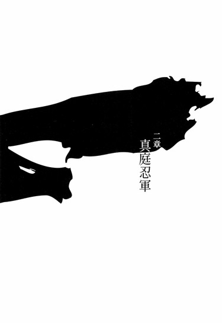

| [西尾維新] 刀語01 | |
| 西尾維新 | |
| (2015) | |
|
刀語 第一話 絶刀・鉋
西尾維新
|
底本データ
一頁16行 一行42文字 段組１段
「ツルギ」、以後「ツルギ」に置換え注略。
「虚刀流はよ、刀を使わないからこそ強いんだ」
伝説の刀鍛冶、四季崎記紀が
その人生を賭けて鍛えた
十二本の〝刀〟を求め、
無刀の剣士・鑢七花と
美貌の奇策士・とがめが征く！
刀語、第一話の対戦相手は
真庭忍軍十二頭領が一人、真庭蝙蝠！
序章
■ ■
京の都には当時、剣の道場が大小含めて六百四十五、数えられた──むろんこれはあくまでも表向きの話であり、裏向き潜り非合法を含めれば、その数は軽く千を越えていただろうことはおよそ間違いがない。その中でも左京の氷床道場と言えば武芸を嗜む者ならば誰もが知るであろう戦国時代から続く名門であり、幕府将軍家とのゆかりも深い。
その氷床道場の中。
七人の男達が──たがいに向かい合っていた。
否、たがいに向かい合っていたというのは状況を表す言葉としてはあまり正しくない──正確を期すなら、六人の男達が一人の男をぐるりと円形に取り囲んでいると、そう言うべきである。
剣術の稽古──といった雰囲気ではない。
どう見ても。
六人の男達は全員、よく知られた氷床道場の黒い道着に身を包み、それぞれ木刀を中段に構えているが──その木刀に囲まれている男の方は、驚くべきことに手ぶらである。控えめに考えてもとても穏やかで平和、牧歌的な場面とは言えそうもないが、しかしその男は、六人の男達には目もくれず、むしろ己の足元──道場の板張りを、気にしているようだった。
一人だけ道着姿ではない。ぼろ布と言われても仕方のない衣服を諸肌で、上半身はほとんど裸──身体は長身で、腕から胴から脚まで、とにかく細いが──しかし、華奢ではない。つくべきところにつくべきだけの筋肉がついているという印象だ。髪はぼさぼさの総髪で、全体的に、野性味溢れる雰囲気がある。
うーん、と、男は首を傾げるように──
足元を気にしている。
「どうかしたか？」
と。
少し離れた、道場の端の方から、そんな声。
壁にもたれるようにして、派手で絢爛な模様の、着物姿の女が、悠然とそこに座っていた。七人の──一人の男と六人の男達の様子を一番よく見えるだろう位置で、にやにやと笑っている。若い女だが──しかし不似合いなことに、伸ばされた髪はいっぺんの曇りもない白髪だった。
「何か気になることがあるようなら、気にせず言ってくれればよい」
白髪の女からの質問に、「ん、いや──」と、取り囲まれている男は、面倒そうに答える。
「気になるって言うか──どうもこういう場所は勝手が違うと思ってな。なにぶん、こっちは島猿だ──こんな綺麗な板の上に立つこと自体、初めてかもわからん」
「なるほど。そういうことか」
女は更に笑う。
いかにも愉快そうに。
「氷床といっても、本当に床が氷でできているわけではないのだがな。しかし、少しは周りの連中のことも気に掛けてやるがよい──そなたが誤解しているようなら正しておくが、そやつらは別に書割の雑魚というわけではないのだぞ。ひとりひとりが、歴史に名を残してもおかしくないような手練れだ──」
「歴史なんか関係ないよ。歴史なんか知ったこっちゃねえっての。そんなこと考えてたら何もできないじゃねえか。要するには全員、剣士なんだろう？」
ぶっきらぼうに、取り囲まれている男は言う。
「剣士ってことは、刀を使うんだろう。刀を使う奴が相手なら、とりあえずおれが負けることはない」
「大した自信だ。まあ、あえてそれを思い上がりとは言わぬが、しかし相手は一人ではない。六人だ」
「六人？ おれなら六本と数えるが」
「どう数えようと構わん。手足に頭を加えた数よりなお多い刀を、どう捌くつもりだ──そなたの拳法でも、どうなるか、というのがわたしの読みだがな。元より刀相手に素手で挑もうというのがどうかしているというのに。いや、勿論、それくらいのことができないようなら、このわたしの役に立つ資格は、最初っからなかったということになるがな」
「それを聞くと、やる気になってきた。おれはあんたの役に立ちたくて役に立ちたくて、もういてもたってもいられねえんだからよ」
じり──と。
六人の男達が、わずかに包囲網を小さくした。
それはそうだろう、まるで自分達がこの場にいないかのように繰り広げられる二人の会話──この由緒正しき道場を代表する精鋭達でなくとも、はらわたが煮えて当然だ。
さすがにその気配に、男は顔をあげる。
しかし口から出る言葉は
「ま、いいか」
と、どこまでも暢気なものである。
表情も暢気そのものだ。
「考えるのも面倒だ。動きにくいけど、これで足が滑るってこともねえだろ──いつでもいいぜ。好きなように合図を出してくれ」
「そうか。よかろう」
女が頷き、
「では、はじ──」
め、と。
言うよりも先に、六人の──六本の木刀は振るわれた。将来の達人が振るう剣線六本、互いが互いに同士討ちになるような不細工は起こりえない。一片の容赦も含まれない剣が交差するように、それでいて同時に、男の全身に浴びせられる──
が。
「はあ──あ。ったく面倒だ」
男はそれでもなお、慌てた様子を見せない。
どころか──不敵に、笑っている。
「言ってんだろうがよ──拳法じゃなくてあくまで剣法。それから、六本じゃ、それでもまだ一本足りないんだよ──おれにとっちゃあな。んじゃま、とくとごろうじろ」
そして、ぐっと低く──身を沈める。
「虚刀流、七花八裂──」
■ ■
──なんて。
まずはまあ、そんな出だしで、こんなところから。
対戦格刀剣花絵巻。
剣劇活劇時代劇。
刀語の、始まり始まり♪
一章 不承島
■ ■
丹後の深奏沿岸から海を挟んで向こう側に、その島はある──周囲四里ほどの、非常に小さな島だ。深奏の村の者でさえその島の存在を知る者は少ない──知っている者も、ほとんど意識はしない。する意味がまったくないからだ。勿論地図には載っておらず、その島には、名前すらない。これまでに誰もその島に名前をつけようとする者がいなかったのだ。やはりそれも──つける意味がまったくなかったからだろう。要するにはこの国に無数にある無人島の中のほんの一つである──
否。
その島が無人島だったのは二十年前までだ。
二十年前、深奏から海を渡った一家族があった──彼らはその島のことを不承島と呼んだ。その島に名前をつける意味を少しでも持っていたのは、彼ら三人だけだった。
■ ■
「あー......、面倒だな」
早朝。
島の中心あたりに建てられた、手作り感溢れる掘っ立て小屋の脇で、一人の男がぶつくさと呟いていた──ぼろ布のような衣服を身に纏った、ぼさぼさの総髪。まだ寝起きも寝起きといった風体で、心の底から嘘偽りなく面倒そうに、何らかの作業にいそしんでいる。
桶だった。
からっぽの大きな桶。
樽と言ってもいいかもしれない──やはりそれも手作り感溢れる造りだった。見ようによっては木の束を縄で縛り付けただけとも見えるが、水が漏れるような隙間はわずかにもない。柄杓をその桶の中に放り込んで、男は桶を背に負う。桶を縛っているのと同じ縄が、両肩にかけられるようになっているのだ。
面倒だな、と、今度は心の中で思う。
もっともそれは特別なことでもなんでもない──桶や柄杓に対して特別な思い入れがあるというわけではない。その男は常々、全てとは言わぬまでもほとんどの事象に対して、とにかく面倒だと思っていた。朝起きるときは勿論、夜眠るときでさえ、面倒だ面倒だと考えながら目を閉じる。
「よっこらせ......っと」
それでも如才なく作業を進めながら、しかしあくまでも物腰は面倒そうに、男は立ち上がる。寝ぼけまなこもそのままに、山に向けて一歩を踏み出そうとする──
そのとき、小屋の戸が開いた。
「七花」
と──小屋の中から、男に声がかけられる。
七花。
鑢七花。
それが、この男の名前だった。
「あなた、何をしているの──七花」
「あ......」
寝ぼけまなこを一転、七花は気まずそうに、ばつの悪そうな表情を浮かべる。目を逸らそうとして逸らしきれず、結果目が泳ぐことになる。悪戯を見つかった子供のような態度だった。無論七花はとてもではないがもう子供と呼べるような年齢ではないし、子供と呼べるような図体でもない。ましてこの場に限って言うならば、取り立てて悪戯をしていたというわけでもないのだが、しかし、小屋から出てきた相手──姉の七実を前にしてしまえば、いつだって子供のようなものである。
鑢七実。
野性味溢れる弟に対し、こちらは清楚を形にしたような造形の女だった──色といい立ち姿といい、よくできた磁器のような印象を受ける。綺麗でなめらかだが──しかしどこか、もろく、壊れやすく、そして作り物のような印象。襦袢に羽織をかけただけの姿で、戸に手をかけたまま、冷たい目で七花のことを見ている。
一切感情を覗かせない口調で、
「何をしているのときいたのよ」
と、七実は繰り返した。
「い、いや......瓶に水が少なくなったからさ──汲みに行こうと思って。姉ちゃんは寝ててよ。ていうか、そんな格好で外に出てくるなよ。寒いだろ」
「上半身裸のあなたに言われたくないわ。大丈夫、少しなら身体がいい具合に冷やされて、気持ちいいくらいよ。それより七花、今日の家事当番は、わたしだったと思うけれど」
「まあ──そうなんだけど。あ、いや、そうだったっけ？えーっと」
しどろもどろになる七花。
あからさまに動揺している。
「ま、まあ別にいいだろう？ これも修行の一環だと思えばさ──」
「七花」
冷えた声。
弁解を一切許さない調子が含まれている。
七花を黙らせるにはそれで十分だった。
「わたしのことを壊れ物みたいに扱うのはやめてって──いつも言っているでしょう」
「いや──そんなつもりは」
「水くらい、自分で汲んで来られるわ。余計な気回しを教えた憶えはなくってよ。それに、修行なんて」
揶揄するような感じでため息を吐いて、七実は気だるそうに言う。
「そんなこと、何の意味もないじゃない」
「意味がないだなんて──」
「だってそうでしょう？ あなたの代で最後になる流派を保つことに一体どんな意味があるというの？」
「............」
姉の口調に、七花は少し黙る。
そんな弟に──七実は再度、ため息を吐く。
ため息の似合う女だった。
「好んで苦しい思いをすることも、ないでしょうに」
「いや......まあ、でも姉ちゃん、そんな言い方はないだろ。おれだって一生懸命やってんだからさ。昨日なんか、新しい必殺技とか考えたんだぜ。すっげー格好いい奴」
「ねえ、七花」
話をそらすことを、七実は許さなかった。
仕方なく七花はしぶしぶと、
「......なに」
と、応じる、
「父さんが死んで、もう一年になるのよ──そろそろ、いいんじゃないの？」
「いいって、なにが」
「桶が作れるなら、船も作れるでしょう」
七花が背負っているものを指さしながら、七実は抑揚なく言う。
「元々、島流しの憂き目にあったのは父さん一人なんだし......、わたしは無理だけれど、あなた一人なら」
「ばかなことを言わないでくれよ」
ここで初めて、七花は姉の言葉を強く遮った。
「おれも姉ちゃんと同じで、記憶も定かじゃない頃から、ずっとここで育ってるんだ──今更本土になんか渡れないさ。右も左もどころか、前も後ろもわからないで、頓死するのが落ちだぜ」
「それでも」
「流派を保つことに、意味があるとはおれも思わないよ。ただまあ、これは唯一、親父から受け継いだものだからさ──大事にできるうちは、大事にしておきたいってだけだ」
「ふうん」
七実は意地悪そうに微笑した。
「あなたがそんなに父親思いだったとは知らなかったわ」
「姉ちゃん」
「いいわ、好きになさい──水を汲んで来たいならそうなさいな。この話はまた今度ということにしましょう。起き抜けにするような話じゃなかったかもしれないわ。朝御飯の準備はしておくから。水が全部なくなったわけじゃないんでしょう？」
「ああ。少しは残ってる」
「じゃあ。......新しい必殺技というのは、そうね、あとで見てあげるわ」
言って。
七実は小屋の中に戻り、戸を閉じた。
それを見て、はあー、と胸を撫で下ろし、ため息をつく七花──図体のでかい男がため息をつくその仕草は、姉のものとは違い、少しも様になりはしなかったが。
「まあ......、そりゃいつかは出る話だとは思ってたけどさ。それが今日だったのか。しっかし、姉ちゃんも無茶を言うよ。桶作るのと船作るのとじゃ、全然違うっての」
二十年前、この小屋を独力で建てたという彼らの父親なら──まだしも。
そんなこと、無理に決まっている。
何故ならこの島には、一本の刃物すらないのだから──
比喩でなく。
七花と七実は閉じ込められているのだ。
この不承島に。
そして、父に。
流派に。
「..................」
父親思い。
そうなのだろうか。
もちろん水汲みを修行の一環だと言ったのはまるっきりの嘘ではないが、（少なくとも修行にならないわけがない）しかしそれを父親思いという言葉と直結されてしまうと、どうにも複雑な気持ちになる。
大乱の英雄と言われた、偉大な父親。
それに比して、何もしていない息子。
まあ、生涯のほとんどをこの不承島で過ごしている七花に、手柄武勲の挙げようもないのだが──この構図には、どうしても七花は劣等意識を感じずにはいられない。
流派を保つために──
父は死の間際まで、七花に稽古をつけていた。
父親から受け継いだ流派は──だから大事だ。
しかし、七実の言う通り、このまま七花がこの島に閉じこもっているようでは、その流派も七花の代でお仕舞いだった。言うか言わないかの違いだけで、それは七実だけでなく七花も、父親すらも、気付いてはいたことだ──このままでは、と。
けれども。
それでも。
七花は外の世界のことは何も知らないし──
それに、知りたいとも思わない。
そんな──面倒なこと。
「......行こうっと」
背中を揺すって桶の位置を調整してから、七花は山の方へと向けて歩き始めた。
何もない島。
それがこの不承島だが、しかしかろうじて、水を汲める場所はある──なければとうの昔に、家族そろって乾ききっていただろう。とはいえそれは川ではないし、まして井戸でもない。山中の湧き水だ。島全体が山のような造りになっているため、どこを指して山というべきかはいまいちはっきりしないが（強いて言うなら、砂浜と、掘っ立て小屋の建てられている平地以外は、全部山だ）、とにかく険しい山中の奥まったところに、その水汲み場はあり、七花としては、進んでそこまで、姉に水汲みに行って欲しいとは思わないのである。ゆえに七花は父親が死んでからのここ一年、自分が家事当番のときにさりげなく水の補給を済ませていたのだが、ついに露見してしまったというわけだ。これで連鎖的に、あらかた力仕事を七花が担当していたこともばれてしまうだろう──仕方がない。そもそも、あの勘のいい姉を相手に要領の悪い弟が長期間、そんな所業を続けられていたこと自体が一種の奇跡のようなものなのだ。
──顔色。
少し悪かったな、と七花は姉の姿を思い出す。
朝早かったから──では、ないだろう。
透き通るような白さというよりむしろ澄み渡るような青さと言えるくらいの肌の色を持つ七実の顔色を判断できるのは、実際この弟くらいのものだろうが──
──しかし。
また体調が崩れたか、と思う。
寒さが気持ちいいと言っていた、ひょっとすると、軽く熱があるのかもしれない。
鑢七実の身体の弱さは、見た目に歴然としている──死霊とまでは言わずとも、夜に会えば生霊くらいには見えてしまう具合である。それでも、ここのところ、調子よさそうだったのに──それが自分が家事を肩代わりしていた効果だとは思わないけれど──しかし、弟の勝手な所業に気付いてしまった以上、休んでいろと言っても聞かないのだろう。むしろその分を取り返そうと、やっきになって働こうとするかもしれない。面倒がりの弟とは何もかも真逆のあの姉は、とにかく休むという行為を嫌う。一見すると、七実のあの気だるそうな態度は七花のそれに通じるところがないでもないようにも見えるが、その実、中身はまるで違う。気だるそうなのは、単に本当に体調が悪いだけである。
働きたがりなのだ。
病弱な癖に。
あるいは、病弱だからこそなのかもしれない──人は自分にはないものを求め、自分にはできないことを望むものである。七実にせよ、それは同じなのかもしれない。
しかし自分は、それとは違うだろう。七花はたぶん、自分にあるものを嫌い、自分にできることを厭う──
──父親思い。
大乱の英雄──か。
そこで思考を停止し、目を閉じる七花。
頭が痛くなってきたのだ。
七花は考えごとが不得手で、頭を使うのが苦手だ。嫌いとか厭うとか言うならば、彼はごちゃごちゃした理屈が一番嫌いだった。
それもまた、姉の領分である。
──弓と弦。
いや、割れ鍋に綴じ蓋──か。
結局のところ物事はなるようにしかならないし、起こることは起こるべくして起こる──それだけのことだと、七花は思う。ならば考えるよりも先に、身体を動かした方がずっといい。
「ん......？」
と、そこで、ふと気付く。
父が死んだ今、この島のことは、七花は誰よりも熟知している。いや、これに関しては、父が生きていたときでさえ、そうだったかもしれない。元々が小さな島だ、一木一草にいたるまで、全てを把握しているとさえ七花は思っている。だから──島の中に変化があれば、それがどんなわずかなものであれ、気付くことができる。
「..................」
土が少し、乱れている。
足跡だ。
小さな足跡──しかし、人間の足跡。
雪駄の足跡である。
まずは姉の七実のものかと七花は考えたが、しかしそれはないだろう。第一に七花はこんな雪駄を作った憶えはないし、第二にこの足跡はまだ新しい──いくらなんでも、あれから七実が自分を追い抜いたとは思えない。似合わぬ考えごとをしながらとは言え、ここまでは七花はほぼ直線移動で来た。そして七実は亀にも追いつけないほど身体が弱い上に、山のふもとまで競走だと言って海に向かうほどの、極度の方向音痴である。
とはいえ、この島には今、七花と七実、二人しかいない。七実の足跡でなく、勿論七花の足跡でもないのなら一体これは誰の足跡だと言うのか。
消去法で考えれば──否、どのように考えても、否否、考えることをしない七花でさえも辿り着ける明瞭な結論としては──自分達以外の人間がこの島にいる──ということになる。
特に気になるわけではない。
面倒だと思うだけだ。
それより早く水汲み場に水を汲みに行かなければならないとすら七花は思うが──しかし、さすがにそういうわけにはいくまい。彼の父は流されてからの十九年間、この島に他の人間が入ってくることを極度に警戒していた。結局、何度か危ない橋を渡りはしたものの、そんなことは一度もなかったのだが──
ついにその一度目がやってきたということか。
奇しくも、その父親が死んでから。
「親父がいたら一発で斬り捨て御免なんだろうが──しかし、おれはどうすっかね。歓迎してやってもいいのかな──その辺の判断は姉ちゃんに任せるか」
そんな独り言を口にしてから、七花は道筋を変更する。勝手知ったる不承島──ゆえに、大体、この足跡の主が何を考えて歩いているか、七花には見当がつく。要するに、比較的歩きやすい道を歩いているのだ。歩きやすい道を歩きやすく歩いているだけ──道なりと言ってもいい。まあ、そもそもが山の中のこと、道などあってないようなものなのだが、それを差し引いても、とても明確な目的地があるとは思えない歩き方である──たとえ明確な目的地があるのだとしても、道を全く知らないのだろう。
あるいは、姉と同じく、方向音痴か。
七実ならまだしも、普通の人間がこんな山で道に迷ったら、二度と出て来れないはずだ。遭難もこれに極まれりである──とはいえ、よくよく思い出してみれば、七花はこれまでに、その「普通の人間」とやらには、会ったおぼえがない。七花が父親に連れられてこの島に来たのが二十年前──当時七花は四歳だ。ゆえに、「普通の人間」も「外の人間」も、彼は知らないと言っていい。七花が知る「人間」は、この世にたった二人だけだ──一年前に死んだ父親と、一緒に暮らしている姉だけだ。「外の世界」のことは、ある程度父親から教えられてはいるものの──それは知識だけのことである。
だから、それこそ普通という言葉を使うならば、ここで鑢七花は、見知らぬその足跡に対し、そしてその足跡の主に対し、もっと警戒心を──とまでは言わずとも、少なくともある程度の思索を巡らすくらいのことをするのが普通だっただろうが、残念なことに、彼は生来の面倒がりである。
思索とはとにかく縁がない。
一旦あの場で引き返し、同じ環境で育ちながらも対照的に思索を得意とする姉に相談するというような行いに出ていれば、この後に繰り広げられる面倒ごと──もとい、冒険譚に巻き込まれずには済んだものを、本当に、世の中とはうまくいかないものだった。
しかし──なるようにしかならない。
起こるべくして起こる。
得てして──そういうものである。
道をさえぎる枝の払われ方から、七花は足跡の主の身の丈を想定する。どうやらそんなに背の高い方ではなさそうだ。しかし、子供というほどでもない。足跡が小さいというだけでは子供という線もあったが、これでそれは消えた。成人女性だ。
しかしそれ以上のことは、七花は思わない。
ただ、成人女性だ、と思うだけだ。
唯一。
一つだけ、七花の巡りの悪い頭でも気にかかることがあるとすれば──それは足跡の沈み方だ。ぬかるんでいる泥土というわけではない、はっきりとはわからないが、右足よりも左足の方が、足跡が深いように見える。
身体の左側に、何か荷物を持っているのか......？
重い荷物を。
「......ふうん」
しかしそれでも、所詮「ふうん」程度だった。
ともあれ、七花のその予想が的中していたことは、ほどなく知れる──七花の図体は細くはあるがとにかくでかい、足跡の主が女性であり、しかも重い荷物を持っていて、ましてこの山中に不案内とくれば、これは追いつかない方がおかしい。
線の細い女性だった。
伸ばした髪の色がいっぺんの曇りもないほどに白いため一見年齢不詳だったが──まだ若い女だ。結わずに垂らしっぱなしの髪型は姉の七実と同じような形で、金刺繍の施された、派手な衣装。とにかく豪華絢爛な身なりだった。こんな山中を歩くにはあまりにも不似合いな格好だし、事実、張り出した木枝に引っかかったのだろう、裾の方はずたずたに破れてしまっている。しかし、それすらも粋と感じさせてしまうほどに、元々女は、その衣装を着崩していた。各種付属品もまたきらきらと綺麗で豪奢で、個別に見れば文句こそないのだが──しかし総じて見れば、普通の感覚をしていれば軽く引いてしまいそうなくらい、装飾過多な女だった。
もっとも。
やはり『普通』を知らない七花は、そんな女の格好を見ても何とも思わなかったし、異彩を放つ白髪を見ても何とも思わなかったが──ここでもただ一つ、気になることがあった。
女が左腰に帯びている刀である。
重い荷物は刀だったのだ。
「別に立入禁止の札を立ててるわけじゃないから、よそ者だろうが誰だろうが、この島に這入ってくるのは構わないんだけどよ──」
と。
七花は女に、躊躇いなく声をかけた。
この辺りも、怖いもの知らずである。
定法ならばもう少し、経過を観察するものだが。
「それでも、この島に這入ってきた以上、一つだけ許されないことがあるんだぜ──この島への刃物の持ち込みは堅く禁じられている」
「............」
突然声をかけられたにもかかわらず──
まるで驚いた風もなく、女は振り返る。
つり目の、見るからに気の強そうな顔立ちだ。
権高な雰囲気を隠そうともしていない。
そのつり目で、まずは七花を凝視して、それから、自分の腰物を見、
「それは失礼をした」
と、一応は、頭を下げた。
「知らなかったものでな。許しておけ」
「......まあ、おれが決めた規則じゃないけどさ」
父が決めた規則だ。
お陰で七花と七実は、料理から何から、刃物なしでやらなければならなかったのだ。二十年もそうしてきたのだから今更それを何とも思わないが──そう言えば、案外、本物の刀を見るのは、これが初めてということになる。
ひょっとしたら島に来る前に見ていたかもしれないけれど──四歳の記憶力では、そんなことは憶えていない。たとえ二十年振りだとしても、やはり、初めてのようなものだ。
なるほど。
あれが──刀か。
確かに、重そうだ。
「あんた──どうやってこの島に来た？」
「船で来たに決まっておる」
即答。
まあ、当たり前である。
訊いたことが恥ずかしくなる問いかけだった。
しかし、七花はそれを取り立てて恥じることもなく、
「何をしに来た？」
と、続ける。
知りたくて訊いているわけではない。ただ、こういうときにはこういう質問をするべきだと、父や姉から言われていたことを忠実に実践しているだけである。頭の中では答を待たず、次に何を訊かなければいけないのだっけ、いやそういえば、最初に名前を訊くべきだったっけ、とか、そんなようなことを考えている。
「ふむ。この島に──虚刀流六代目当主鑢六枝どのがおると聞いてきたのだが、そなた、なにか知らぬか」
「六代目なら死んだよ。一年前」
七花は答える。
父親の客だったのか。
ならば明確な目的地はあったのだ。
それを聞いて、女は、今度は少しだけ意外そうな顔をしたが、しかしすぐに取り直し、
「そうか」
と、頷く。
「そういうことも、あると思ってはおった──何せ、二十年も前の話になるゆえな。しかし──だとすると、そなたは──」
「今はおれが当主だ。虚刀流七代目当主、鑢七花」
「ああ──」
女は笑う。
得心いったというような笑みだ。
「考えてみれば、当然であったな──いや、これは愚問であった。この島には六枝どのとその家族以外は暮らしていないのであったな。となると、そなたは──」
「そう。不肖の息子だ」
「なるほど。いい身体をしておる──見てくれもまあまあだ。及第点と言ったところだな」
「及第点？ なんだそりゃ」
「ん？ ああ、こっちの話だ」
「親父に用事だったのか？ じゃあ、悪いけど──」
「その通りだが、少し違う。用があったのは、虚刀流当主にだ」
女は言った。
「ゆえに、六枝どのへの用事は、今、そなたへの用事へと変わったのだ──七花。名乗りが遅れてしまったな。わたしはとがめという。奇策士だ」
「とがめ？」
変な名だ。
それに──その後なんと言った？
奇策士？
そこで初めて七花は、自分の意思で、女に対して質問をしようと思ったが、しかしそれよりも、女の行動の方が早かった。
「まずは虚刀流。試させてもらうとしよう」
そう言って──
女はすっと、左腰の刀を抜いた。
刃長四尺反り一寸足らずの、細い太刀。
刃文は細い直刃。
刀身に虎の彫り物がされている。
「富岳三十六刀工が一人、壬生傘麿の初期作品だ──とはいえ大乱の英雄、鑢六枝に試すには少々力不足かと思っておったのだが、しかしその息子を相手にするのならば、これで分相応といったところであろう」
「試すって──なんだよ」
「考えずともよい、言葉通りの意味だ。参る！」
初めて見る刀に──そして自分に向けられる初めての刀に、しかし、七花は全く動揺しない。刀を見るのは確かにこれが初めてだが、しかしそんなものはこの島に来てからの二十年間、ずっと想定してきた。六代目、父親が死んでからも、稽古は欠かしたことがない。
だからこそ。
鑢七花は剣を相手に臆することはない──！
「ぎゃふんっ！」
しかし。
この場面ではまだ、虚刀流に秘められた数々の技が披露されることはなかった。威勢のいい掛け声と共に七花に向かって刀を振り上げた女──とがめは、足元に張り出した小岩に足を取られて、無様に顔面から地面に突っ伏したのだった。
虚刀流当主鑢七花と、奇策士とがめとの出会い。
それはまだ、ぎゃふんという言葉が古くなかった時代の、睦月中旬のことだった。
■ ■
虚しい刀の流れと書いて、虚刀流。
その起源は戦国の乱世まで遡る。
開祖は鑢一根。
日本刀が、個人で扱う凶器の中でもっとも優れた一品であることは、いつの時代であっても揺るぎのない事実だ──おそらくその事実は未来永劫、変わることはないだろう。日本刀の利点は枚挙に暇がないが、あえて二点だけ挙げるとするならば、それは長く、重いということだ。長いから斬りやすく、重いから斬りやすい。一人の人間を強化する上で、これほど重要な点はない。しかし森羅万象全てにそれが言えるよう、その利点は同時は弱点でもある──長いから振り回しづらく、重いから振り回しづらい。
開祖一根は考えた。
剣士こそがこの世で最強の生物。しかし真に最強を名乗るためには弱点があってはならない──たとえ利点を捨てたとしても、と。そして彼は、恐らくはこの国開闢以来剣士としては誰も考えたことさえもないだろう境地に至ることを画策したという。
つまり彼は剣を捨てたのた。
刀を使わない剣士こそが真の剣士──それが彼の答だった。その至りより十年間、山にこもり決死の思いで血を吐きながら作り上げた流派が、虚刀流である──現在の幕府設立に大きく寄与した六大名の一家、徹尾家の下、彼の技は戦国を大いに震わしたという。
拳法ではなく、あくまで剣法。
無刀取りですらない殺人剣術──
と、言われている。
と、言われている──とは言え、真偽のほどはともかくとして、ここまでは、知ろうと思えば知れることだ。しかし、ではその虚刀流──刀を用いない剣術というのが如何様な武芸なのかと言えば、それを実際に知っている者は、ほとんどいない。真偽というなら、偽りの知識すらも流れていない、全てが秘伝なのだ。どうしてもそれを知りたくば虚刀流に弟子入りするか、あるいは虚刀流と敵対するかしかないだろう──前者は不可能ごとに近い。一根は虚刀流を、血によって受け継いでいくことを定めていた。まさしく門外不出の技術である。ならば刀をもって彼らの前に立つしかないが──虚刀流を知るときは、自身が敗北するときなのだ。たとえ命が助かったとしても、剣を持つ者が剣を持たぬ者に負けたなどという話を、おいそれと吹聴するわけもない。
闇に包まれた流派。
その技術がわずかに日の目を見たのは、初代当主鑢一根と、六代目当主鑢六枝の代だけである──戦国と大乱。いくさ場の混乱と混沌の中でのみ、その技は惜しみなく振るわれたのだ。
そして。
六代当主鑢六枝の技術を、十九年をかけて受け継いだ鑢七花が──虚刀流の現在の当主ということになる。
「とがめさん──でしたっけ」
鑢七実は、心の乱れをまったく感じさせない平静な声で言った。
あれから。
地面に強く頭を打って、気を失ってしまった女、とがめを、本来水を入れる予定だった背中の桶に突っ込んで、背負い直し、七花は掘っ立て小屋へと帰ってきた。小袖は着替えていた七実は、水ではなく女を持って帰ってきた弟に、少しだけ眉を顰めたが──もちろん、水を汲んで来なかったことに対して眉を顰めたわけではない──、とりあえずは、気絶している女性をそのままにしておくわけにもいかないと、二人がかりで小屋の中に運び込んだ。その際、腰の物は、ちゃんと没収しておく。またこんなものを振り回されても困る──いや、あの場面を回想する限りにおいては、とりたてて困りはしないのだが。
七花より本土にいた時間は長いとは言え、それでも七実にしてみても二十年ぶりに見る他人のはずだったが、その辺りに対しては、七実は冷静だった。七花と同じく考えるのが面倒だから──ではなく、恐らく、こういった状況にきちんと対処できるように、常日頃から備えていたということだろう。七実は用心深いのである。きっと天が落ちてきたときにも、きちんと問題なく対処できることだろう。
小屋の中身は、土間と一部屋だけだ。
きょうだいで朝食を食べながら今後の対策を話し合っていると、ちょうど食べ終わった頃に部屋の端で寝かせていたとがめが目を覚ましたので、七実が立ち上がり、用意していた白湯を彼女に差し出した──という場面である。
「なにぶん、この島にいらした初めてのお客様ですので──もてなす作法を心得てはいませんが、その辺りはご容赦ください」
「いや──こちらこそ、突然の来訪、申し訳ない」
と、七実から差し出された白湯を受け取りつつ、とがめは答える。息子がいることは知っていたようだが、娘がいることは知っていたのだろうかと、七花は思う。先程のとがめの口振りから判断する限り、色々と知った上でこの不承島に来たようだから、その程度のことは知っているだろう──と、普通ならそんな風に予想できそうなことではあるが、しかし七花はそこまで予想するのが面倒だったので、まあ知らなかったところで状況から判断できるだろう、だったら説明しなくてもいいやと、考えるのをやめた。
もちろん、出来のいい姉は、自己紹介に関し、不出来な弟の世話になろうとは最初から思っていない。
「鑢六枝の娘──七実と申します」
そう言う。
そして続けて、
「聞けば、とがめさんは、父を訪ねて来られたということですが──父とは、どういったゆかりがおありなのですか？」
と、早速本題に入った。
「直接お会いしたことはない──ゆかりといえるほどの繋がりもない」
「ありませんか」
「ない」
やけに力強く、とがめは言う。
「ただの飛び込みと考えてもらって結構だ、七実」
その言葉の裏には緊張と警戒が秘められているのは明らかとは言え、七実があくまで丁寧な物腰なのに対し、とがめはいきなり尊大な態度だった。少なくとも突然の来訪を申し訳ないと思っている態度ではない。七花のこともそうしていたように、当然のごとく、七実のことも呼び捨てにしている。しかし、小岩に足を取られてすってんころりん、額にこぶを作った女がそんな態度を取ったところで、今のところは滑稽なだけである。それ以前にこの女、考えてみれば、この掘っ立て小屋という明確な目的地があったということは、さっきまで道に迷っていた、遭難していたということになるのだが......それでこの態度なら、滑稽というよりはむしろ立派というべきなのかもしれなかった。滑稽と取ったか立派と取ったかは定かではないが、七実もそれで気分を害する様子はなさそうだった。
しかし、そもそも七実にはとがめの態度など、最初からどうでもよいのだろう。気にしているのはとがめの目的──それだけのはずである。虚刀流の当主こそ七花ではあるが、父亡き今、この鑢家の家長は、鑢七実なのだ。
「刀は、預からせてもらっています──弟から聞いたと思いますが、この島は、刃物の持込・使用を禁じていますから」
「ふむ。虚刀流ゆえに──かな」
「そうです。......ところで、とがめさん。あなたはその刀で弟を斬りつけようとした──とか」
「虚刀流の真髄を手っ取り早く見せてもらおうと思ってな。しかし慣れぬことはせんものだ。わたしは奇策士であって──剣士ではない」
「その割には」
と、会話に割り込む七花。
「抜刀のさまは、見事なものだったけどな」
抜刀のさま──だけは。
「ふっ」
不敵に笑うとがめだった。
「あれだけは練習してきたのだ」
「..................」
もっと最後まで練習してこい。
と、さすがの七花でも思った。
「乱暴な方法ですね──あまり感心できません」
「そう思われても仕方がないが、しかし、こちらにも思惑があった。虚刀流の鑢六枝の名は聞こえていたが、わたしはその顔を知らなかったからな。人違いが起きては大変だ。虚刀流の技を示してもらえるようならば、それが何よりの名札代わりだ」
「六枝が七花でも、それは同じ──ですか。なるほど」
納得したように頷く七実。
それで納得するのも本来おかしいが。
「では──もう一度、試してみますか」
七実はちらりと、土間の方に視線をやる。
預かった刀は、そこに立てかけてあるのだ。
「わたしとしては、あまりお勧めはしませんが──刀を持たぬというだけで、虚刀流は隅から隅まで殺人剣。不殺ではなく必殺の剣。小岩に足を取られたことは幸運だったと思ってください。もしも刀身が七花の肉体に届いていたなら──額にこぶ程度では済みませんでしたよ」
ぞくり、と。
部屋の温度が下がるような口調だった。
表情には出ていないが──弟に刃が向けられたことを、怒っているらしい。
とがめもそれに息を呑んだようだが、しかしそれよりも息を呑んだのは、七花の方だった。いや、おれでも手加減くらいはできるって、そうでなきゃ稽古なんかできないじゃんと、できれば注釈を加えたいところだったが、呑んだ息がその注釈の邪魔をする。
「否──その言葉をもって、虚刀流の名札と、受け取っておくとしよう。わたしも命は惜しい──まだ死ぬわけにはいかん」
「さようですか。では」
お話をうかがいましょう、と七実は言った。
この場を仕切っているのは明らかに七実であり、また、話題の中心はとがめである。軽く疎外感を覚える七花だったが、しかしそんな疎外感で傷つくような繊細な心も、彼は持ち合わせていない。まあ、こっから先は姉ちゃんに任せておけばよさそうだ、なんて暢気に考えていた。
だが、そこでとがめは、
「虚刀流七代目当主」
と──七花に水を向けた。
「そなた、天下が欲しくないか」
「いらん」
「そうであろう、それはこの世に生を受けたからには当然のことだ。野心の強さを恥じることはない。先の大乱も記憶に新しいが、かの反逆者達の小意気そのものまでを、誰が否定できよう。突き詰めてみれば今の将軍家も、元々は下克上で成り上がった家系ではないか。ならば人が天下布武を志すに躊躇する理由はない──ってえ、いらんのかい！」
乗り突っ込みは。
どんな時代でもある。
「ああ。いらんってわけじゃないが......」
七花は少し言葉を選ぶ。
いきなり話を振られたのでついつい反射的に拒絶してしまったが、質問の意図を理解して答えたのではない。しかし、改めて考え直してみても、とがめの言いたいことは、七花には全くわからなかった。そう、わからないというのが、この場合の七花の正しい答である。突然天下と言われてもまるでぴんと来ない。七花にとって世界とは、この不承島のことだけである。ならば欲しいも何も、それはもう手に入っているではないか。
打っても響かないその曖昧な反応に、とがめは少なからず表情を引きつらせた。それを見てられなくなったのか、「とがめさん」と、七実が横から、助け舟を出す。
「なにぶん、わたし達は島育ちの世間知らずです──結論から先にいうやり方や、遠回しな表現は、通じぬものと思っていただいた方がよいかと」
「ん......そうか」
頷いてから、そこでとがめは、
「ああ、しかしそうなると、できれば七実には、席を外してもらいたいのだが──」
と言った。
「できる限り外に漏らしたくない話なので──」
「それは無理な相談だ」
みなまで言わさず、七花がとがめの言葉を、今度は反射的にではなく、拒絶する。
「理由は二つある。一つは、虚刀流は血族の技だからだ──たとえ親父が生きていたって、おれと姉ちゃんをこの場に同席させただろう。そしてもう一つ......おれはものを考えるのが苦手だ。難しい話は理解できない。もしもあんたが何か大事な話を抱えているっていうんなら、姉ちゃんを同席させておいた方があんたのためだ」
「......そうだな」
尊大な態度を一向に崩さない彼女にしては、七花の意見に随分とあっさり退いた。まあ、一つ目の理由だけならまだしも、二つ目の理由を聞かされてしまうと、いかにとがめでも退かざるを得ないだろう。
「確かに、その通りだ──その通りではある。では、他言無用という約束で、一から説明させてもらうことにしよう」
「できる限りわかりやすく頼むぜ」
「四季崎記紀という刀鍛冶を知っておるな」
「知らん」
「そうであろう、このような離れ小島に住んでおったところで、剣客を名乗る以上はその名を知らぬというわけにはゆくまい。刀を使わぬ虚刀流と言えどそれは同じ──いや、刀を使わぬ虚刀流にとっては、四季崎記紀は天敵のような存在になるのか。初代だろうが七代目だろうが、当主としてその思いは同じということだな──ってえ、知らんのかい！」
反復技法もまた。
どんな時代にもある。
「七花──知らないわけがないでしょう。父さんが何度か、話題に上げたことがあるはずよ。四季崎記紀......戦国時代の有名な刀工──ですよね、とがめさん」
「......？ その程度の認識しか──ないのか？」
本気で疑問そうに、七実に確認するとがめ。七花には確認するまでもないと思っているらしい──正解だが。姉がそう言うからには、恐らく父から、自分はその刀鍛冶のことを聞かされたのだろうが、しかし七花はある程度以上難しい単語を意識せずに聞き流すという、虚刀流とは何の関係もない技術を身につけているので、全く憶えていない。
「なんだよ。その四季崎ってのは、さっき言ってた、ええっと──なんだっけ、そうそう、富岳三十六刀工ってのの中の一人なのか？」
「違う、そうではない──それどころではない。......七実。六枝どのは一体、四季崎記紀について、どこまで語ったのだ？」
「先程とがめさんが仰った通り──虚刀流の対極だということは、聞いています。何でも──虚刀流の開祖と、浅からぬ因縁があったとか」
「それから」
「精々、それだけです。どんな因縁なのかも──知りません」
「............」
沈黙して、思案顔をするとがめ。どうやら、二人があまりにも、その刀鍛冶に関する知識を持っていないため、困惑しているようだ。七花だけならまだしも七実が知らないということは、それは父親の六枝が、その刀鍛冶について、詳しく語らなかったということなのだろう。ならばそれは何故か──と、そんなことを考えているのかもしれない。
七花はそんなこと、露とも考えていないが。
どころか、もったいぶらずにさっさとその刀鍛冶について説明しろと思っている。
別に説明しなくてもいいとも思っているけれど。
「戦国の世は、この国の歴史上、剣士剣客がもっとも輝いた時代だ──いくさ場における主役は、大名でも指揮官でもなく、彼らであった」
やがて。
とがめは、一からと言った更にその前から、説明を開始したようだった。
「虚刀流開祖、鑢一根もまた、そんな中の一人だったのだが──そんな戦国の世を裏から彩ったのが、刀工だ。刀匠だ。刀鍛冶だ。剣士が役者なら、刀鍛冶は裏方だ──いや、演出家だ。当たり前の話だが、刀がなければ剣は振るえない。虚刀流を除いては──な」
「そりゃそうだ」
七花は相槌を打つ。そのくらいの話ならば、七花の理解能力でも十分に追いつく。ここで話が終おってくれればいいのにとさえ思うが、さすがにそんなわけがない。とがめは続ける。
「先に挙げた富岳三十六刀工もその一角だが──その中の異端中の異端が、四季崎記紀だ。どの流派にも属さない、孤独にして孤高の刀鍛冶。しかし、彼こそが戦国を最も支配した刀鍛冶と言われておる」
「戦国を支配するという、言葉の意味がわかりませんが──」
そんな七実の問いかけに、とがめは、「ほとんどは文字通りの意味だと思ってもらって結構だ」と言った。
「虚刀流が戦国六大名の一家、徹尾家専属の剣客であったのとは違い──四季崎記紀はどこの国にもどこの家にも属さず、己が打った刀を、全国に節操なくばら撒いた。総計二十五ヵ国に──合計千本の刀をだ」
「千本──多いな」
「千本──少ないですね」
七花と七実の意見がぶつかった。
二人、目配せをする。
「......少ないの方で」
七花が引いた。
きょうだい間の力関係がはっきりと出ている。
「二十五ヵ国に千本ということは──一国あたり、四十本ということですか」
「いや、所有する数はまちまちだったのだ──そしてそれが問題なのだ。図表にしてみれば残酷なほどに明確になるのだが──二十五ヵ国の優劣は、ほとんど四季崎の刀を所有する数で決しているのだ。四季崎の刀を持つ数の多い国ほど──優勢に戦闘を進めた。それを、戦国を支配したと言わずして何と言おう？わたしが言っているのはそういうことだ」
「......それは、逆なのでは？」
若干、躊躇するようにしながらも、七実が言う。
「戦闘を優位に進められるほど国力の大きな国だからこそ──四季崎の刀を多く集めることができたのだと」
「確かに、現実的にはそう見るべきだろう」
七実の意見をあっさりと認めるとがめ。
「しかし、少なくともそういう幻想が生じたことも、また確かだ。四季崎の刀を持つ者が天下を制する──という幻想が。その幻想から自由であったのは、虚刀流を抱えた徹尾家くらいのものだったはずだ......あるいは、だからなのかもしれないな。六枝どのがそなた達に、四季崎記紀について、多くを語らなかったのは──」
虚刀流としての矜持──
そういうことだろうか。
いやしかし、あの親父はそんな人間ではなかったけれど、と七花は思うが、口には出さない。これは面倒だったからではなく、四季崎記紀という刀鍛冶の話に、ちょっとだけ興味が湧いたからだ。話が逸れることを恐れたのである。
なるほど、確かに虚刀流の対極だ。
刀を捨てた一人の剣士と。
戦国を支配した千本の刀と。
「象徴的な話がある。七花──現在の尾張幕府が成立する以前、戦国時代終焉末期に、ほんのわずかな期間だけ、天下統一を成し遂げた人物がいることを知っているだろう」
「知っている」
「ふっ、いくらそなたでもその程度のことは知っているか──ってえ、知ってるんかい！」
「うん」
「ぐっ......」
悔しそうなとがめ。
どんな時代でも。
この手の会話は三回繰り返さねばならぬのに。
「どこだっけ──そうそう。四国の土佐か。阿波、讃岐、伊予と同盟を結び、全国を四国から支配しようと試みた──旧将軍って言うんだっけ？」
まあ、とは言え、これではとても知っていると言えるほどの知識ではない。七花と七実は父親から一通りの教育は受けている──その内、歴史の授業の一環を、たまたま憶えていたと言うだけだ。
旧将軍。
二百五十年に及ぶ戦国時代に終止符を打った大名──ただし、天下統一を成し遂げた頃にはもうかなりの高齢で、しかも後継者がいなかったため、統一したところでそれを支配する制度を構築することができなかった。『将軍』にはなれても『将軍家』には成りえなかったのだ。それでも旧将軍の力は大したもので、はっきり言ってしまえば、現在の尾張幕府の成立はその旧将軍の功績を引き継いだだけだ──と、六枝は言っていた。
「その旧将軍も──四季崎記紀の刀を所有していたということなのでしょうか？いえ、先程の話を受けて考えるに、四季崎記紀の刀をもっとも多く所有していたのが──」
「そうだ」
七実の推測を、とがめは肯定する。
「天下統一を成し遂げた際、旧将軍が所有していた四季崎の刀の総数は、五百七本──過半数だ。これで天下が取れぬ方がどうかしている──のかな。幻想の視点にのっとって言うならば」
「過半数──集めも集めたりって感じだな。大人げねえ」
「貪欲というべきであろう。だからこそ短期間とは言え、天下が取れたのだ──この話はもう少しあとでする予定だったが、話の流れが丁度よいので、ここで触れておくとするか。天下統一を成し遂げたのちの短期間で、旧将軍が取った天下に対し行なったまつりごとは少ないが──そんな中でも際立って一つ、重要なことがある。わたしにとって重要という意味ではなく──天下に対して重要なことだ。なんだかわかるか」
「わからん」
「あ、う......」
今更の三度目、七花の即答に乗るか乗るまいか迷って──躊躇してしまったとがめは、言葉に詰まってしまったようだった。いまいち段取りの悪い感じである。
「この話の流れでというなら、刀狩でしょう」
言ったのは七実だった。
弟のそういう物言いには慣れているようだ。
「刀狩令。日本の歴史上、もっとも愚かな悪法の一つ──旧将軍の天下が一代で終わった理由の一つとも言われているそうですが」
「ああ、思い出した」
七花が言う。思い出していないのに答が出たから聞いたことのある振りをしているのではなく、これは本当にちゃんと思い出したのだ。それはやはり歴史の授業において、六枝から聞いていた──刀狩令。表向きには大仏建立のための材料として、一切の例外なく全国の民に刀剣を差し出すよう強要するというとんでもない法律である。
「けど、それは表向きの話で、実際のところは旧将軍による剣客狩り──だったんだろう？この日本から、武士という生き物、剣士という生き物を、根こそぎ根絶やしにしてしまおうという──いっそのこと剣客廃止令と言ってもいい法令だったと聞いているぜ」
「そういう裏の理由があったのは確かだ──旧将軍は雑兵出身、まさしく剣一本から始まって天下を取った方だからな。剣士の恐ろしさを誰よりも知っていた。この世に存在する剣士は自分ひとりで十分だと──そう考えていたことは間違いがない。無論、表の理由だって嘘じゃない。土佐の鞘走山清涼院護剣寺には刀狩令によって蒐集された刀剣で作られた御仏、通称『刀大仏』が、きちんと立てられた。『清涼院参り』と言ってな、鞘走山は今では剣士にとっては聖地のような場所として、立派な観光名所になっておる」
そこでとがめは七実を横目で見た。恐らく七実には、もうこの先の見当がついているだろうと、窺ったのだろう。その意図を察したように七実は、
「しかし、裏の理由も表の理由も本来の真実ではない──ということですね」
と、言葉を続けた。
「裏でも表でもない、刀狩の真の目的は──四季崎の刀の蒐集にあった──」
「その通りだ」
とがめは我が意を得たりとばかりに、講談師のように膝を打った。
「旧将軍は、他の大名が所有する分はもちろん、野に散った個人所有の刀に至るまで、四季崎の刀を千本すべて、蒐集しようとしたのだ──そのための刀狩令だった。旧将軍は、己が天下を取れた理由が四季崎の刀にあると思っていた──のだ。幻想、だろう？妄想、かもしれない。しかし──そう信仰した。本来の真実──というならば、旧将軍にとっては、それは揺るぎなき真実だったのだ。ゆえに己の天下をより磐石にするために、残り四百九十三本の刀を手に入れようとした──という」
「それでその悪法かよ」
さすがに呆れる七花だった。
「権力ってのは、持つべき奴と持たざるべき奴がいるもんだな。まだしも剣客狩りって目的の方が、理に適ってるように思えるぜ」
「かもしれん。発令から執行停止までの三年間、刀狩令は機能したが──まあ、表の目的である大仏建立はともかく、当然ながら裏の目的であった武士の撲滅などできるわけがなかった。とは言え、それでも十万本を越える刀が、旧将軍の下に集まったのだ」
「十万本──少ないな」
「十万本──多いですね」
再度、七花と七実の意見が衝突した。
どちらが退いたかは言うまでもない。
しかし、その答には、「五百本の刀を集めるために十万本というのは、やはりやり過ぎの部類であろうな」と、とがめも同意した。
「その内のほとんどは、十把一絡げ、一山いくらの量産品だったが──そうは言っても、四季崎の刀は相当数、集まったのだ。まあ、大半は有名な戦国大名が所有していたのだから、それもそのはずなのだが──それまで所在の知りようもなかった、在野の個人が所有していた四季崎の刀を集めることができたのは大きかった」
「相当数？ 全部じゃないのか」
「全部ではない。集まったのは──総計で四百八十一本だ。つまり──合計で、旧将軍が最終的に所有した四季崎の刀は、九百八十八本ということになるな」
「おかしいじゃねえか。刀狩令は三年で停止したんだろう？それだと全部集める前にやめちゃったってことになるぞ。いや、そうじゃなく──そうか。戦乱の中で、折れたりなんだりで、消耗した刀もあるってことか」
「いや──違う。最終的に、旧将軍は諦めたのだ」
「諦めた？」
天下すら制した者が──諦めただと？
「刀狩令は悪法ではあったが、しかし悪法と言えども法は法、千本全て、所在までは突き止めることができていた──所在まではな」
「所在がわかれば蒐集できるだろう。今となっては旧とは言え、当時は誰にはばかることもなく、将軍そのものだったんだから。持たざるべき奴が持っていたとしても、権力は権力──だろう」
「そうは問屋が卸さんよ。今言ったところであろう。四季崎記紀の打った刀とは、そんじょそこらの刀とは格が違う──正直言って、ああいうものを日本刀と呼んでいいものなのかどうか、わたしにもわからない。『人が刀を使うのではない──刀が人を作るのだ』という思想を起源に製作された千本の刀──一部では変体刀と呼ばれているが、こちらの方が正しいだろうな」
「異端中の異端──ですか」
「そう、その通り。そしてその、最後に残った十二本というのが、どうしようもない際物でな。旧将軍が蒐集した九百八十八本は、そのたった十二本を製作するための習作だったというのが、現在の考え方だ」
「十二本のための──千本？」
「五百本のための十万本と、いい勝負の狂いっぷりだろう」
皮肉そうにそう言って──
とがめは、懐から一枚の紙を取り出した。
そこには赤い墨でこう記されていた。
絶刀・鉋 斬刀・鈍
千刀・ツルギ 薄刀・針
賊刀・鎧 双刀・鎚
悪刀・鐚 微刀・釵
王刀・鋸 誠刀・銓
毒刀・鍍 炎刀・銃
「銘というには些か型破りですね──」
と、最初に感想を述べたのは、七実だった。
「──どれも、有名なのですか？」
「有名か無名かというなら、無名であろうな。しかし、その凶悪さは、よく聞こえた名刀妖刀などでは比較にならない。......話をわかりやすくするために、一つ例をあげようか。たとえば、この五刀目──」
とがめは紙片を床に置き、人差し指でその刀の名を示す。
賊刀・鎧。
「旧将軍が刀狩命を発令した直後に見つかったのが、この賊刀『鎧』だ──当時この刀を所有していたのは、瀬戸内海を荒らしていた海賊の頭目だった。まあ、およそ交渉の可能な相手ではないし、刀狩令に従う連中でもない。旧将軍は直ちに別の法令を出した──海賊取締令という。表向きには治安維持が目的だが、そういう大義名分を伴って、四季崎の刀を求めて、海賊退治に乗り出したのだ」
「刀一本のために、そこまでするかね」
「したのだよ。こんなのは序の口だ、他にもいろいろやっておる。海賊取締令は、中でもまともな部類の法令だったろう。しかし──失敗した。旧将軍の抱える屈強な軍隊が、ただの一本の刀に負けたのだ」
「負けた──」
「全滅だ。勿論、そんなことは歴史の年表には載っておらぬがな──旧将軍が四季崎記紀の完成形変体刀の恐ろしさをしったのは、それが最初だった。そしてそれが、三年の内に十二回続いた──ということだ」
「............」
にわかに、場を沈黙が支配する。とがめが大真面目な口調で言っていることの荒唐無稽さは、いかに隔離された島育ちのきょうだいでも察しのつくところだった──しかし。
「戦闘を優位に進められるほど国力の大きな国だから四季崎の刀を多く集めることができた──というのも、そうなると、いささかななめに構えたものの見方なのかもしれませんね......」
「虚刀流にそういう言葉があるのかどうかは知らぬが、大抵の流派には「刀が人を選ぶ」という教えがある。肯定的な意味で使われることもあれば、否定的な意味で使われることもある言葉だ。『人が刀を使うのではない──刀が人を作るのだ』という四季崎の言葉と、近いようで遠いが......当時、尋常でない腕前の使い手達が、それぞれの刀を所有していたのは確かだ。だから同じように、究極の使い手達だったからこそそれらの刀を手に入れることができたのだと、見ることはできよう。くだんの海賊の件も含めてな。しかし、それだけでは如何せん説明のつかないこともある──」
幻想と言ったが、ととがめは言う。
「あながち幻想でもないと、わたしも思う」
「妄想でも──ない」
「真実とまで──言うつもりはないが」
「だから──名刀、妖刀か」
「だから──それ以上だ。先程七実は、刀狩令という悪法の施行が旧将軍の天下が一代で終わった理由の一つだと言ったが、何よりも大きな理由は、決して語られることのないその十二回連続の敗北であろう。血縁以外の跡継ぎを選んでいられるような状況ではない。旧将軍の最終的な国力は、五万石を切っていたはずだ」
「公式の話とは、随分違いますね」
「とても表に出せる話ではないからな。しょせん歴史の年表など、勝者の日記に過ぎんよ。わざわざ日記に今日あった嫌なことを書く必要などない」
さて、と、とがめは紙片を四つに折りたたんで、そこで一旦、七実に出された白湯を、今更のように飲みくだす。それから、折りたたんだ紙片を懐に仕舞うのかと思いきや、それをそのまま、七花の方へと差し出してきた。
「そこで、わたしがこの島にやってきた用件だ──虚刀流当主、鑢七花。伝説の刀鍛冶四季崎記紀が最後の十二本を蒐集する命を──そなたに与えたい」
「..................」
いくらなんでも。
ここで「断る」と即答するような真似をするほどに空気の読めない鑢七花ではなかったが──それは、今度こそはと身構えていたかもしれないとがめにとってはいささか拍子抜けだった可能性もあるが──しかし、即答しなかったのは、その言葉に興味を惹かれたのが半分、残りの半分は、あまりに大きな規模の話にちょっと頭がついていけなくなってきたというところだった。
ので、七花は助けを求めるように七実を見る。困ったときは姉に頼るのが、七花の性格だった。その七実は──目を閉じていた。とがめの言葉を、心の中でゆっくりと咀嚼しているようである。そしてやはりゆっくりと──ため息を吐く。
「天下が欲しくないか──という問いは、そういう意味だったのですか？」
やがて、七実は目を開く。
とがめのことを、睨むように見ている。
その視線にとがめは若干ひるんだようだった。彼女が持ち直して、それから何かを言う前に、
「しかし」
と、七実は続ける。
「戦国の乱世ならばいざ知らず──今更、その十二本の刀を揃えたところで、天下は取れますまい。噂が幻想であろうと妄想であろうと真実であろうと、あるいはそれ以外の何かであろうと──今の幕府は磐石です。先の大乱ですら、力任せに押さえつけることができるほどの──」
「そう──力任せにな」
七実の言葉に、とがめは応じる。
「旧将軍が集めた九百八十八本は、今の幕府が引き継いでいる。仮に幻想が真実だとするなら、だからこそ磐石の天下を築いた──と言えるのかもしれない」
「だったら旧将軍が没落するのはおかしいだろ」
「没落はしていない。跡継ぎがいなかっただけだ──天涯孤独の将軍など、まるで神話のようではあるがな。とはいえ、基本的に七実の意見は正しい。天下泰平のこの世の中で、今更十二本の刀を集めたところで、天下は取れまい。天下が欲しいかどうかと訊いたのは、あくまで四季崎の刀について説明するための前振りだ。別にそなたに天下をやろうという意味ではない」
「そうなのか」
それだけとも──思えないけれど。
じゃあ何かあるのかと訊かれてもわからないので、七花はそれ以上追及しない。
しかし。
「さすがに、四季崎の刀について全く知らないとは思わなかったがな。わたしはそういう話をしているのではない──」
「あんたひょっとして、幕府の人間か？」
ずばり。
話の腰を完全にへし折るように、七花は言った。
「あるいは、幕府に敵対する組織の人間か──いや、今の幕府には敵対する組織なんかねえよな。大乱のときにあらかた潰しちゃってるはずだし」
「......それはもうちょっと焦らしてから明かしたかったのだがな」
台無しにされたと言いたげな表情で、うんざりしたように、とがめは言う。ちなみに、十二本の刀の名が記された紙片は、今も間抜けに、七花に差し出されたままである。
「いかにもそうだ──だが、どうしてわかった？」
「別に──考えてわかったわけじゃねえよ。ただ、あんた、表も裏も、随分と知り尽くしているみたいだしな──その何とかって刀鍛冶のことに関しても、虚刀流のことに関してもだ。命を与えたいなんて大仰な言い方も気になったし......それに、現在、旧将軍が集めた九百八十八本を尾張幕府が所有しているからこそ──あんたは残りの十ニ本を欲しているんじゃないかと思ってな」
「こんな派手な格好をした白髪の女が幕府の人間のわけがないとは、思わなかったのか？」
「ん？ いや、思わなかったけど」
「..................」
当てずっぽうの勘だけは避けられない。
それを知らなかったわけではないだろうが、とがめは本当に不愉快そうに目を細めた。
「まあよい......別に変装でこんな格好をしているわけでもない......とは言え、ばれてしまえば是非もない。ここで改めて名乗らせてもらうとしよう。尾張幕府家鳴将軍家直轄預奉所──軍所総監督、奇策士とがめだ」
「軍所──総監督ですか」
恐らく、七実には、とがめが只者でないことくらいは想像がついていただろう──ゆえにそれ相応の覚悟を決めていただろう。とがめが幕府の人間だということも、ひょっとしたら七花よりも先に予想していたかもしれない。しかし、それでも、想像以上に大きな名前が出てきたことに、驚きを禁じ得ないようだった。それが表情に出る性格ではないが、しかし、それでも声がわずかにうわずっている。
対して七花は気楽なものだった。幕府の名前くらいは知っていても、そんな組織は知らないし、総監督というのがどれくらい偉いのかも想像がつかないのである。まあ、偉いんだろうなあと思うだけだ。それとてこの男は、偉いということが、果たしてどういうことなのかもわかっていない。
だから訊いた。
「姉ちゃん。軍所って何なんだ？」
「軍師を組織化したものよ、七花──軍師ばかりを集めた預奉所。戦国時代を経験したのちだからこそ作られた組織というべきかもしれないわね。今の幕府の成立と同時に作られたわ。先の大乱で、父さんもその軍所の下で、虚刀流の技を振るっていたのだから」
「ふうん。ってことは、あんたの親父の下とかで、おれの親父は働いていたのか？」
「..................」
七花の質問に、とがめはすぐには答えなかった。
と言うより、なんだか、不愉快そうだ。
「......？ なんだよ」
「いや......そなたがあまりに平和ぼけしたことをいうので、少し腹が立っただけだ。いいか、わたしは父の跡を継いだわけではない。虚刀流とは違う、軍所総監督は世襲ではない。実力だけがものを言う世界だ──女であろうと子供であろうと、実力のあるものが頂点を取れる」
「刀もろくに振るえないのにか？」
「わたしは頭脳労働が専門なのだ。一切の武装をしないことが奇策士の衿持。刀が振るえないからこそ、刀の使い方について指摘できる、ということだ」
武芸ばかにはわかるまいと言いたげな、怒りに任せたとがめの口調だったが、しかしそれ以前に七花には、実力がものを言わない世界があるという考え方がよくわからない。どうやら親の七光りみたいに言われたことが気に食わなかったようだが、そんな怒ることでもないだろう......腹が立ったにせよ、虚刀流とは違う、なんて言い方はない。大体一切の武装はしないとか言って、結局刀を使いはしたじゃないかと、細かいことも思う。
七花ととがめ──この二人の会話は結局のところ、どこまでいってもかみ合わないようだった。
「もっとも、軍所は隠密と並んで、裏の役割を負うことが多いからな──まあ、今となっては並んではいないが。間違いなく後世の教科書に載ることはないだろう組織だ。それこそ名札など、持ち歩いてはいない。ことの真偽については、ただ信じてもらうしかないのだが」
「信じるよ」
あっさりとそう言う七花。
「あんたのその偉そうな態度をもって、名札と受け取っておこう」
「............」
その言い方にまたぞろ腹が立ったのか、今度は身を乗り出しかけたとがめだったが、しかしよく考えてみれば信じてもらえるのならばそれに越したことはないと思い直したのだろう、七花から目を逸らし、七実の方を向いて、「七実も、それでよいのか」と訊いた。
「虚刀流の当主は七花ですから──七花がそうだというなら、わたしはそれに従うまでです。あなたの所属と身分がわかったことで、これまでの話のいくつかの疑問点も解消しましたし──」
「ああ──確かに話は通りやすくなった。しかし──わたしにとってはあまり都合がいい展開とは言いがたいな。わたしが幕府の人間だと知れることで、そなたらの態度が硬化してしまうようでは、話がわかりやすくなったところで、そんなことは何の得にもならない」
「どうしておれ達の態度が硬化するんだ？」
「それは──」
何の裏もなさそうな七花の問いかけに、とがめは答えあぐねたようだったが、すぐに七実が「父のことなら、お気になさらず」と、言った。それはつっけんどんとも言えるくらいの、そっけない口調だった。
「父さんがこの島に流されたことは──父自身も、あたし達きょうだいも、納得済みのことです。そのことで、あたら幕府を恨もうという気持ちはございません」
「──なら、助かるが」
「それよりも話を進めましょう。とがめさん。あなたが幕府の人間なのでしたら、あなたは幕命で、その十二本の刀を探している──ということになりますね。しかし、どうして今更？確かに、その十二本が揃えば、幕府は四季崎記紀の打った千本の刀を全て集めることができますが──しかし、そんな必要があるとは思えません。尾張幕府の成立から、既に百五十年近くが経過しています──その間、基盤を揺るがすような事件といえば、先の大乱程度でしょう」
「その大乱が問題だったのだ。そう、尾張幕府もはや百五十年──今となっては、戦国時代を本当の意味で知っている者はいない。四季崎の刀も、今やお守り程度にしか考えられてはいなかったろう──が、考えても見るがよい。もしも先の大乱の首謀者がこぞって、その十二本の刀の持ち主だったなら──」
九百八十八本と──十二本。
数の上では話にならない。
しかし──九百八十八本が十二本のための習作だったと見るのなら──
「──力任せに押さえつけられたかどうか、わからないというのが冷静な読みだろう。旧将軍でもどうにもできなかった十二本だ──しかも、そのときは旧将軍側が攻めていた。向こうは、それに対応していただけで、決して必要以上には手を出してこなかったのだ。仮に、向こうから攻めてこられていた場合は──旧将軍と言えど、どうなっていたか」
「しかし、百五十年も前の話でしょう？ それこそ、持ち主は全部──変わっているのでは」
「その通りだが、しかし持ち主は関係ない。問題なのは刀鍛冶四季崎記紀と、四季崎の刀だ。......とはいえ、変体刀の持ち主が全て代替していることは、幕府にとって悪い知らせではなかった。いくらなんでも、この泰平の世だ、あのときの十二人ほどの猛者が、刀を所有しているとは思えないからな──」
「幕府は反乱を怖れているということか」
七花は苦手ながらも、考える。
幕府、少なくともその上層部は先の大乱を反省材料に──四季崎の刀について、先回りして手を打とうとしている、らしい。確かに、旧将軍の十二回連続の敗北が事実だとするならば、そうしたくなる気持ちはわかる──一本一本でも脅威の刀が、先の大乱のように、手を組んで幕府に仇なしてきたらと仮定すれば、念には念を入れたくなっても当然だ──が。
それだけでは、いまいち理由が弱い気もする。
その作戦には裏の目もあるだろう。
変に手を出して、現在の刀の所有者達を刺激してしまったら──
「そのために、奇策士がいる」
七花の疑問を読んだのか、とがめは堂々と言う。
「わたしのように、裏で動く人間が──な」
「あの......、時機を見ておたずねしようと思っていたのですが......その、奇策士って、何なのですか？この二十年の間に新しく出来た幕府の役職か何かで──」
「いや、これはわたしが勝手に名乗っているだけだ」
照れる風もなく、そんなことを言うとがめ。
自称らしい。
......自称かよ。
「今更刀狩令もないからな──やるならばことは慎重に運ばねばならない。確かに、その考え方については個人的には思うところがないでもないが、しかしもとより、既にくだった命令に対しあれこれ言う立場には、わたしはない。四季崎の刀を蒐集せよと言われれば、そのための奇策を考えるまでだ」
「奇策を──」
「策を練るのが策士なら、奇策しか練らぬのが奇策士だ。普通でない命令は、普通でないわたしのところに下るのだ」
舞台の上で大見得を切るように──とがめは言う。
「そんなわけで──わたしに協力してはくれまいか、虚刀流当主。刀を使わぬ剣士として──四季崎の刀に、その真打十二本に、興味はあるはずだ」
「......そりゃ、ないとは言わないけどさ......しかし、どうして虚刀流なんだ？さっき、あんたの正体を、幕府に敵対する組織の人間なのかって言いかけたけど、それは、あんたがここに来たから──なんだよな。元々は親父に頼みに来たんだろ？」
「と、言うわけでもない。何せ全盛期から二十年以上だ──刀を探しての長旅に付き合ってもらえぬ可能性も考えていたからな。その場合は、当主の六枝どのに許可をもらって、島で育てているという息子の力を借りることも考えていた」
「勝手な......」
さすがに七実が耐えかねたように呟く。
まずいかな、と七花は思う。
とがめというこの女、七花とは歯車がかみ合わない程度だが、七実とはただただ相性が悪そうだ。互いに頭がよいから一見歯車がかみ合っているように見えるだけである。
「もちろん、それはその息子が、それに及ぶだけの実力を持っていたらの話だが──」
「いや、それよりもさ」
なおも挑発的な言葉を続けようとするとがめを遮る形で、七花は強引に、話の筋を自分のところに持ってきた。これはこの面倒がりの男にしてみれば、きわめて珍しい行為である。
「その対象がおれにしろ親父にしろ、あんたは虚刀流の人間を頼る必要なんてないだろう──ってことだ。あんたが幕府の人間ならな。確かに虚刀流は最強無敵を名乗ってはいるが──それでも、島流しにあった重罪人の流派だぜ。幕府なら金を積んで、もっとましな人材を雇えるだろう」
「金で動く人間は駄目だ」
とがめは言う。
「その案は、言われるまでもなく最初にわたしも考えた。と、いうより──こういう場合の軍所としての常套手段として、外部の忍者を雇った」
「忍者か」
「真庭忍軍──この名前も......聞いたことはないだろうが、まあ、伊賀甲賀と並んで、歴史の長い連中だよ。それまでに何度も仕事を任せていた、付き合いの長い連中だった──だが、その忍者が裏切った」
とんでもないことを──とがめは言った。
忍者が裏切るなどと──それは、この時代の常識からして、考えられないことである。海の水が干上がることがあっても忍者が裏切ることはないといわれている世の中なのだ。
「どうして──裏切ったのです」
「どうしてもこうしてもない。単純に、四季崎の刀一本一本が、国が一つ買えるくらいの価値を持つ、高級芸術品だからだ。金で動く連中は金で裏切る──」
とがめは、床に置いた紙片を、目で示す。
「絶刀『鉋』──現在の所有者から奪取することには成功したが、その刀を持ったまま──真庭忍軍は姿を消した。蒐集にかかわった忍者だけじゃない。真庭の里もろとも──だ」
「もろとも──って」
「忍軍丸ごと、抜け忍になったということだ。......お陰で今、幕府では忍者の信用ががた落ちでな。隠密の連中など、肩身が狭そうで可哀想なくらいだ」
「ああ、そういや、さっきそんなこと言ってたな......しかし、忍者が裏切るって......途方もない話もあったもんだ。金で動く人間は金で裏切るか。なるほど。じゃあ、名誉はどうだ。金では買えない、衿持のために動く者がいるだろう──剣士とはかくあるべきだと、おれは親父に教えられたぞ」
「剣士も駄目だ。剣士にとって四季崎の刀は──毒が強過ぎる」
「毒？」
「やはり言われるまでもなく、それも考えた──そして実践した。幕府が知る中で、最も強く、最も忠義に厚い剣客を一人、選んだ。錆白兵というはたち過ぎの男でな──」
「錆って......強そうにない名前だが。それにはたち過ぎって......おれより若いじゃないか」
「そう思うのも無理はない。だが、腕は確かだった。比類なき剣の使い手だ。旧将軍の刀狩より百五十年が経過し、先程の『鉋』を含め、現時点での所在・所有者の知れている刀は六本──その内、手に入れるのが最も困難だろうと思われた薄刀「針」を、錆白兵は驚くべき短時間で手に入れた」
「おお」
「手に入れて──失踪した」
「おい」
「言ったろう。毒が強過ぎるのだ──名誉で動く剣士だからこそ、四季崎の刀を手に入れるという名誉からは、逃れられなかったのであろう。幕府の上層部も、ほとんど全員が剣士出身だからな、剣士の信用ががた落ちになるようなことはなかったが──むしろ今危ういのはわたしの信用の方だな」
それはそうだろう。
偉そうに言っているからわかりづらいが、さりげなく二回連続で失敗している。しかも両方、相手に刀を奪われるという失態付きだ。冷静に見れば、刀の所在をより強い側へと移してしまっただけとも言える。
仏の顔も三度までという。
三度目の正直とも。
つまり──とがめにはもう失敗は許されない。
「それで──虚刀流ですか」
七実は言った。
「金で動かない剣士であり──また、刀を使わない剣士──四季崎の刀を蒐集するにあたって、それほどの適任はいない──ということになるのでしょうか」
「そうだ。刀の毒も、虚刀流だけには無効だ。正直言って、時間がない──真庭忍軍にしろ錆白兵にしろ、恐らくはそれぞれに、十二本の刀の蒐集を試みるであろう。そういう連中だ。裏切り者は今や、恐るべき敵、倒すべき敵とすらなっておる。虚刀流当主鑢七花──尾張幕府千年の歴史のために、研鑽したその技術を、使ってはくれぬか」
今度こそ──と。
紙片を摘みあげ、とがめは七花に差し出した。
真っ直ぐに七花を見る。
話すべきことは全て話した──という風だ。
「......語はわかったけどよ」
しかし。
なおも、七花はそれを受け取らない。
ここまで来れば、もうその紙片を受け取るしかない状況だろうのに──
「それはあんたが虚刀流を選ぶ理由であって──おれがその十二本の刀を蒐集しなければならない理由にはなってねえよな。確かにおれは金って奴には興味ねえし、かと言って刀って奴にも関心がねえが──幕命って奴にゃ、興味も関心もねえんだよ。剣士は名誉のために動くが──おれは幕命のために動くことを名誉だとは思えない」
「............」
「もちろん、さっき姉ちゃんが言った通り、親父のことをどうこういうつもりはねえよ。そりゃ、二十年前とか、がきの頃とかにゃ、あんたらお偉方を恨んだこともあったけどよ──今じゃそんなの、ただ面倒だって思うだけだ。ただ、おれはこの島での暮らしが気に入ってんだ。本土に渡ってちゃんばらやらかそうって気にはなれねえよ」
「怖いのか」
「そりゃ怖いよ」
とがめの挑発の台詞を、否定しない七花。
「けれど、それ以上に、面倒だ」
「──七花」
「姉ちゃんだって、そう思うだろう？」
姉に呼びかけられたところで、逆に七花はそう切り返す。出端を挫かれた形になり、七実はそれ以上、言葉を繋げなかった。それを見て取って、七花はとがめに向き直る。
「四季崎記紀という刀鍛冶のことは少し気になる──あんたの言うとおり、まさしく虚刀流の対極だしな。たけど、わざわざ海を渡って出向くほどじゃないよ。初代と同世代ってことは、その人はもうとっくに死んじゃってんだろ？あんたもわざわざこんな辺鄙な島まで来てご苦労さんだったけれど、まあ、他をあたってくれよ。中々面白い話だったぜ。寝る前に聞いてたらいい御伽噺だったけれど、しかし、こんな早朝じゃあな──」
「ふっ」
しかし。
はっきりと示された鑢七花からのお断りの返事に──とがめは勝気に、微笑んだ。まるで全てが、自分の手のひらの上だというように。この会話、横道に逸れたり順番が入れ替わったりしたものの、結局は最初に定められた道筋を辿って最終的には目的地に辿り着いただけだったというように。
「このわたしが──予想しなかったと思うか？そなたがそのように言うだろうことを。真庭忍軍と錆白兵、二度も煮え湯を飲まされたこの奇策士が、そなたを動かすに足る理由も持たずに、のこのことこの島までやってきたと思ったか？」
「......なんかあんのかよ」
とがめのその思わせぶりきわまる態度に。
怪訝そうな表情を浮かべる七花。
「おれが──動かなければならない理由。十二本の刀を蒐集しなければならない理由──」
「ああ」
自信たっぷりに──とがめは頷く。
「金で動く人間は駄目だ──名誉で動く人間も駄目だった。ならば残された理由はたった一つ──愛だ」
「あ、あい？」
「愛で動く人間は、信用できる」
とがめは言った。
いい身体をしておる。
見てくれもまあまあだ。
頭の悪さが気に入らないがまあいいだろう、と。
「鑢七花。わたしに惚れていいぞ」
二章 真庭忍軍

■ ■
真庭忍軍。
剣の道場の数とは違い、そもそも表向きの話がありえるわけもない忍者の里の数を計測することは最初から諦めた方が賢明だし、その流派を正確に分類することなどどうしたって不可能に決まっているが、そんな中でも真庭忍軍は飛び抜けて異彩を放っている。戦国時代の遥か以前から、忍者と大名とは切っても切れない関係だった──戦争においてだけではない、政争の中においてもだ。表ざたにできない、ありとあらゆる汚れ仕事を請け負うのがしのびの役割である。四季崎記紀の変体刀が戦国を支配したというのなら、全ての時代を支配していたのが忍者であると言っても過言ではない。ゆえにその仕事は本来多岐にわたる──諜報活動に始まって暗殺に至るまで何でもござれだ。しかしそんな中で──真庭忍軍は、請け負う役目を至った先の暗殺にのみ限った凶悪な集団なのだった。
暗殺に特化されたしのびの里。
それが──真庭忍軍である。
■ ■
その瞬間──だった。
唯一、動いたのは鑢七実だった。
それは当然のなりゆきかもしれない。決め台詞殺し文句を言ってやったみたいな感じで得意満面になっているとがめに、言葉を失い思考停止状態に陥った七花が競争相手では、そもそも競争になりもしない。
正座していた状態から膝を立て、まるで音も立てずに、七花ととがめ、それぞれの肩を、七実は平手で突く。七花ととがめで向かい合う姿勢になっていたため、軽くとは言え真横から押された形になり、二人は同じような力の流れで姿勢を崩す──否、揃って、姿勢を立て直そうと、脚を引いて──
その瞬間だった。
壁である。
壁と言っても、手作りの掘っ立て小屋のこと、しょせんはただの木の板なのだが──それでも、暑さ寒さを凌ぐに足る分厚さを持つ壁である。
それが、ぶっ飛んだ。
内側に向けて──だ。
炸裂するように。
「な、あぁあ!?」
姉よりひと呼吸反応が遅れたが──しかし、そこは日ごろから修練を怠らない、若きとは言え虚刀流当主、そんな風に七花は驚きに叫びながらも、腕をぐいっと伸ばし──とがめの派手な着物の帯の部分に腕を引っ掛けるようにして──その勢いに乗せて、自分ごとまとまって移動する。七実はその頃には、あたかも二人を突いた反動を利用したかのように、部屋の反対側へ跳ぶ──
と。
ここまででやっと──一瞬。
飛び散った壁の木片が、そのまま向かいの壁へと突き刺さる──いや、木片だけではない、そこには鉄片も混じっている──いや、それは鉄片ですらない！それは手裏剣だった──十字手裏剣から苦無から、混じりに混じって──合計、四十五本！
四十五本もの手裏剣が、壁の向こうから同時に飛来してきたのだ──この掘っ立て小屋の壁を障子紙のようにぶち抜いて、そして今、向かい側の壁に突き刺さる！さすがにその壁までも貫くことはできなかったようだが──しかし、それでも四十五本の手裏剣が一本残らず、板に深く突き刺さっていた。もしも七実が肩を突いてくれていなかったら、今頃七花ととがめは、この手裏剣の束によって風穴だらけになっていただろう。
投擲なんてものではない。
狙撃とも違う。
砲撃と言っていい級数の──不意打ちだった。
「......の」
七花が──即座に、立ち上がる。
その表情は暢気からはおよそ程遠いものだった。
「この野郎！ っざけんな、親父が建てた家だぞ！」
砲撃に対して咆哮するようにそう叫ぶや否や、七花は駆け出す──いちいち戸に回るような回りくどい真似はしない、手裏剣によってぶち空けられた穴から直線的に、彼は小屋から駆け出した。
「あ──七花」
七実がそう声を掛ける頃には、当の七花の姿は見えなくなっていた。小屋を飛び出した直後に、彼はもう山林に這入ったのだ──大量の手裏剣を投げてきた曲者を追って。やられたら、やり返す。そのような、あまりに短絡的な弟の行動に、七実は深く──ため息を吐く。
「全く......なんて簡単な......」
「いや──あれで正解だ」
と。
七花によって庇われたはいいが、その後、立ち上がる際に乱暴に土間に投げ出されたとがめが、肩をさすりながら部屋に戻ってきて、そう言った。
「ぼやぼやしていたら、第二撃が撃ち込まれていた可能性があった──それが始まってしまえば対応できない。飛び道具に関しては即決即断しかないのだ。あの小僧......なかなか、戦闘の機微というものを心得ているようではないか」
「まあ......本能で動いていますからね──」
「ふむ、そのようだ。考えた結果ではあるまい。草鞋も履かずに飛び出したところまでは、さすがに正解とは言えないな」
「いえ──それはどうでしょう。草鞋や手っ甲は、あのこにとっては鞘ですから──戦闘をするにあたっては、不必要なものです。しかし、これは......随分、風通しがよくなってしまいました」
「真庭忍軍......だな」
落ち着いた口調で、とがめは、向かい側の壁に刺さった手裏剣を一つ抜き取り、確認する。それは確かに、真庭の忍者が好んで使う形の手裏剣ばかりだった。それにしたってここまで露骨だということは──向こうにも隠すつもりがないということだろう。いや、これは隠すつもりがないというよりは......。
「そうですか」
と、七実は頷く。
特に驚いた風はない。
まあ、飛んできたのが手裏剣という時点で、しのびが絡んでいることは予想できそうなものだし──真庭忍軍の名は、つい先程、話題に出てきたばかりである。
「何人──でしょうね」
「一人であろうな」
手裏剣を投げてきた人数を問うた質問に、あっさりと、しかしとんでもないことを、とがめは断言した。それも相当に、確信のある断言だった。そこまでは予想できていなかったらしく、七実は、「..................」と、沈黙を返す。
「真庭のしのびは集団行動を嫌う──否、集団行動をする意味のない連中揃いだ」
「しかし──」
七実は言って、壁に刺さった手裏剣、それから反対側の、ぽっかりと空けられた穴を見る。しかし──の先は、言うまでもなく、また聞くまでもない。たとえ一人が一本ずつ手裏剣を投げていたとして、しのびが四十五人いたのだとしても──それは、一人で同時に四十五本の手裏剣を投げられるしのびがいるのよりは、ずっとましではないのか──だ。
「だが、わからんのは、どうして奴らがここに──ということだ。尾行されるわけなどないし、行き先は誰にも告げていないのに──」
「とがめさん」
と。
思案に入りかけたとがめを、七実は呼んだ。
気だるそうな態度で、気だるそうな口調ではあったが──真剣そのものの眼だった。
「今回の話ですが──わたしは賛成です」
「ん......」
こんなとんでもない砲撃にあってなお、話の筋を元に戻した七実に、とがめは意外そうだったが──しかし、より意外なのは、七実のその意見のようだった。
「てっきり、そなたは反対すると思ったが」
「そうですね......いえ、正直、あなたの話自体は、わたしにとってはどうでもよいのです。基本的にはわたしも、あのこと同じ......お金にも興味はありませんし、名誉にも、幕府にも、四季崎の刀にも興味がありません。出家をしたわけでもないのにこんな言葉を使うのは口幅ったいですが──俗世の事情に、今更かかわりたくないというのが本音です。あのこはどうやら四季崎記紀に少しだけそそられたようですが──しかし、わたしは虚刀流の当主ではありませんからね」
「............」
「ただ──どんな理由であれ、あのこが外の世界に出ることには、わたしは賛成なのです。この島にわたってから二十年──あのこが積んできた修行が、研鑽してきた技術が、何の実も結ばないなんて、そんなの、切な過ぎますから」
「しかし──こういってはなんだが、島流しにあったのはあくまでも先代の六枝どのであって、その六枝どのが亡くなった今──」
「わたしは、外で生きていけるほど、丈夫な身体ではありませんから。俗世の事情にかかわりたくない──なんていうのは、本音ですけれど、そういう意味では、強がりです。本土の空気は、わたしには濃すぎるでしょう。そしてあのこはそれを──気遣っている」
丈夫な身体ではない──ことくらい、とがめにも、予想はついていただろう。七実の佇まいは、如何にも病人といった有様だ。酷く脆そうで──酷く壊れそうである。
「余計な世話です」
ぴしゃりと、七実は言い切った。
「弟に守られながら生きていくつもりは毫もありません──まして、弟の足枷になるつもりなど。何より──とがめさん。幕命だというそのお役目をやり遂げれば、虚刀流は再び、世に出ることが......できますよね？」
質問するというより確認するように、問う七実。
慌てて、とがめは「あ、ああ」と頷く。
「それは勿論だ──元々、大乱の英雄をこんな島に閉じ込めておくことが理に適っていなかったとわたしは思っておる──もし六枝どのが生きておられて、そして望まれるのであれば、......彼の名誉回復も考えていたくらいだ」
「......そうですか」
七実はそう答える。
どこか、意味ありげに。
「なら──わたしに反対する理由はありません」
そして七実はそう言った。
姿勢を正して、深く頭を下げながら。
「先程は恥ずかしながら七花に気圧されてしまいましたが──あとでわたしから、言っておきましょう。弟をよろしくお願いします、とがめさん」
「......言っておくが、そんな簡単な道程にはならぬぞ。よろしくお願いされたところで、弟君の命は保証できぬ。そんなお願いはされたくないとさえ思う。真庭忍軍はもちろん、錆白兵すらも相手にせねばならぬのだ──まして、未だ所在の知れぬ六本の刀を所有しているのは、どんな化物か、鬼か、蛇か──」
「虚刀流の技術をお疑いでしたら──実際に見てもらえばよいでしょう」
顔を起こして、七実は言う。
それは常に冷然とした空気をまとう七実にはあまり似合わぬ、自慢げな口ぶりだった。
「あなたのおっしゃるとおり、敵が本当に一人なら──そうですね、恐らく、この先の砂浜に、七花は相手を誘導しているはずです。間に合うかどうかはわかりませんが──」
「随分な自信だな。敵は真庭忍軍だぞ？」
「忍者ごときに遅れを取る、虚刀流ではありません」
はっきりと、そう言った。
先程、話の筋を随分と簡単に戻したのをとがめは意外に思ったが──それは弟、ひいては虚刀流に対する絶大なる信頼があってのことのようだった。
そこでくすりと、七実は笑む。
笑い方は──悪そうな女だ。
「随分と──お優しいのですね。とがめさんは七花のことを本当に心配してくれている。そんなあなたになら、お願いするまでもなく、安心して弟を任せられます」
「............っ！」
ぼっ、と顔を赤くするとがめ。
褒められるのは苦手らしい。
今のは褒められたというよりは、ただの皮肉だが。
「そそそそそそんなことより！ 今は真庭忍軍の者が、どうしてここにいるのかを考える方が圧倒的に優先事項だ！」
「まあ、それはそうですね......」
くすくす笑いながら、口ではそういう七実。
本当に悪そうである。
というか、多分悪い。
「とがめさん。尾行されていた可能性は本当にないのですか？相手は忍者ですよ。文字通りの忍ぶ者──尾行追跡はお手の物でしょう」
「くどいな。相手が忍者だからこそ、尾行にはこれ以上ないくらい警戒を払ったのだ。行き先を誰にも告げなかったのもそのためだ。そもそも、真庭忍軍や錆白兵以外にも、警戒すべき相手はいる──うむう、本当にどうして──」
「......あの。とがめさんは──この島に、ひとりで来られたんですか？」
「？ 何を今更」
見ての通りだ、というとがめ。
「真庭忍軍の話ではないが、軍所の人間も、単独行動が基本だ──総監督のわたしと言えど、それは例外ではない。そうでなくとも、この件に関しては、しゃべる口は少なければ少ないほどよい」
「では──どうやってこの島に来ましたか？」
「......船で来たに決まっておる」
七花からも訊かれた問いに──即答ではないが、とがめは同じ答を返す。
まあ──当たり前である。
訊いたことが──恥ずかしくなる問いかけだった。
しかし──しかし、七実はそれを取り立てて恥じることもなく、
「自分で船を漕いだのですか？」
と──続けた。
「自分でとは......、異なことを言う、そんなわけないだろう。わたしは頭脳労働が専門なのだ、そんな力があるように見え......え？」
「船頭が──いたのでは」
「え......いや、しかし──」
いた。
船頭。
一人──櫂を漕いで、とがめを深奏海岸からこの島まで、送り届けた人物が。着岸したところで、船が流されないように、今は見張っておくよう言いつけているはずの男が──
「だ、だが──いや、しかし、だとすると！」
赤くなっていたとがめの顔が、一気に青くなる。
「まずい──そいつは四季崎の刀を持っておる！」
■ ■
鑢七花にとって、不承島は庭のようなものである──なんて、そんなありふれた比喩では、まだまだ遠く真実には届かない。周囲四里のこの島を、一木一草に至るまで、全て把握していると自負するくらいなのだ──四十五本の手裏剣を投げつけてきた曲者の位置など瞬間で特定できたし、その追跡も、朝飯前だった──まあ、細かいことを言うなら、朝食はとがめが気絶している間に、姉とともに済ませていたけれど。
しのびであろうとなんであろうと、この島において、七花相手に逃げ切れるものではない──が、しかし、そんなことは、追われているうちに、曲者の方も、すぐに承知したようだった。
木から木へと飛び移りながら──
山を下り。
波の音が響く砂浜へと──至った。
七実がとがめに予言した通り──ただしそれは、七花に誘導されて、ではなかったが。
虚刀流の教えでは、剣とは言えども、手裏剣は刀には含まれない。だから七花は、小屋を破壊した十字手裏剣や苦無を見ても、それを砲撃してきた曲者の正体が忍者であるとは、取り立てて思ってはいなかった──手裏剣をよく知らず、ゆえに忍者についても実はよく知らないのである。父親の六枝から忍者とは絶対に裏切らない忠実なる兵隊であるということくらいは教えられていたが、その知識さえ、ついさっき引っ繰り返ったところだ。まして、真庭忍軍のことなど、脳裏にも過ぎっていない。
だから──
浜に降り立ち、ほの暗き山林の中から日の下へと姿を現したその曲者のしのび装束を見ても、すぐにそれとはわからなかった。
しかし、それは七花でなくともそうだったかもしれない──そのしのび装束は、一般的に想定されるものとは随分と形式が違ったからだ。袖が根元から切り落とされていたり、全身に鎖が巻かれていたり、忍ぶどころか、逆に目立ってしまうくらいの姿だった。
覆面すらしていない。
黒髪は天を突くように、逆立っている。
追って山林から飛び出してきた七花を──
にいぃ、と、口元が裂けるくらいの笑みで迎える。
「お前よお──ひょっとしちゃって、このおれを追い詰めたつもりになってんじゃねえだろうなあ──虚刀流。逆だぜ逆──おれがお前を、ここまで誘導したんだっつーの」
「..................」
ざん、と。
曲者の正面に着地し、それに向き合う七花──が、ここに至って、七花は、これからどうするべきか、考えていなかったことに気付く。掘っ立て小屋を壊された怒りに任せてここまで駆け出してきたが──
ここで、一体どうするべきなのだろう。
悲しいかな、「人間」を父と姉、それについさっき会ったばかりのとがめ以外に知らない七花には、人間と相対したときにどうするべきなのかという、正しい答を知らない。
正しい答なんて。
そもそも──あるわけがないのに。
大体柱を折られたわけではない、あの程度の破壊なら、元々が手作りの小屋のこと、すぐに直すことができるのに......どうして自分はあんなに頭に来たのだろう、とさえ、七花は考え始めていた。
やはり。
父が建てた小屋──だからだろうか。
思わず、そう叫んでしまっていた。
父親思い。
まずったな、と、七花は思う。
七実はあれを聞いて──どう思っただろう。
もちろん、そんな七花の側の事情に、相手がいちいち付き合ってくれるわけもない。構わず──しのびは大見得を切って名乗りを上げた。
忍者の癖に──堂々と。
「おれは真庭忍軍十二頭領が一人──真庭蝙蝠さまだ。虚刀流──お前に恨みはねーけど、ぶっ殺させてもらうぜ」
それは聞く者を不愉快にさせる、甲高い声だった。
口以外のどこかから発されているとしか思えない。
「真庭......ああ、さっき聞いたな」
「その聞いてしまったのが運の尽きだ。それさえなきゃ、見逃してやってもよかったんだがな──おれの目的は、あの女が喋る情報の方にあったんだから、よ」
曲者──忍者──真庭蝙蝠は言う。
「結局、大した情報はなかったけどよ──おれらの後で、あの錆白兵に依頼がいってたっつーのには驚いたけれどな。お前に話したことは大体錆にも話しただろうから、錆もぶっ殺し候補に入れとかねーとなんねーって感じか」
「盗み聞きしてたのか」
「まあね」
「趣味が悪いな」
「趣味がいいと、言ってくれ」
きゃはきゃは、と声を立てて笑う蝙蝠。
やはり、その笑い声も甲高い。
「とがめのあとをつけて来たのか？」
「いいや、そんなこそこそした真似はしねえ──一緒に果たのよ。ぎーこらばったん、船を漕いでなあ──しんどかったぜえ？あの女えっらそうにふんぞり返って、手伝おうともしないんだからよ──どんな神経してんだっての、全く」
「ふん──なるほど。今日は千客万来だ」
二人で千客もないだろうが。
とりあえず七花は、そう言った。
昔から使ってみたかった言葉なのだ。
「きゃはきゃは、おれがどうやってこの島に来たかなんて、そんなどうでもいいことを気にしてる場合じゃねえだろ、虚刀流──お前はおれに、まず第一にしなくちゃいけねえことがあるんじゃねえのか？」
「しなくちゃいけないこと？ なんだよ」
「決まってるだろ。命乞いだよ」
軽薄そうに笑いつつ──蝙蝠は言う。
「『何でも差し上げますから命だけは助けてください』って言われるのが、おれは好きで好きでたまんねーんだよ──そうしておれはこう切り返すんだ。『もらうのは命だけでいい』ってな──」
「..................」
七花は人間をよく知らない。
しかしそれでも──
目の前の男が下種であることだけは、理解できた。
そんなことは──考えるまでもない。
「しかし、参ったな......忍者が相手じゃ、どう戦っていいかわからねえぞ。見たところ、忍者刀ってのも持ってないようだし──」
ん？
と、そこまで言って、七花は気付く。
この男──真庭蝙蝠、忍者刀どころか、何も武器を備えていない。服の中に隠してあるのだろうか──いや、そんな風にも見えない。だが、さっきの手裏剣は？あれで全て手持ちの武器を投げ尽くしたということか？いや、いくらなんでも、そこまで計算のないことをするわけが──
「ああ？ 忍者刀？ ああ、そうか、言ってたなあ、虚刀流ってのは刀を使わない剣士なんだって──そうか、剣術ってのは普通、刀を相手に想定するもんだからな──きゃはきゃは、ばかげた剣術もあったもんだぜ」
「別に──虚刀流は対剣術にのみ特化しているってわけじゃないぜ。無刀取りとは違うんだから。ただ、おれは忍者についてよく知らないってことだ」
「そうむきになって否定するなよ。虚刀流には精神修養って項目はねえのかい？安心しなよ、確かにおれは剣士じゃあねえが──しかし、刀を使えないってわけじゃない」
言って蝙蝠は──
「ご要望にお応えして、取って置きの刀を、いきなし使ってやろうじゃねえか」
と──鎖が巻きついたむき出しの腕を、己が口の中に──突っ込んだ。握った拳を口の中に入れることができると自慢する若者は、それこそいつの時代にでもいるものだが──蝙蝠のこの行動は、そんな座興のお遊びとは較べるべくもない。拳にとどまらず、手首、肘、二の腕の部分までも──口の中に吸い込まれていくのだ。顎の骨など、とっくに、完全に外れてしまっているように見える。その有様は、まるで蛇が自身の尾を飲んでいる絵のようだった。
「な......なんだ？ 人間ってそんなことができるのか？し、知らなかった──」
素直に驚く七花だが、できるわけがない。
試さないように。
「げっがふはふぁらかごがふぁら、げぐぐがげげがらごふぁふげらがげ」
そのままの状態で蝙蝠は何か言ったようだが、そんなものが明瞭な発音になるわけもなかった。ほとんど肩口まで飲み込んで──それからその腕を、今度はゆっくりと、口の中から引き出す。
ずるずるずる──と。
引き出された手には、柄が握られていた。
刀の柄だ。
「............っ！」
まるで質の悪い奇術のようなその現象に、七花が動けずにいる間に、どんどんと柄は引き出され、続いて刀身が──喉の奥から現れる。
長い長い──刃だった。
明らかに蝙蝠の胴体より長い。
どうやってそんなものを体内に仕舞っていたのかわからないが──これで先刻の謎も解けた。この男はしのび道具を、服の中どころか──身体の中に仕込んでいるのだ！
化物──と呼ぶしかない。
「かはっ」
最後に切っ先の部分まで吐き出して──
蝙蝠は得意げに、その刀を構えた。
胃液と唾液でべとべとのぬるぬるだが──そこに血液は混じっていない。恐るべきはこの忍者、抜き身の刀を体内から取り出しておいて、体のどこをも傷つけていないのである。これが忍術だというなら、すさまじき忍術だった。
「聞いて驚け、見て驚け──これが四季崎記紀が完成形変体刀十二本が一本──絶刀『鉋』だ」
いや。
どう考えてもここで驚くべきはあんたの体質だ。
と、七花は思った。
「冥土の土産にゃ、丁度いいだろう──きゃはきゃは、おれの仲間内での通り名を教えてやろうか？『冥土の蝙蝠』っつーんだよ──冥土の土産をあまりにも大盤振る舞いする接待好きの性格から、ついた名だ──」
「......なんだかその通り名、格好いいとか不気味とかいうよりは、不思議と可愛い感じがするんだが......」
なぜだろう。
その理由は数百年後に明らかになる。
「おいおい、わけのわかんねえこと言ってんじゃねえよ虚刀流。それよりお前、何か感想はねえのか？さっきあの女がさんざ語っていた、四季崎の刀だぜ──」
「ん......」
言われて、七花は刀の方に視線を移す。正直、まだ、刀よりは蝙蝠の体質の方に興味がないでもないが──
山の中でとがめが抜いた刀とは随分形が違う。
まず、反りがない。
彎刀ではなく切刃造の直刀だ。
柄と刀身の間に、鍔もなかった。
刀身は五尺ほど。
その長い刀身の綾杉肌に二筋樋が彫られている。
全体的に、大きな刀だった。
「..................」
「あ？ なんかねーのかよ。黙りこくってよ」
「いや──思ったよりもまともな刀だと思って。あんたの言う通り、名刀だの妖刀だの、とがめがさんざ語るから、もっと変な刀なのかと思ってたんだ。まあ、あんたの体液でべとべとになっちゃってるのはいただけないけどな。普通に鞘に入れりゃいいじゃんって思うぜ」
「こんなくそ長い刀は持ち運びに不便だからな。いや──それに、この刀に鞘は必要ねーんだよ」
「鞘が必要ない？」
「きゃはきゃは、んんじゃ早速、試し斬りといっちゃうかね──最初にいいこと教えといてやるけど、おれぁまだ、この刀で人を斬ったことはねえんだよ。なにせこの間手に入れたばっかだからな──そこにつけ込んじゃったら、お前にもちっとは勝機はあるかもしれねーぜ。きゃはきゃは、ほら、接待好き」
「......よく知らないけど、貴重なんだろ？ その刀。そんな風に持ち歩いてていいのかよ。どっか安全な場所に厳重に仕舞っておくべきじゃねえのか？」
「逆だ逆──肌身離さず身につけてねえと、こんな高価なもん、不安でしょうがねえっつーの。つーかよ、おれの腹ん中以上に安全な場所なんて、天下広しと言えども他にあんのかってんだ」
「..................」
「それに、この刀には不思議な魅力があるぜ──あの女は毒っつってたけど、こいつはとんだ百薬の長だ。所有すると、人を斬ってみたくなる──！」
おしゃべりの時間は──おしまいだった。
蝙蝠は助走もなしで一息に飛躍し、大上段からその長刀を、重力の助けも借りて、振り下ろす。
「報復絶刀！」
そう気勢を発しながら。
人間に相対したときどうするべきなのかわからない七花でも──こういうのならばわかりやすい。
むしろ、望むところだった。
対人の稽古は──ほぼ一年ぶりだ。
いや、稽古ではない。
これが虚刀流当主鑢七花──初めての実戦だった。
「ふっ」
両足の爪先で後ろに跳び、まずは蝙蝠の初撃をかわす──足場が砂浜であることなど、何の苦にもならない。七花にとって不承島には当たり前でない場所など一箇所もない──砂場であろうが山場であろうが、いい足場でも悪い足場でもない。
すぐ目の前を、剣先が通る。
真剣。
触れれば切れる。
着地後、そのままの姿勢で後ろ向きに走り、蝙蝠の着地点より五間は離れたところで足を止め、そして──構える。
足を大きく開き、腰を深く落とし──
左足を前に出して爪先を正面に向けて。
右足は後ろに引いて爪先は右に開き。
右手を上に左手を下に、それぞれ平手で。
敵に対して壁を作るような構え。
「虚刀流一の構え──『鈴蘭』」
初の実戦に、七花は多少迷ったものの──結局は一番基本的な構えを選んだ。本当はもっと長刀向けの構えや直刀向けの構えもあるのだが、しかし今のでたらめな攻撃を見る限り蝙蝠は刀の専門家というわけではなさそうだし（当然だ。忍者である）、ではどうするかを考えようとして、考えるのが面倒になったのだ。
戦闘中でも、面倒がりの性格までは変わらない。
それは逆に、冷静であることの証でもあった。
怒りに任せて飛び出してきたときの精神状態では、今はない──その意味では、口の中から刀を出すという蝙蝠のびっくり芸が、七花にとっていいように働いたといえるのかもしれない──その意味に限っての話ではあるが。
虚刀流一の構え、『鈴蘭』
何も虚刀流に限らずとも、刀剣に対し、素手で挑む手段が、世に皆無というわけではない──理に適った方法を取れば、ある程度は対処できる。一番確実な方法は『逃げる』ことだが（その場合、重い刀をぶら提げている分、相手の方が不利だという理屈だ）、それを選べないなら、逃げるから二番目の方法──『逃げながら戦う』を選ぶべきだろう。
刀は長い。
それが利点だ。
つまりこちらの間合いに入らずにこちらを攻撃できる──こちらの攻撃は届かないのにあちらの攻撃が届くという状況が生じてしまう。こればかりはどうしようもない現実である──その現実を縮小することができないのなら、逆に拡大してしまえばよいのだ。
つまり、離れて戦う──そして刀をかわしながら、業を煮やして相手がこちらの間合いまで飛び込んできたところを迎え撃つ──単純ではあるが、しかしそうであるがゆえに、最も確実な方法でもあるだろう。
しかし──この『鈴蘭』は、それを拒絶している。
こうもべた足で構えては、足運びも何もあったものではない──非常に自由度の低い構えだ。むしろどこからでも打ち込んで来いと、誘っているようなものである。
「......ふん」
それがむしろ、蝙蝠の警戒心を煽ったらしい。一撃目を外した地点から一歩も動こうとせず、蝙蝠は七花のその構えをねめつける。刀を持つ相手に対してその構え──逆に何かあると考えるのが道理だ。
軽薄そうではあっても真庭忍軍。
少なくとも物語の最初の頃に登場し、主人公の強さを示すためだけに戦闘に参加するようなかませ犬では──ない。
「んじゃ、こういうのはどうよ！」
蝙蝠は──足元の砂を蹴り上げ、煙幕のように使用した。いや──煙幕どころか、その砂煙は五間先の七花のところまで届く。ならばこれは煙幕ではなく目潰しだ。蝙蝠は砂煙の中を一気に駆けて──
そして『鉋』による突きを繰り出す。
「おぅら！ 報復絶刀！」
正に突撃──だった。
全体重を乗せた、突撃。
直刀は斬撃よりも刺突に向いた剣である──剣士ではないとは言っても、その程度のことは、蝙蝠だって心得ていた。
「虚刀流、『菊』──」
だが、その剣先は、七花を捕らえはしなかった。自身の前に生じた煙幕によって、蝙蝠からは見えなかったようだが──七花は自分に届いた砂煙を前に出した右手のひらで一粒残らずすべて払っている。まばたきすらしない。そして──開いた身体の中心点を狙ってきた突きを先回りしてかわすように、右足を一気に弧を描く動きで、左足爪先の前を回しながら、蝙蝠に対して、左半身になった。
絶刀『鉋』の刃は、上半身裸の七花の背中を皮一枚外して通過する。その『鉋』に対し、七花は左腕の二の腕で根元を引っ掛けるように、挟み撃ちをするがごとく、反対の右手の肘を剣先に炸裂させる──無論、どちらも刀の腹を狙ってだ。
そうして、背骨を支点に。
七花は『鉋』を、がっちりと固定した。
「ぐっ──て、てめえ！」
蝙蝠がそれ以上、突こうとしても引こうとしても、『鉋』はぴくりとも動かない。ずっと軽薄な態度を貫いてきた蝙蝠の顔に、ここでようやく焦りが浮かぶ──この男、虚刀流のことは知らなかったようだが、しかしだからといって、七花のことを舐めていたわけでもないだろうに──それでも、この鮮やかな無刀取りには、驚かされたようだった。
そこにすかさず七花の反撃が始まる──と、普通の流れならそうなる場面だったろうが......当事者の蝙蝠ですらそう思っただろうが──しかし、そこで、その蝙蝠よりも、この状況に対し意外そうな顔をしていたのが、その七花だった。
今が戦闘中であることも忘れたかのように、目を大きく見開いて──蝙蝠と、それから、『鉋』の刀身を見ている。こうなるといたちごっこで、蝙蝠はそんな七花に、一瞬呆けてしまったようだった──
両者が意識を戦闘に戻したのは、ほぼ同時だったろう。七花は両腕を使った刀身の固定を解除し、そのまま更に半回転するようにして、自分の間合いに十分に入っていた蝙蝠に対し、先程『鉋』に炸裂させた肘をそのまま開くようにして、手刀を繰り出す。
手刀。
それがかわされれば──足刀。
かかとが喉元をわずかに掠めたが、これも再度かわされる──しかし、蝙蝠は『鉋』の長過ぎる刀身を明らかに持て余しているようで、そこから反撃に移れない。かなり動きにくそうだ。接近戦において長刀など、基本的には邪魔なだけだ。それはいかに伝説の刀鍛冶・四季崎記紀の打ちし刀と言えども、同じようだった。
次々に繰り出される手刀と足刀に、
「ああ、畜生！」
と、あからさまに苛立った声をあげ、蝙蝠は砂浜に伏せるくらいにまで身を沈め、そこから刀を横向きに抱きかかえるようにして、後ろ向きに転がりながら、七花から思い切り距離を取った。砂浜でしか実行できないような回避法だが──刀を持っている側が刀を持たない側からそんなにも距離を取るとは、これではまるであべこべだった。
七花はそれを深追いしない。
ここは明らかに深追いをするべき局面だったが──しない。
蝙蝠は素早く立ち上がり、『鉋』を構える──いや、構えない。片手で持ち、刀の腹を肩の上に置いて、荷物でもかつぐような感じだった。剣の道についての教えを受けた者ならば決してしないような刀の持ち方である。
軽く息が乱れている。
その様子から察するに、どうやら、手に入れたばかりだからまだ『鉋』で人を斬ったことがないというのは、本当らしい──蝙蝠は『鉋』を扱いきれていないのだ。
やはり幻想は幻想と言うべきなのか。
幻想は現実とは言えないのか。
四季崎の刀を持てばそれだけで強くなるなどと、考えてみればばかばかしい──
「礼を言うぜ、虚刀流──久し振りに『びっくり仰天』って奴を体験させてもらった。頭領になってからは初めてかもしんねーや。いや、なるほど。刀を使わないのに剣士とはこれ如何になんて思ってたが、手刀や足刀を駆使するわけか......種が知れりゃ、確かに『剣士』ではあるわな。驚いたぜ」
「あんたのびっくり人間振りほどじゃねえよ」
一旦戦闘を中断して、七花は応じる。
戦闘態勢までも解除したわけではない、再度『鈴蘭』の構えを取ってはいるが。
「それに──その『鉋』ほどでもな」
「ほう？」
蝙蝠は七花のその言葉に反応した。
「さっきの一合で何か気付いたのか、お前」
「気付いたっつーか......あのさ、さっきの技......、虚刀流の代表的な技の一つで『菊』っつーんだけど、あれはあんな風に相手の刺突を背中でかわしながらかっちりと固定する技──じゃ、ねえんだよな。長刀を相手に使用する、二の腕と肘と、自分の背骨を利用して、梃子の原理で刀を二つに圧し折っちまう技なんだ」
七花は動きを交えながら説明した。
「なのに──びくともしなかった。こいつはおれの修練が足りないのか？」
「..................」
「なんなんだよ、その刀──絶対変だぞ」
七花の疑問に──蝙蝠は、『鉋』をぶん、と空気を斬るように、振り回した。自慢の玩具を見せびらかすように。
「変も変さ──なんっつたって変体刀だからな。それも極めつけの十二本のうちの一本だ、変でねえ方がおかしい......つっても、おれの知識は全部、あの女の受け売りだけどよ」
おれは四季崎記紀とかいういかれた刀鍛冶なんざ、ついこの間まで知らなかったしな──と蝙蝠は言う。
「この絶刀『鉋』は──頑丈さに主眼を置いて作られた刀なんだよ。折れず曲がらずよく斬れる──ってのが日本刀の売りだってよく言うけどよ、実際には刀なんざ消耗品だから、使ってりゃあ折れるし曲がるしよく斬れなくなっちまうよな。ところがこの『鉋』は違う。本当に折れないし、本当に曲がらないし、だからこそいつまでも──よく斬れるのさ」
「......そんなばかな」
そんな刀が──あるわけがない。
「普通、刀は反りをつくることによって折れにくくしているってのが定説なんだけどな──こいつは直刀でありながら、何をしたって刃こぼれひとつ起きねえんだ。象が踏んでも壊れない日本刀──こいつは高く売れちゃうぜ。きゃはきゃは」
あくまでも自分の目的は金であることを匂わせる蝙蝠だった──いや、それはあるいは、四季崎の刀の毒に取り込まれないようにするため、強いて自分自身に言い聞かせているのかもしれない。
「そんなの、ほとんど永久機関みたいなもんじゃねえか──どうやればそんな刀が作れるんだ」
「知らないよ。てめえでわかんねえことを人に訊いちゃうなよ。訊くは一生の恥って言うだろ？あの女なら知ってんのかもしれねーけどよ。......おれの調べた話じゃ、四季崎ってじじいは刀鍛冶でありながら陰陽道やら錬金術やらにも手を出していたらしいからな──怪しい術でも使ったんじゃねえの？」
至極どうでもよさそうにそう言う蝙蝠。
理屈に興味はないらしい。
ある意味とても忍者らしい、合理主義だった。
「怪しい術と言うなら、口から刀を取り出すお前の方が十二分に怪しいよ──確かに頑丈過ぎる刀なら、鞘は要らないだろうけれど......たからって自分の身体を鞘にすることはねえだろ。普通に鞘に入れて持ち歩いてもいいじゃねえか」
「あほか。この刀を鞘に入れるほどの無粋はねえだろ。粋にいっちゃおうぜ粋によ──！」
真庭蝙蝠は大いに笑う。
「ところで──と、言うことはだぜ？ 虚刀流ってのは四季崎の刀には敵わないってことだよな──刀を折る技で、刀を折れなかったんだから」
「む」
「それも、聞いて驚きはしたぜ？ 普通、武器を持ってる奴を相手に素手で戦うときは、相手の武器を避けようとするもんだ──積極的にいったところで、真剣白羽取りがいいところだろう。それなのに虚刀流ときたら、相手の武器の破壊をもくろんじゃうなんてな──いやはやずば抜けてるよ。しかしできれば、見て驚きたかったところだよな──」
「......安心しろよ」
七花は蝙蝠のその揶揄に──構えを変えた。
身体を開いた『鈴蘭』とは対照的な半身の構え。
前後の同じ高さに配された両手は、平手ではなく貫手である。
「虚刀流二の構え──『水仙』」
「ん......？ さっきと違うな。しかし、それでおれは何を安心しちゃえばいいんだ？お前をさくっと殺せることか？」
「ちゃんと見て驚かせてやるから安心しろってことだよ──！今度はきっちり、その絶刀『鉋』とやらを圧し折ってや──」
「ばか──っっ！」
格好良く決まるはずだった七花の台詞は、そんな耳をつんざくような叫び声に掻き消された。声をした方向を見れば──よく見れば、そこにいたのは、豪華絢爛な衣装も荒れに荒れた、奇策士とがめだった。
汗もびっしょりで、息が完全に上がっている。
そんな動きにくそうかつ重そうな格好でここまで全力で走ってきて、とどめにあんな大声を出せば無理もないが──それでも彼女は気丈に、七花のことを睨みつけていた。
この場合、敵のはずの蝙蝠ではなく、七花を。
「おっ......折ってどうする折って！ 集めろと言っただろうがたわけ者！折れた刀を幕府に差し出したからといってどうなる、腹を切らされるわ！そなたは人の話を何一つ聞いていなかったのか！」
「あ......」
そうだ、言われてみれば、折るのはまずい。
四季崎の変体刀千本、その全てを揃えることが目的である以上──理想的には傷一つでもつけるわけにはいかないのだ。
虚刀流を揶揄されて、頭に血が上っていた。
自分の虚刀流を馬鹿にされるのは──
先代の父親を馬鹿にされることに等しい。
から......なのか？
七花には、それはわからない。
それはこれまで考えたことも、また考える必要もなかったことだ──いや。
考える必要は、あったのかもしれないが。
「......しかしおれはまだ、あんたの頬みごとを引き受けるとは言っていないのだが」
「そういう問題ではないわ！ お前にはものの価値がわからないのか！四季崎の刀を圧し折るだなんて、普通に考えたら絶対にやらないことであろう！」
怒りに任せて怒鳴り散らすとがめに──
「その通りだな」
と、同意したのは、真庭蝙蝠だった。
「お金になるもんをぶっ壊しちゃうだなんて、ものの価値がわかっちゃうおれには絶対にできねえ行為だよ、うんうん」
まるで心のこもらないその声にとがめは──まだまだ七花に対しては言いたいことがありそうだったが──一瞬で黙って、ようやく視線を、そちらに向けた。
「きゃはきゃは、まあ、おれ的には船でずっと一緒だったから、そんな感慨はねえんだが──それでも、あんたの感覚に合わせて、とりあえずはこう言っておこうか。久し振りだな、子猫ちゃん」
一応。
この時代では、女性のことを『子猫ちゃん』と呼ぶのも古くないという設定で。
「真庭──こうもり──！」
「そう怒っちゃうなよ、子猫ちゃん──登場していきなり怒りっぱなしって、どんなはしゃいだ奴だよ。忍者が裏切るなんてとか思ってんだったらそりゃ筋違いだぜ。忍者ってのは裏切るもんだろうが──卑怯卑劣が売りなんだからよ」
いや、とそこで言葉を翻す蝙蝠。
「あんたは、そこで怒らなくちゃならねえんだったか──ここで怒るのがあんたなんだよな。だってそうでなくっちゃ──いろいろおかしくなっちゃうもんな。つじつまが合わねえってもんだ」
「？ 何を言って──」
「ん──まあいいや。随分といい時機に現れてくれたのに悪いけれど、その辺の話はあとでゆっくりさせてもらうぜ、奇策士さん──この虚刀流をぶっ殺してから、ゆっくりとな」
蝙蝠はそう言って、とがめから七花へと視線を移す。七花は、とがめが現れてからも、虚刀流二の型『水仙』に構えたままだ。
「男同士のいい勝負に水を差しちゃうもんじゃねえぜ。なあ、虚刀流。お前からも何か言ってやれよ」
「......とがめ。あんたの頼みごとを引き受けるかどうかはともかくとして──とりあえず、あの『鉋』だけは手に入れてやるぜ。だから、しばらくそこで見ていろ......見たかったんだろ？虚刀流。だったらあんたも──見て驚いとけ」
七花はそう言った。
蝙蝠の言うことに同意したわけではない。
男同士の戦いなど、七花には意味がわからない。
ただ、『菊』でも破壊できない刀、『鉋』に──延いては四季崎記紀という刀鍛冶が作ったという変体刀に、それだけの興味がわいたのだ。
「いや──だから、刀を破壊されてしまっては──」
「わかったわかった、壊したりしねえよ。ついでに要望があるなら、全部言っておいてくれ。びしっと応えてやるから」
「で、では──そうだな」
と、とがめは少し考えてから、
「できるだけ派手な技を使ってくれ」
と言った。
「......派手？」
「最後の十二本を手に入れた経緯は報告書にして上に提出しなければならぬからな──読む者の興味をそそるような、格好いい技があるなら、ここはひとつ、それを頼む」
「..................」
「繰り返すが、間違っても刀を破壊してはくれるな──そんなことをされては、第一話で話が終わってしまう」
「第一話って......本でも書くつもりかよ、あんたは」
「将来的にはそれもいいな。売れるぞ」
「売れねえよ」
呆れ果てて、七花はそこで話を打ち切った。
考えるのが面倒になったのだ。
「んじゃ、特別にいっとう派手な奴、見せてやるよ──待たせたな、蝙蝠......っておい」
七花がとがめと、そんな詮のない話をしていた間に──蝙蝠は絶刀『鉋』を半ば以上、その口の中──腹の中に、呑み込んでいるところだった。
「あ」
「あ！」
気付いたときには、もう遅い。するするする──と、一気に柄の部分まで、蝙蝠は刀を、自らの体内へと押し込んだ。腕を突っ込んで引き出してくるときも壮絶だったが──呑み込むさまは更に壮絶だった。どう考えても計算が合わない。足首まで食道が通っていない限り、蝙蝠の体格であの長刀が収納できるわけもないのに──
「こふっ......と。いやいや、こっちこそ待たせたな──じゃあ、続きを始めちゃおうか、虚刀流」
「始めるも何も......刀を仕舞ってどうするんだよ。それじゃ勝負にならないだろうが。それともやっぱ、本気になったおれにはその刀でも折られるかもしれないとか、思ったか？」
「折られるとは思わねえよ──その二の型とやらでもな。しかし残念ながら、如何せんこの刀の性能に、おれの方がついていけねえ。おれは剣士じゃねえからな──それでお前に倒されるのも忍びねえ。おっと、駄洒落になっちまったかい？」
きゃはきゃは、と自分で笑う真庭蝙蝠。
「虚刀流の体術も大したもののようだが、しかし忍術で対抗していいなら、お前なんざ相手にならねえよ──経験が違う。実戦経験がな」
「......かもしれねえな」
それは七花も認めざるを得ない。
こちらはこれが初戦なのだ。
「ここまで刀で戦ってやったのはただの接待だ......「冥土の蝙蝠』の、ただの悪い癖だったと思え。ここから先は、がちで行っちゃうぜ」
「ふ──ふざけるな！」
大声をあげたのは──再び、とがめだった。
さっきよりも大きな声だったかもしれない。
怒り心頭といった様子だった。
「四季崎記紀の変体刀！ きさまの唾液で汚していいような代物ではないぞ！吐き出せ！今すぐに吐き出せ──！」
「吐き出せって？ あーもう、うっせー子猫ちゃんだなおい。いい歳してぎゃーぎゃーわめいてんじゃねえよ。わかったわかった──吐き出せばいいんだろうが」
と。
思いのほか──否、異常なくらいに素直に、蝙蝠は言って──そこで、すぅぅぅぅぅっと、大きく大きく、背を反らすようにしながら、空気を吸った。蝙蝠の胸元や腹が、上半身全体が、風船のように膨らむ──それは素直に異常そのものと言っていい光景だった。
ゆえに、その光景に──
七花もとがめも、気を取られてしまった。
ゆえに。
反応が一歩、遅れた。
「はぁぁぁあぁぁぁぁぁぁぁーっ！」
吸い込んだ空気を──蝙蝠は一気に吐き出した。
『鉋』ではなく、空気を。
否──違う、『鉋』でなくとも、やはり空気だけではない。一気に吐き出したその中には──大量の手裏剣が混じっていた。ついさっき、七花と七実の住むあの掘っ立て小屋の壁を貫いた砲撃と同じ──
手裏剣砲！
身体の中に仕込んでいるどころの話ではなかった──このしのびは、そこからそのまま、己の身体を砲台に、一息に大量の手裏剣を発射することができるのだ──いや、もう。
どう考えたって。
虚刀流より変体刀より、お前が一番びっくりだ──
「うおおおおおおおおおっ！」
足で蹴り上げられた砂煙などとはものが違う。平手で払ったからといってどうにかなるようななまなかな威力ではない──威力は既に証明済み。まして、こんな至近距離で食らったら、風穴どころか、骨も残らない──！
が──七花は、あえて避けなかった。
それでは間に合わないと判断した。
半身に構える『水仙』だったことが幸いした──もしも『鈴蘭』のままで構えていたなら、それでも間に合わなかったかもしれない──砲撃に対する身体の面積をできる限り最小限にし、そして体幹を、脚と腕で防御する。腕と脚にいくつかはもらうが──急所だけは確実に避ける！
ざうっ──と。
強い風が、七花の周りを過ぎた。
七花の図体をすら、後ろに吹き飛ばさんばかりの強い風──こらえた。こらえた──腕と脚に激痛が走ったその瞬間さえ、身じろぎもせず。
「う......うう、痛ぇ......！」
それでも思わず、うめいた。
見れば腕に四本、脚に二本──手裏剣が刺さっている。衝撃の瞬間に筋肉を締めたから、そこまで深くは刺さっていない──正確な数は数え損なったが、あれだけ大量の手裏剣を投げられて（吐き出されて）おきながら、この程度の被害で済んだのは不幸中の幸いだったろう。いや、幸不幸でどうにかなる問題ではない、七花の普段からの稽古の成果が如実に出たと、そういうべきか。
「う、腕と脚が消し飛んだかと思った......って！」
痛みを噛み締めている場合ではないと、慌てて顔を起こす七花──この辺り、実戦経験のなさが明瞭に現れている。戦闘中に、たった一度の危機を乗り越えただけで、一息ついて安心してしまうなど──決してやってはならないことだ。
そんなことだから──
「......あれ？」
顔を起こしても──そこには誰もいない。
真庭蝙蝠も。
そして、とがめも。
「あれ？」
三章 奇策士
■ ■
教科書どおりにいくならば、あるいはこのあたりで奇策士・尾張幕府家鳴将軍家直轄預奉所──軍所総監督のとがめという白髪女性の半生について語るというのが順当なのかもしれないが、それをするのはもう少しあとの場面がよいだろう。一つにはここにはそれだけの時間がないからだが、もう一つにはそれ以上に、もう少しの間だけ彼女には謎めいた女性でいて欲しいと望む者も少なくないだろうからだ。ただし、それでもここでわずかにとがめのことについて明かすなら──とがめは決して、幕府に忠実な人間ではないということである。
四季崎記紀の刀を集めるのも──
この不承島に来たのも。
幕府のためではなかった。
この世に存在する誰よりも、金で動く忍者でもなければ名誉で動く剣士でもないのが──奇策士・とがめだった。
ではとがめは一体何を求めるのか。
それを明かすのがこの物語の目的の一つである。
■ ■
失敗だった。
と、とがめは思う。
何が失敗だったのか、それは今のところ、はっきりとはわからない──ひょっとすると、この無人島に来たこと自体が失敗だったのかもしれない。虚刀流を使おうとしたこと自体が失敗だったかもしれない──どうして自分は虚刀流を選んでしまったのか。
よりにもよって、虚刀流を。
虚刀流七代目当主、鑢七花。
それまでの会話から彼の頭が悪いことは十分にわかっていたが、まさかあそこまでのばかだとは思わなかった。まさか戦闘にかまけて、雇い主のことを失念するなんて──ありえない。いや、もちろん、真庭蝙蝠の手裏剣砲を、だったらかわす方法があったのかと言えばああするしかなかっただろうし、だからその隙をついて、蝙蝠がとがめを拉致するのを見逃してしまったとしても──そこまでの過剰な責めを負うべきではないのかもしれない。そもそも現時点ではとがめは七花の雇い主ではないし、まして、話によれば、七花はこれが初めての実戦なのだ──虚刀流を普通の剣術と並べて考えるのはおかしいかもしれないが、敵が逃げ出すという事態に対応する稽古など、あったとは思えない。
理屈ではそうだ。
だけれど──敵は忍者だったのだ。
卑怯卑劣が売り。
忍術で対抗していいなら──と言っていた。
真庭蝙蝠は、その通りにしたのだろう。
手裏剣砲を発射するや否や、蝙蝠は砂浜を蹴り、ほとんど一歩でとがめの下にまで迫ってきて──不覚にも、とがめ自身も七花と同じように、その人外の技に驚いてしまっていたので、それを避けることはできなかった──
いや。
それもまた、たとえ冷静であり続けていたとしても、武芸の心得をまるで持たないとがめでは、真庭忍軍十二頭領が一人、真庭蝙蝠の動きを避けることなど、できたわけもないが。
非武装こそが誇り。
一切の武装を放棄した身分──奇策士。
「ったくもう、やべえやべえ。あの小僧、まじですっげーなぁ──超とんでもねえっての。手裏剣砲に一瞬で対応しちゃいやがった。普通、反射的に逃げようとしちゃうもんなんだけどな──まあ、きゃはきゃは、他ならぬあんたが頼った先だから、何かあっちゃうとは思っていたがな、子猫ちゃん」
蝙蝠はへらへら笑いながら──
木の幹に縛りつけ終えた、とがめを見る。荒縄である──無論、この荒縄もまた、蝙蝠の腹の中から取り出したものだ。唾液で嫌な感じに湿っている。
とがめを肩に抱えたまま、蝙蝠は山林の中へと飛び込んで、あっちへ行ったりこっちへ駆けたり、山の中をじぐざくに縦横無尽に飛び回り──当然、今朝のとがめとは違い、無用心に足跡を残したりしないよう、基本的には木から木へと飛び移る移動方法だった──かなり深く這入った適当なところで、ようやく動きを止めたのだ。縛りつけられる際にも、とがめに抵抗するすべはない。まず後ろ手に両手首を縛られて、それから胴体を木の幹にぐるぐるに巻かれたのだった。
「けど、甘いよなあ──戦闘向きかもしれねえが、戦場向きじゃねえぜ、ありゃあ。ずっとこの島で育ったてんなら、仕方ねえんだろうが」
「ふん......臆病者が」
とがめは悪態をつく。
縛られた今、できる抵抗はそれくらいだ。
「正面から虚刀流に挑むことに、怖気づいたか」
「おいおいおいおい、何ほざいてんだ。おれは別に剣士とか武士とかじゃねーんだからよ、正々堂々切った張ったの勝負なんてしないんだよ。したら逆に恥ずいっつーの。仲間内でいじめられちゃうよ。力に対して力で挑むのはばかのすることだろ。力に対して策で挑むのが、賢き者のすることだ──なあ、奇策士さん？」
「一緒にするな、下種が」
とがめは吐き捨てるように言う。
「きさまのやり方は、強き者が弱き者を嬲っているだけだ──効率的に楽をする方法を考えているだけだ。わたしの奇策は、弱き者が強き者に噛みつくために考え出す、命と魂を削るやり方だ──」
「格好いいねえ、そりゃあ──しかし奇策士さん。おれはあんたの格好悪いところも、知っちゃってるんだけどな、これが──」
「あ......？」
「ま、いずれにせよ、おれは忍者だ、剣士じゃねえ。錆白兵あたりと一緒にしてもらったら困る──」
と、優越感たっぷりに笑う蝙蝠。
裂けた口が更に裂けるような笑みだった。
「ああ、あんたと虚刀流との会話、横から聞かせてもらっていたけれど、それだって忍者なら当然だろう？まさかおれの後釜が錆白兵とはな──まあ、その級数でねえと、真庭忍軍とはつりあわないか。あん？けどまあ、それでも裏切られたら、しょうがねえよなー、てか？」
「聞いていたのか......だろうな」
「そう嫌な顔するなよ、子猫ちゃん。何も恋人同士の逢瀬を覗き見してたってわけじゃねえんだからさ──まあ、もうちょっと警戒してもよかったんじゃねえかとは、思ったぜ？あんた頭はいいけど、ガードは甘いよな」
「............」
そう言われるのも仕方がない。
船頭に化けている可能性を全く考慮していなかったのは事実だった──自分はこの男の能力を知っていたのに。手裏剣砲のことは知らなかったが──真庭蝙蝠に何ができるのか、嫌になるほど、知っていたはずなのに。
「しっかし、いくらおれの盗聴に気付いてなかったからと言って、あの萌え台詞はねえだろ。『わたしに惚れていいぞ』っておいおい、すげえこと言ってるよな──おれも言って欲しかったねえ、そういうこと」
「......言っていたら、裏切らなかったとでも？たわけたことを申すな。きさま、わたしを人質にするつもりか？」
「人質？ それもいい」
蝙蝠は大袈裟に肩を竦めてみせる。
「しかし、あんたと虚刀流は、ついさっき会ったばかりだからな──虚刀流に対し、あんたが人質として機能するかどうかは、怪しいところさ。あのお姉ちゃんの方なら、間違いなく人質にはなるだろうけどな」
愉快そうに、蝙蝠は言う。
あのお姉ちゃんとは七実のことか、ととがめは思う。盗み聞きしていたなら当然だが、彼女の存在も割れている。
「とは言え、それもやめておこう──あのお姉ちゃんもあのお姉ちゃんでただもんじゃなさそうだからな。真庭蝙蝠さま必殺の手裏剣砲で、まず厄介なあんたと虚刀流をまとめて片付けるつもりだったんだけど──どうやらそれをあのお姉ちゃんに邪魔されてしまったようだ」
「..................」
言われてみれば。
小屋を狙った最初の手裏剣砲に、一番素早く対応したのが七実だったことに、今更とがめは思い至る。自分から手裏剣砲の射程圏内に這入って来て、七花ととがめの肩を突いて──手裏剣が壁を貫くその前から！
鑢七実。
彼女もまた──虚刀流ということか。
「どうせ逃げ場もねえこの島だ──あんたと虚刀流をぶっ殺してから、あのお姉ちゃんの順番ということにしちゃおう」
「......殺すのなら、さっさと殺せ」
「潔い振りなんかしてんじゃねーよ子猫ちゃん──そういいながら、腹の中ではおれを出し抜く方法を色々と考えてんだろ？あんたの腹の中は、おれ以上に混沌としてるぜ──」
蝙蝠はずいっと、顔をとがめに寄せてくる。
互いの息が届く距離にまで。
「安心しろ、殺したりしねえよ──あんたには色々教えてもらわなくちゃいけねえことがあるからな。あのときの手裏剣砲だって、虚刀流はともかく、あんたを殺すつもりはなかったんだぜ？まとめて片付けるってのはあくまで言葉の綾だ。もちろん、瀕死くらいにはなってもらうつもりだったけどな──きゃはきゃは」
「そういうつもりだったのなら、きさまは加減を知るのだな──あんなもの、虚刀流はともかく、わたしは絶対に死んでいたぞ。わたしのひ弱さを、きさまは知らない」
「自慢するみたいに言うんじゃねーっつーの。おれの計画ではあの虚刀流がある程度あんたの壁になっちゃうはずだったのさ。......教えて欲しいことってのは、そりゃもちろん、四季崎の刀のことだ──四季崎記紀完成形変体刀、今おれの腹の中にある絶刀『鉋』の他、残り十一本の所在と、所有者と、その特徴だ」
「............」
「あんたは六本まではわかってるっつってたな。けど、わかってない六本にしたって、情報が全くねえってわけじゃねえんだろう？旧将軍の時代には、全ての所在がわかっていたんだから──あんたご自慢の軍所の力をもってすれば、そっから辿っていくことくらいはできるだろ」
「............」
「もちろん、おれもおれで、それなりに調べはしたぜ──たとえばその、錆白兵が蒐集し、そのまま失踪したっつー薄刀『針』こいつは面白い刀だ──文字通り、とんでもなく薄い、真上から見たら見えないくらいの刀なんだってな──達人のみにしか振るえない刀、なんだってな？『鉋』が『頑丈さ』に主眼を置いた刀であるように『針』は『軽さ』に主眼を置いた刀──だそうじゃねえか。しかしその薄さゆえに折れやすく、剣線を決して外さない達人以外には使用できない──きゃはきゃは、あんたが錆白兵に、最初にこの刀を狙うように指示したのはわかるぜ。そんな刀を使えるのは今の日本じゃ、錆白兵くらいのもんだろうからな──」
「............」
「『数』を主眼においた刀ってのもあったな。千刀『ツルギ』だっけ？千本で一本だとかいう、ばかげた刀......とか、まあ、その辺までは、おれでも調べることができたんだけどよ。しかしやっぱ、あんたが持っている情報がもらえちゃうんなら、それに越したことはないわけよ──そう思っておれはこんな島まで、あんたについてきたんだけどな。しかしあんた、結局、あの虚刀流にも、おれに言った以上のことは教えないし」
「............」
「だんまりかよ。けっ──」
不愉快そうに舌打ちをする蝙蝠。
近付けていた顔を、とがめから離す。
「──一応、誘っといてやるぜ。あんた、幕府なんざ裏切って、おれらと組んじゃわないか？分け前はちゃんと計算してやるぜ。あこぎなことをしようって腹はねえよ」
「断る」
とがめはすぐに言った。
「金で動く人間は信用できない」
「裏切ったことを怒ってんのか？ だーかーら言ってんじゃねえかよ──忍者を信用しちゃう方がおかしいってよ。まあ、あんたはここで怒らなくちゃならねえんだろうけどなあ、そりゃ──」
「だから、それは何のことを言って──」
「まあいいや」
一方的に、蝙蝠は話を打ち切った。
「実を言うとよ、今、真庭忍軍十二頭領の間で、競争しているんだ──誰がどれだけ、十二本の刀を手に入れられるかってな。最終的に売り上げは山分けにするわけだが、多く手に入れた者が取り分も多いってことだ──今はおれが一歩先んじてるところだが......油断のなっちゃわない連中ばっかだからなあ。特に川獺の野郎なんざ、本当にこういうこと向きの忍者だから──あんたと手を組めちゃえば、幸運だったんだけどな」
「それは運が悪かったな」
「運がよかったと、言ってくれ──何と言っても、これでおれはあんたを、思う存分拷問できちゃうんだからな。......さすがに青くなったな？きゃはきゃは、どんな刑罰に服しても、忍者に拷問されるよりはましっつーもんなあ──酷い格言だぜ。おれらもそこまで酷いことはしねえっての」
「くっ......」
「安心しろ、今すぐにここでってわけじゃねえよ──道具もねえしな。さっきの二回目の手裏剣砲で、実は手持ちの武器は『鉋』以外全部吐き出してしまったんだ。普通、一日に二回使う技じゃねえからな。だからあんたの身体に質問するのは、本土に帰ってからだ──まずはその前に、虚刀流の始末をつけておく」
虚刀流七代目当主──
鑢七花。
「競争相手は真庭忍軍の仲間内だけで十分だって話だよ。錆白兵も、そのうち始末をつけなきゃなんねえだろうけどな......きゃはきゃは、あんたを拷問している間に後ろから手刀を食らわされたんじゃしょうがねえや」
「......ならば、あのまま戦っていたらよかろう。一旦仕切りなおさねばならぬほど、追い詰められていた風には見えなかったが」
「言ったろ？ 力に力で挑むのはばかのすることだってな。そういう時代じゃねーんだよ。一対一の真剣勝負なんて、いまどきだせえっての。きゃはきゃは、大体、剣士じゃねえおれと、刀を持たない虚刀流とで、真剣勝負をやろうって方が滑稽だろう？何が真剣だよ、烏骨鶏くらい滑稽だぜ──って、別に烏骨鶏は滑稽じゃあねえけどな。わかる？駄洒落駄洒落。奇策士のあんたにゃこんなの釈迦に説法だろうが、生き残るための一番簡単な方法は、自分よりも強い人間と戦わないことなんだ。少なく見積もっても、自分の半分以上の実力を持っているだろう奴とは戦うべきじゃねえんだよ。いや、それとも、さっきのちゃんちゃらおかしい台詞を聞く限りにおいては、釈迦に説法っつーよりも馬の耳に念仏の方か？」
「釈迦の耳に戯言だな。わたしは──自分より弱い者を相手取る趣味はない」
「あっそ。趣味が合わないねえ」
「七花は──只者ではないと見るわけか」
真庭忍軍の頭領が。
実戦経験皆無の男を、そう評価する。
「正面からがちでやりあえばな。おれが剣士だったら、あるいは負けていたかもしれない。そうは思う。少なくとも実際的な可能性はあった。しかしおれは忍者だ──その可能性を否定する方法もある」
「人質を取り、山の中に誘い込んで、不意打ちを食らわそうという心算の男が、随分と偉そうなことをいう」
「ちっちっち。あんたが人質として機能するかどうかはわからねえってったろ？それに、この山は虚刀流にとっちゃ自分の家みたいなもんだろ、誘い込むも糸瓜もねえよ。完全に虚刀流の領域だ。もしも今この状況でやりあうとなっちゃ、不利なのはむしろおれの方だぜ。虚刀流があんたごとおれを獲りに来たら、おしまいだ」
「わたしごとだなんて──」
あるのか。
そんな可能性が。
人質としての価値があるかどうかは、確かに怪しいが──しかし確かに、あの頭の悪い男が、こういう状況に際してどういう風に動くかなど、とがめでは想定できない。
頭のよい者には頭の悪い者の考えはわからない。
それに──ひょっとすると。
虚刀流ならば、あるいは......。
虚刀流がそういう流派なのだとすれば......！
「だから、不意打ちなんてしない。正面から堂々と、迎え撃たせてもらうさ」
「............」
「そんなわけがねえってつらだな？ けれどあんたは知っているはずだぜ？おれの忍者としての能力を──」
真庭忍軍十二頭領が一人、真庭蝙蝠。
彼の忍者としての能力は、その身体の中に、物理的限界を明らかに超えた量・長さの、武器や縄といった、様々な物体を仕込めること──ではない。
そんなことは、彼にとっては能力の片鱗──いや、ほんの上澄みでしかない。先程蝙蝠は、同じ十二頭領の一人である真庭川獺をこういうこと向きと指したが、蝙蝠のその能力こそが誰よりもこの任務に相応しいと考えたからこそ、とがめはまず、真庭忍軍に今回の話を持ち込んだのだった。
ぐにゅり、と。
蝙蝠の顔立ちが──変質する。
あたかも粘土でもこねるかのように、両手で顔の皮膚を、筋肉を、弄繰り回すようにする蝙蝠──顔だけではない、頭全体を、ぎゅうぎゅうと、押し潰していくように──
「んー......っと。こんなもんでどうだ？ 似てるか？」
十も数を数えぬ間に──
蝙蝠の頭部はとがめの頭部へと造りかえられていた。まるで、首から上だけを挿げ替えたかのごとく──
変装術などという生易しいものではない。
骨格どころか、肉質から変えている。
髪も長く伸ばされ──その色も白い。
額のこぶまで──再現されていた。
「うっ......！」
くどいようだが、むろん、とがめにしてみればこれは以前から知っていた能力である──だが、何度見ても気持ちのいいものではない。自分の肉体を好きなように、形状から質感から色素から、自由自在に作りかえられる忍法など──！
蝙蝠はこうやって、船頭に化けてきたのだ。
とがめが厳選して選んだ、信頼のおける船頭に化けて──だからとがめには、すぐにわかった。七実から船頭の存在を示唆されたとき、だとすれば小屋を砲撃したのは真庭蝙蝠に間違いない、と。
尾行にはあれだけ気を使っていたのに──
同行してこようとは、夢にも思わなかった。
むろん、本物の船頭は──恐らくもう、この世にはいないだろう。
「これぞ忍法骨肉細工──きゃはきゃは、おっと、身体の方も作り変えないとな。きゃはきゃは、結構いい身体してんだよな、あんたは──」
ごきゅ、ごきゅ、ごきゅ、ごきゅ、と──
筋肉と骨がしなる音。
身体が筋肉質の男のそれから、細い女のそれへと、変成していく──そう、真庭蝙蝠の忍法の前には、身体の大きさはおろか、男女差すらも意味をなさないのだった。
忍者をあらわす言葉としては、いささかありふれたものになってしまって恐縮だが、しかしこの真庭蝙蝠の場合、本当に掛け値なしで、その正体は誰も知らないのだ──男なのか女なのか、若いのか年寄りなのか、誰にもわからない。先程までの姿だって、ただの作り物なのかもしれないのである。本人ですら──元の形を忘れてしまっていたとしても、不思議ではない。
柔忍者、真庭蝙蝠。
抜き身の刀や、むき出しの手裏剣を体内に入れても血一滴流すことがないのは、その恐るべき柔軟性ゆえと言えた。
誰よりも柔らかい身体を持つ彼が、何よりも固い『鉋』を、現時点で所有していることは、皮肉とも取れたし──
あるいは必然とも取れた。
錆白兵にまず『針』を蒐集させたように、それゆえにとがめは、この真庭蝙蝠に『鉋』を蒐集させたのだから。
細かい部分は手で摘んだり捻ったりしながら調整し、真庭蝙蝠がとがめとして完成するまでには、さすがに十数える間にとは言わないが、それでもさほど時間はかからなかった。それでも、自分の目の前で自分が形成されていく様子をただただ見守らなければならなかったとがめの心中は、穏やかなものではない。
「これでよし......と」
そういう声まで、とがめのものである。
きゃはきゃは、と蝙蝠は、とがめの声で笑う。
「わたしの声と違う、とか思うか？ 人間、自分で思ってる自分の声と、人に聞こえてる自分の声じゃ、全然違うんだぜ？あんたの声は、みんなにはこういう風に聞こえてるんだ。自分の声を自分で聞くって、なんか気持ち悪くねえ？」
声色を使っている──わけではない。そういうただの声真似とは全然違う種類の技術だ──なぜなら、蝙蝠は声帯の形自体を変えているのである。肺の形や内臓の形すらも、恐らくはとがめと同じにしている──ゆえに。
まさしく寸分たがわず同じ声──だ。
自分の声を自分で聞いたからではなく──
気持ち悪い。
身体の中身まで、真似をされてしまうとは。
「その姿で......七花を油断させて」
「まあ、そういうこったな。これに関しては卑怯とか卑劣とか、あんたには言われたくねえぜ？『鉋』を奪うときだって、似たようなことしたろうがよ」
「............」
その通りだ。
この男の変身術を──最大限に利用した。
「いや──あんたには、いつだって何も言われたくはねえやな」
意味深なことを言って──蝙蝠は、ぐいっと一気に、腕を口の中に突っ込む。自分の姿では絶対にやって欲しくない行為の最上級に位置づけられそうな真似ではあるが、それをとめるすべを、木の幹に縛られたとがめは持たない。あるいは蝙蝠は、とがめにそんな無力感を味わわせるために、わざと見せつけるように、そうしているのかもしれなかった。
ややあって、引きずり出された腕には──風呂敷が握られている。厳重に着物を包んでいるが風の風呂敷──それが何か、とがめにはすぐにわかる。そうだ、この男は、船頭に化けているときは、こんな変形しのび装束に身を包んではいなかった──
「いくらなりかたちをあんたのものにしても、こんなぶかぶかの服装してちゃあ、一発で正体を見破られちまうからな──まあ、あんたをひん剥くってのもそれはそれでなかなか楽しそうではあるんだが、残念ながらその時間も惜しい。こんなこともあろうかと用意してきた、あんたと一緒の衣装だよ」
風呂敷に包んでいるのは、さすがに衣服が唾液まみれというわけにはいかないからだろう。船頭の服も、同じように風呂敷に包んで、腹の奥に仕込んでいるに違いない──この男の胃袋は四次元にでも繋がっているのだろうか。身体の柔らかさだけでは説明のつかない神秘が、そこにはあるようだった。もとより忍術を頭で理解しようという方に無理があるのだろうが──
「きゃはきゃは、おれがちゃーんと着替えを持ってきてたってこと、上に提出する報告書ってのに書き忘れるなよ？服はどうしたんだとか、細かいことを気にする奴はいっぱいいるからな──もっとも、あんたが上に提出するのは、報告書じゃなくて始末書になるだろうけどな」
「......そんなでたらめな忍者が出てきたこと自体、かなり書きづらいものがある」
「は、そうかもな。ったくよ──高いべべ着やがって。一応領収書はもらっといたけれど、こんなもん経費で落ちるのかな。最悪自腹だぜ、凹むよなあ。だがま、それも、四季崎記紀の刀の価値に較べりゃ、大した出費じゃねえや──微々たるもんだ」
「金の亡者が──恥ずかしいと思わぬのか」
「思わないねえ。何べんも言わすなよ、今はもうそういう時代じゃねえんだよ。こすい真似して勝った方が、頭いい、冴えてるぅってほめそやされるのさ。それでもあんたは、奇策士はそうじゃないって言い張るのかもしんねーけどな」
するするとしのび装束を脱ぎ、風呂敷に包まれていた豪奢な着物に着替える蝙蝠。着付けから何から、器用に一人でやってのける。時折、人間の骨格では本来ありえないような腕の動きを見せ、背中の帯を調整していたりはしたが。同じように用意していた雪駄も履き、最後に、しのび装束の方を風呂敷に包み直し、あーんと口を開けてごくりと呑み込む。
「そんでもって、着物の裾を、こんな具合に切り裂いて......と。よし、これで寸分たがわず同じ形だ。きゃはきゃは、このままあんたに成りすまして尾張城に登城するってのも面白そうだなあ？向こうでひと悶着起こしてよ、あんたをお尋ね者にしちまえば、嫌でもおれらに協力せざるを得なくなるって寸法よ」
「愚かな......その変成は長丁場には向くまい。それに、多人数を相手にすれば必ずぼろが出るはずだ......」
「真面目に答えるなよ、こっちは冗談で言ってんだから。おかたいねえ。この術、頭の中身まで複製できりゃ便利なんだけどな──そこまではまだ修行が足りねえって感じか。......ん、そういえばあんた、腰物はどうした？似合いもしねえご立派な刀、提げていたじゃねえか。あれ、没収されて、そのまま小屋に置きっぱなしか？」
「......ああ」
そうだ。
刀を持ち歩く習慣がとがめにはないから、二人を追うにあたって、あの刀を持っていこうという発想がなかった。まあ、仮にあったとしても、あの七実が、とがめにすんなりと返したとは思えないし、そもそもとがめには刀を振るうだけの才覚もないのだけれど。
「じゃ、しょうがねえか......『鉋』で決めるしかないみたいだな。この身体の筋肉じゃ、あの小僧に敵うわけがねえし......手裏剣ももうねえしな」
「できると思うか」
「できるよ。おれの能力を知っているあんたならいざ知らず、おれを腹から剣を出すだけの忍者だと思ってる虚刀流相手じゃな──それにあいつは人が良さそうだ。だまし討ちには耐性がないと見た。ま、こんなのどかな島で育てば、そりゃそうだろうけどさ」
「堂々と──やるのではなかったのか」
「正面から堂々と──とは言ったが、正々堂々と、とは言っていない。お姉ちゃんに化けることができたならより磐石だったろうが、惜しいことにおれは、まだお姉ちゃんの顔を知らないからな──盗み聞きだけじゃなく覗き見もしておくべきだったかな？ところでお姉ちゃんはどうしてんだ？あの掘っ立て小屋に残っているのか？」
「..................」
そのはずだ。
見に行くまでもない──弟に任せておけば間違いはない──虚刀流を確認したいのでしたらおひとりでどうぞ──と言うことだった。
七実は七花のことを、本当に信頼しているらしい。
だが、自分のこの有様を思えば、その信頼はひいきの引き倒しだと、とがめは思わざるを得ないが......だがもちろん、それを理由に、七実の居所を蝙蝠に言う必要はない。
とがめは沈黙して答えなかった。
向こうも答を期待していなかったのだろう、「まあどうでもいいけどな」と言った。
「虚刀流を首尾よくぶっ殺したら、今度はその虚刀流に化けて、お姉ちゃんを殺すとするか。狭い島だ、たとえどっかに逃げてても、探し出すのは難しくはねえだろ。悪いけど、あんたはそれまでここで待っといてくれ」
「くっ──ま、待て！」
真庭忍軍に裏切られ。
錆白兵に裏切られ。
ここで虚刀流を殺されてしまっては──
本当に打つ手がなくなる。
四季崎の刀を集める手立てが、なくなってしまう──そんなことになったら。
失敗だろうが何だろうが、今となってとがめには、虚刀流を頼る以外に取るべき策──取るべき奇策などないのに。
わたしは！
こんなところで、止まるわけにはいかぬのに！
「別にいーじゃんかよう」
蝙蝠は笑う。
とがめの顔で、目を細めて笑う。
「どーせおれが殺したって殺さなくったって、あの小僧はあんたに協力したりなんかしねえよ──『わたしに惚れていいぞ』だぁ？いい萌え台詞だ、おれも言って欲しかったね。そうしたら、『あんたを好きになる奴なんざこの世にはいない』って、言い返してやることができたのにな」
「............」
「おれが裏切ったのは金のためだが──そうでなくとも、あんたのどんな人間かを最初から知っていりゃあ、そもそも組みさえしなかったろうよ。さっき誘ってやったのも、あんたと組んで、もう一度裏切ってやるためだ」
そして蝙蝠は、繰り返した。
その台詞を。
「あんたを好きになる奴なんざこの世にはいない」
■ ■
真庭蝙蝠には語るべき半生がない。
彼──その驚嘆すべき能力が明らかになった今、彼のことを彼と表記し続けていいものかどうかは不安の残るところだが、とりあえず便宜的に彼──は、真庭の里に生まれついたときから既にしのびであり、しのびのしのびによるしのびのためのしのびとして育ってきた。
価値観もなければ人生観もない。
順番が来たから頭領になった。
それだけのことだ。
どの国にも属さない無所属のしのびの里、真庭忍軍として、ある意味ふさわし過ぎるくらいにふさわしい、忍者の鑑と言えただろう。単独行動を旨とする真庭忍軍ではあるが、それは別に仲が悪いからというわけではない、単純にひとりひとりの実力が高いから一人で千人力であり、協力しあえばむしろ互いが互いの能力を阻害してしまうことが多いから、白然のなりゆきでそうなっているというだけであって、だからそんな彼は、真庭の里の十二頭領の中でも比較的信頼の厚い部類に入る。里まるごと抜け忍になるなどという途方もない提案をしたのこそ蝙蝠ではないが、そのきっかけを与えたのが彼であることには違いはない。
四季崎記紀の変体刀。
完成形十二本。
それらを全て売り払えば──
それが、しのびとして最後の仕事になるだろう。
日陰を歩く生活はもうおしまいだった。
もう、忍ばずともよいのだ。
本当の意味で──忍ばずともよい。
考えるべきは変体刀の売り捌き先だろうが──なにぶん一本あれば国が一つ買えるという刀だ、そうそう買い手がつかないだろうところが頭の痛いところだった。長崎の一部を除いて鎖国中のこの国とは言え、買い手は海外に求めるしかあるまい。いや、いっそのこと、里ごと海外に移住というのも悪くはないだろう──どうせこの国に、我らの生きていく場所などないのだから。
いつだって。
「......そのためにも」
蝙蝠は声に出して呟く。
とがめという奇策士の声で。
「ここで確実に、虚刀流を始末しておかねばな──」
あれから。
声を出されて虚刀流なりその姉なり、助けを呼ばれては面倒なので、木に縛りつけたとがめに猿轡を施して（その猿轡をどこから取り出したかは、ことここに至っては説明するまでもないだろう）、真庭蝙蝠は早速──迅速に行勤を開始した。
既に網は張ってある。
とがめを抱えて山林に飛び込んでから、七花に跡をつけられぬよう、あっちへ行ったりこっちへ駈けたり、山の中をじぐざぐに縦横無尽に飛び回ったが──その際、実はわずかに、しかしあちこちに、痕跡を残しておいた。もちろん偽の痕跡である──七花をまるで違う場所へと誘導するための。
この島を、そしてこの山を知り尽くしている者だからこそ引っかかってしまう、引っかからざるを得ない痕跡──つまりは誘導である。ここでも、ほとんど人と接したことがないというあの男の対人能力の弱さが露呈することとなるだろう。悪意をもって騙されるという体験がなく、ゆえに悪意をもって騙されるという発想がないのだ。
経験が違う。
ありていに言えば、やはりそういうことだった。
案の定、鑢七花は、蝙蝠の誘導した通りの場所へと導かれていた──そこは今朝、七花が桶を背負って水を汲みに来るはずだった、湧き水のある場所だった。むろん、そんな事情は蝙蝠の知るところではない──適当に拓けてさえいれば、それでよかった。二十年間続けて使っている水汲み場が拓けているのは、それは鑢家がこの辺りの手入れをかかさずにしていた以上、当たり前なのだけれど──
そこで七花が所在なげに、いきなり痕跡が途絶えていることに戸惑いを隠せないでいるさまを、蝙蝠は木の枝の上から、観察していた。
背が高く筋肉質、しかし大き過ぎない身体。
適度に長い手足。
刺さった手裏剣は既に抜かれ、血も止まっている。
息一つ切らしていない心肺機能。
どこをとっても、満点だ。
蝙蝠も、日がな一日真庭の里で、鍛錬に継ぐ鍛錬を重ねて今に至るが──鑢七花も、それに勝るとも劣らないだけの修練を積んでいることは、間違いがなさそうである。小屋にいた虚刀流の姉を殺す際、七花に化けなければならないという理由で、今、蝙蝠は七花の肉体を観察しているのだが──それを忘れて見蕩れてしまいそうなほどの、見事な身体だった。
真庭蝙蝠は誰のどんな肉体をも変成することができるが──それには、前提となる手本がなければならない。現実に存在しない人間──たとえば身の丈十丈を越える怪力無双の大男とか──に化けることはできないのだ。蝙蝠が更なる鍛錬を積み、忍術に磨きをかければその域にまで達することはできるかもしれないが、その辺りは芸術と同じである──模倣はたやすくとも創造は難しい。現時点では、忍法骨肉細工は模倣の技であって創造の技ではない。
だからこそ。
蝙蝠はありのままで鍛えられた七花の身体を、美しいと思う。
──惜しいな。
などと、そんな柄にもないことを思わなくもない。
いや、『あの技術は売れば金になりそうだ』という思考観点から考えれば、それは真庭蝙蝠としては、取り立てて柄にもないというほどでもないけれど。
本当に惜しい。
星の巡り合わせが悪かったとしか言いようがない。
刀を使わない剣術を売りにした虚刀流でありながら、初めての実戦の相手が剣士ならぬ忍者であり、ましてその忍者が持つ四季崎の刀は、『頑丈さ』に主眼を置いた破壊不能の絶刀『鉋』──
剣の技を競うこともできなければ。
剣を圧し折ることもできない。
ついていない男だ。
いや、そもそも、ついていないというのなら、とがめに目をつけられた時点でついていないのか──そうでなければ、真庭忍軍はもちろん、四季崎の刀とだって、かかわることはなかっただろうから──
──けれど。
あの小僧、どこか、こんな小さな島におさまっている器でないような気もするから──不思議なものだ。
それはただの勘だけれど。
いっそ、仲間に引き入れてみるか？
頭領特権で、七花を新・真庭の里に招きいれてみるというのも──
──無理か。
状況さえ違えば、その選択肢もあっただろうが──なにせ、今回の仕事は、真庭忍軍にとって最後の仕事なのだ。蒐集を十二頭領間で競争にしたのがよかったのだろう、蝙蝠のやる気も普段以上に掻き立てられ、既に四季崎の刀の内、何本かの所在は割れている。本土に戻ってからとがめの身体から聞き出せば、更に数本のありかが明らかになるだろう。ならばそんな状況のなか、いたずらに不確定要素を引き入れるべきではない──
全く、星の巡りが悪い。
かわいそうに。
そう思うのは、本当に柄にないことだった。
「っかしいな──」
と。
湧き水の周りをうろうろしながら、七花が面倒そうにひとりごちる。
「──どうなってんだ、こりゃあ。どこに行っちまったんだ、あいつら──」
「..................」
きょろきょろしているようだが、蝙蝠は気配を完全に消している、気取られるわけもない。それにしてもおかしな男だ、と蝙蝠は思う。とがめが人質として機能するかどうかが怪しかったためにとったこの作戦だが、しかし人質として機能するかどうかわからない者が、撒き餌として機能するかどうかも、賭けとしては賭けだったのだが......思いのほかあっさりと、七花は乗ってきた。
蝙蝠ととがめを『あいつら』とひとからげにしているところから推測すれば、恐らくは単純に蝙蝠が逃げたから、ただ追ってきたというだけだろう──まるで野生の動物だ。その意味では、とがめを人質に取る作戦を選ばなかった蝙蝠の判断は正しかったといえそうである。撒き餌としてさえ、とがめはろくに機能していない。賭けだったとしたら、これは明らかに蝙蝠の負けである。ただまあ、結果的にはこれでよかった──
確実に殺せる。
万に一つの間違いもなく。
蝙蝠は、腹の中の『鉋』を確認する。この『鉋』、さきほどまでとは収納の方向を逆にしている──柄を上にせず、剣先の方を上にして体内に収納している。展開的に、たぶん、至近距離から七花の隙をつく形になる──いちいち腕を突っ込んで、口から『鉋』を取り出している暇はない。そんなことをして正体がばれなかったら奇跡である。
だから──発射する。
手裏剣砲ならぬ刀剣砲。
直刀にふさわしい、突きとなろう。
やはりああも露骨に空気を吸い込むわけにはいかないから、そこまで埒外の威力を持たせることはできないが、一息に『鉋』を吐き出せば、間近の相手の心臓くらいは楽に貫けよう。四季崎の刀と言えど、扱いに気を使わずともよい『鉋』でなければ、できない必殺技だが──
「......よし。そろそろ行くか」
七花の形は、大体理解した──これであの姉を殺しに行く際の準備も万端だ。二人を見失った七花を、あまり焦らしても意味がない。ましてここから離れられては台無しだ──手裏剣砲にせよ刀剣砲にせよ、狭い場所で使える技ではない。
いくらなんでも木の上からとがめがあらわれてはおかしいだろうと、まず蝙蝠は、階段を降りるような調子で垂直な幹を蹴りながら地面に音もなく降り立ち、
そして──水汲み場へと躍り出た。
やるとなったら、躊躇はない。
とがめは虚刀流のことを何と呼んでいただろう──鑢？七花どの？いや、呼び捨てだ──本人に対してもそうだったはずだ。
余計な会話をすればぼろが出る。
設定としては『拉致されたものの、命からがら、自力で脱出してきた』という感じがいいだろう。それは蝙蝠の知るとがめのあの性格ではありえないことかもしれないが、一直線に駆け寄って、いっそ有無を言わせず抱きつくように──
刺し殺す。
「──七花っ！」
「──あ」
とがめの声の、真庭蝙蝠の呼びかけに。
鑢七花が、振り向いた。
■ ■
鑢七花は、真庭蝙蝠がそう読んだとおり、相手が逃げたから追ってきただけだった──そして、蝙蝠がわざと残した痕跡だとも知らず、その道に誘い込まれるようにして、湧き水の水汲み場まで、辿り着いたのだった。
痕跡はそこで途絶えている。
しかしもちろん、そこで罠にかけられたのだと気付ける七花ではない──父の六枝や姉の七実はそうではなかったが、とにかく七花は、そういった兵法に関してはとてもうといのだ。戦闘の外から攻められるとかなり弱い。痕跡がどこかにあるはずと、入念にあたりを凝視しているさまは、間抜け滑稽というよりは、もはや哀れとすら言えるくらいだった。
──親父なら。
どうしていたんだろうな、と思う。
鑢六枝なら──あの手裏剣砲にどう対処しただろう......あるいは六枝なら、一合目の『菊』の段階で、あの絶刀を折っていたかもしれない。絶対に折れず、絶対に曲がらない刀と言っても、鑢六枝の手にかかれば──
──無理なのか。
わからなかった。
だけど、あの父なら──六代目当主なら。
──大乱の英雄。
「..................」
忍者。
四季崎記紀の変体刀。
どちらも七花にとっては、まるで未知の領域だ。
未知の世界だ。
それこそ、あれほど強い、大乱の英雄とまで称される六枝と、十九年間ずっと稽古を続けてきたのに......それでも思い上がっていたつもりはなかったが、真庭蝙蝠の忍法や、四季崎の刀の性質には、驚かされた。海へ引きずり出された井戸の底の蛙の気分だった。
──海。
海、か。
ひょっとすると、本土には、そういうものがごろごろしているんだろうか──と、七花は思った。蝙蝠は己のことを、確か真庭忍軍十二頭領が一人と言っていた......つまり、あと十一人、ああいうことのできる人間がいるということだ。そして、四季崎の刀も残り十二本......同じくあと十一本、ああいう異質の刀があるということだ──
海を渡れば。
「........................」
だが、姉のことがある。
父が死んだ今、身体の弱い七実を一人残して、この島を出るなんてできるわけがない──いや、わかっている、こんな理屈では自身の芯のところまでは、説得しきれない。
家長は姉だ。
守られるべき立場でありながら、自分は七実に対して過保護過ぎる──わかっている。あのしっかり者で、働きたがりの姉ならば、たとえ七花がいなかったところで、問題なくやっていけるだろうことくらい。
七花が姉離れできないだけなのだ。
いや、それも違う。
もっと悪い。
結局のところ、七花は面倒なのだ──島を出、本土へ渡ることを、とても面倒だと思っている。いいわけのように、姉に対して口にした言葉の方が、ずっと真実に近い。
記憶も定かじゃない頃から、ずっとここで育ってるんだ──
今更本土になんか渡れないさ──
外の世界のことは何も知らないし──
それに、知りたいとも思わない──
「..................」
船で来た、と言っていた。
つまり今、不承島には船がある。
──だから。
あとは──理由だ。
この島を出るに足る理由さえあれば──
金では動かない。
名誉もどうでもいい。
そんな自分が動く理由など──
──わたしに惚れていいぞ。
ふっ、と七花は、とがめのその言葉を思い出して、失笑する。いや、いくらなんでも、それはさすがに理由にはならないだろう──だけど。
──ん。
そう言えば......あの忍者、船頭に化けてこの島に来たと言っていた......けれど、話を聞いている限り、とがめと蝙蝠は、これが初対面というわけではなさそうだった──恐らくは絶刀『鉋』を手に入れる更にその前からの付き合いのはずである。軍所として、真庭忍軍には何度も仕事の依頼をしていた──というようなことも言っていた。
ならば果たして、そんな男が一緒の船に乗っていて、とがめが気付かないなんてことがあるのか......？奇策士とかなんとか言って、あれだけ自分の頭の良さを主張・強調していたあの女が──
変装？
いや、変装なんて......。
「......うーん」
あるいはもう一歩、この考えを進めていたら、七花はことの真相に到達していた──のかもしれない。まあ、土台、蝙蝠が誰にでも変装ならぬ変身のできるとんでもない身体の持ち主だということに思い至れというのはかなりの無茶無謀かもしれないけれど、その可能性は、一応、否定できない。
しかし。
七花はそこで考えるのをやめてしまった。
結局、面倒になったのだ。
そんなことよりも──また、島を出る理由云々のことよりも、今はまず、あの二人を探さなくてはならない。
──一旦姉ちゃんのところに戻った方がいいか。
どうせ彼女は小屋で白湯でも飲んでいるのだろう。
などと。
そんな風に思ったとき──背後から、現れた。
「七花っ！」
草木を掻き分けるようにしながら──とがめが。
さらわれたはずのとがめが。
足をもつれさせながら、こちらに向かって。
もちろんそれは、とがめではなく、とがめに化けた真庭蝙蝠なのだが、たとえそうと知っていてもわからないほどに、足取りから何から、彼は完全にとがめを演じきっていた。
「──あ」
まして。
蝙蝠の能力を知らない七花に、それがそうであると、わかるわけもない──
「虚刀流──『牡丹』」
──はずだったにもかかわらず。
七花は振り向きざまの腰の回転を乗せ、虚刀流独自の後方回し蹴り──『牡丹』を繰り出して、左の足刀を、とがめ──真庭蝙蝠の腹部へと食らわした。
駆けてきた蝙蝠と、出会いがしらの形になる。
身体がくの字に折れ曲がり、
「ぐぼぉっ！」
と──
蝙蝠の身体の中から、『鉋』の刃先が押し出された。
防御のことなど何も考えていない隙だらけの──当たり前だ、とがめを演じるのに、隙だらけでない方がおかしい──水月に足刀を打ち込まれたのだ、蝙蝠の受けた衝撃は甚大である。その場に俯いて──無様に嘔吐した。
ずるずると──
『鉋』の長い刀身があらわれる。
吸い込んでいた空気も、一撃を食らったときに、天に向けて吐き出されてしまっていた。
奇襲は完全に失敗だった。
柄の部分まで、完全に『鉋』を吐き出してしまって──それでようやく、蝙蝠はぎろりと、七花のことを睨みあげた。
とがめの顔で、とがめの眼で。
しかし......、
その偽装も、七花には通じなかった──のか？
実はさっき、船頭に化けていた蝙蝠ととがめについての問題を考えるのをやめる直前に、七花は真相に到達していたのか？──いや、そうではない。真相という言葉ほど、七花に縁遠い言葉はない。
では七花は、とがめと、とがめに化けた蝙蝠との、微妙な違いに気がついたのか？いかに真庭忍軍十二頭領の真庭蝙蝠といえど、他人を完全に真似することなどできるわけがないはず──きっとどこかがわずかに違うはずだから、そのどこかのわずかを、七花は見逃さなかったのか？──いや、そうでもない。蝙蝠の忍法骨肉細工は、そんなちゃちな領域にとどまるものではない。
ならば殺気か？ 胸の中に空気を溜め、至近距離から『鉋』による刀剣砲で七花の心臓を貫かんとする真庭蝙蝠の殺気を、島の自然の中で育った七花が、肌で感じ取ったということか？頭で考えるよりも身体が先に行動してしまったということか？──いや、そうですらない。完全に気配を消せる蝙蝠が、殺気を消せないわけがないではないか。
大体、そもそも。
「......お？ よく見ればとがめじゃねえか、あんた」
鑢七花は──
背後からあらわれたその人物を、真庭蝙蝠どころか、とがめとすら、思っていなかったのだ。
「ん？ しかし、口から刀を吐いたぞ......やっぱ本土の人間は全員できることなのか？......て、この刀も、よく見れば、あの『鉋』とか言う......」
「..................っ」
たとえば。
七花は、この島の一木一草に至るまで、全てを把握している──それは一本一本の木、一本一本の草を、それぞれ区別できるということだ。いつも見ているものだから──いつも親しんでいるものだから、当然のようにそれができる。
それとは逆に、人間は一般的に、犬だったり猫だったり、あるいは魚だったり鳥だったりの動物を見るとき、普段からそういった動物を見慣れていないと、『どれも同じように』見える──いや何もたとえを動物に限る必要はない、人間においても、外国人は全員同じように見えるし、会って間もない人を群集の中から見つけ出すのは難しい。人間の脳は、見慣れないものを咄嗟には区別できないのである。
さて、ここで問題だ。
物心つく前から不承島で暮らし、人間を父親と姉しか知らずに生きてきた鑢七花に──そもそもの前提問題として、とがめと真庭蝙蝠の、明確な区別がつくものだろうか。
身体の大きさ？
大局的に見て、成犬と子犬ほどの差があるか？
男女差？
魚の雄雌を咄嗟に区別のつけられる者がどれほどいる？
声？
烏の鳴き声を、雄と雌とで聞き分けられるか？
ならば衣装は、髪型は、髪の色は。
その絢爛な着物は、透き通るような白髪は──
そんなもの。
いちいち憶えているわけがあるまい──！
鑢七花が一目で認識できる人間は、父親亡き今、自身と姉の七実だけなのだ──逆に言えば、蝙蝠は忍法骨肉細工など使うまでもなく、七花を騙すことができただろう。とがめに言った言葉通りに、背後からではなく、本当に正面から向かっていれば──
後ろからいきなりあらわれた者に対するただの反射的な反応などで、足刀を食らうことは、ありえなかっただろう。
「が......がは......っ」
「ああ、そうか、わかったぞ──変身能力つて奴か。狐だか狸だかが、そういう能力を持ってるってのは聞いたことがある。しかしまさか人間にもできるとはな、こりゃまたびっくりだ。えーっと、つまり、あんたは、あの忍者だってことで──いいんだよな？」
「ち──畜生」
蝙蝠は立ち上がれない。
油断していたところに、というのもあるだろうが──虚刀流の足刀は、それだけの威力があるのだった。まともに入れば一撃で、相手を戦闘不能に陥らせるほどの──！『鉋』による刀剣砲というもくろみ自体は外れたものの、それでも身体の中に頑丈な絶刀を呑み込んでおいたのは蝙蝠にとって僥倖というべきだっただろう。もしもそうでなければ、虚刀流の後方回し蹴り、『牡丹』によって、背骨が折られていたかもしれなかった。『鉋』が思わぬ防御壁となった形だが──しかし、そのせいで衝撃が分散され、内側から全身に回ってしまったようだ。
蝙蝠はしばらくは動けそうもなかった。
まな板の上の鯉である。
「ま、これで『鉋』蒐集ってところか──うん」
七花は、そんな蝙蝠の様子と、それから土の上に転がった『鉋』を交互に見つつ、独り言のようにそう呟く。
「とがめからは派手な技で倒せと言われていたけど......『牡丹』とは思いのほか地味だったな。まあいいや、他人に化けることができるなんてややこしい奴をやっつけてやったんだから、あいつには感謝してもらわないとな。報告書ってのも書きやすくなるだろう。変装が得意な奴なんかが登場人物紹介表に載ってたら、入れ替わりを疑わなくちゃいけないから、ややっこしくていけない──」
「ぐ......お前」
蝙蝠は、嗚咽交じりに──七花に言う。
「お前、そんなに、この女の役に立ちたいのか？」
「は？」
「この女に利用されたいのか、と訊いているんだ──こんな女の言うことをきいたところで、いいことなんかひとつもない......ぞ」
「いや、別に──役に立つとか、役に立たないとか、そういう──」
利用？
今、利用と言ったか──
「──つもりで言ったわけじゃ。ただ、あいつも『鉋』を蒐集できて、よかったなあ、って思っただけで──」
「お前は、こいつの話を聞いて、おかしいとは思わなかったのか？」
蹲った姿勢のままで、蝙蝠は続ける。
「どうして幕府が──今更、四季崎の刀を集めるのか」
「えっと、それは──反乱を怖れて、だっけ？先の大乱規模の反乱を、十二本の刀を持つ者が起こせば──と」
「それは理由としては正しいだろう。正しいだろうぜ。だが──少し聞こえがよ過ぎるな。そうは思わなかったか？」
「..................」
思った。
裏の目もある──と。
「今の幕府は、旧将軍ほど四季崎の刀の幻想にとらわれちゃいないさ......、もっと現実的だ。しょせん、今回の刀集めなんてのはな──この女の出世のための手段に過ぎないんだよ。奇策士とがめ──軍所総監督どのの、手柄話のひとつとするために、行なわれていることに過ぎないんだ」
蝙蝠は言う。
たっぷりと悪意を含めた口調で。
「刀集めは幕府の上層部が自発的に言い出したことじゃねえ──この女が自ら申し出たんだ。まあ、最終的に号令を出したのは、将軍なんだろうけどな──自分で火ぃつけて、自分で火消しに動いているだけなんだ。『その考え方については個人的には思うところがないでもないが』とか、『しかしもとより、既にくだった命令に対しあれこれ言う立場には、わたしはない』とか、言いも言ったりほざいたりだ。四季崎の刀集めは、根本的にこいつの都合だ。それもこれも、てめえの出世のためなんだぜ」
「出世って......」
それは七花にはぴんとこない言葉だった。
「軍所総監督って時点で、そこそこ偉いんじゃないのか？そう思っていたけれど──」
「そうさ。そりゃまあ、そこそこ偉い。けれど、そんなそこそこじゃ、この女は満足しねえんだよ──上り詰めないとな。......大体、お前は純朴過ぎる、疑うってことを知らないのか？この若さの女が一組織の頂点に立つまでに、汚い真似をしてねえわけがないだろうが。実力だけがものを言う世界なんて、そうそうねえんだよ──」
「............」
「初めて会ったとき、おれはぞっとしたもんだぜ──この女の眼に宿っていた野心にな。何を犠牲にしても誰を犠牲にしても構わないって感じだった──真庭忍軍のことも利用する気満々だった。恐るべき暗殺専門の忍者集団、真庭忍軍をだぜ？ぶっとんでるっつーの......」
お前も、と蝙蝠は言う。
「お前も利用されるだけだ──虚刀流。搾取されるだけだ──この女と一緒にいても、なにもいいことなんかねえぜ」
「......で、あんたは、その前に裏切ったのか？」
「そうさ。金のことがなくとも、ついてけねえよ、こんな女──そこそこじゃ満足しねえっつったけどよ、じゃあこの女の最終目標ってどこだと思う？......次代将軍の御側人だよ」
「え......？」
きゃはきゃは、と蝙蝠は笑う。
苦しそうに───ではあるが、楽しそうに。
「いくら島育ちの純朴な小僧でも、それがどれだけ途方もないことなのかくらいは、理解できたようだな──そうさ。現将軍はもう歳だ、遠からず引退するだろうよ──そうなったとき、まだ若い新将軍の倒側人であるということが、どういうことか、わかるよな」
「天下を──」
それは。
天下を掌握することに等しい。
──天下が欲しくないか。
そう言っていた。
とがめは七花に──まずそう切り出したのだ。
あれは、四季崎の刀を説明する前振りという意味合いだけではなく──自分は天下を欲しているということだったのか──！
だとすれば──なんて野心だ。
四季崎の刀の幻想を、真実ならぬ現実にしようとしている......刀集めすらも、その野心の一部として──
「......だとしても」
驚きながらも、七花は言う。
「それは何も、責められるようなことではないだろう？組織に属す以上、立身出世を目指すのは当たり前のことだ──って、おれは親父から教えられたぜ。まあ、利用されてたあんたらにしてみりゃ、確かにいい気分じゃないだろうけどさ──」
「利用されるのは別にいいさ。利用し、利用されるのが世の常だ。ただな、利用される理由が、この場合は問題なんだよ。立身出世を目指すのが当たり前？そりゃそうだ。しかしそれにしたってこいつの野心は度を越している。ただの一個人が、戦争もせず政争だけで、天下を取ろうだなんてな──」
「............」
確かに、時代錯誤は時代錯誤だろう。
既に戦国の世ではないのだ。
無用の争いなど、誰も望んでいない──はずだ。
「四季崎の刀を集めるにあたってよ──おれは独自に、色々と調べたんだ。まあ、暗殺専門のしのびの里をうたってはいても、真庭忍軍も調査下調べができねえってわけじゃねえ、特におれのこの忍法は、そういうこと向きではあるしな。他の頭領と競争だから、おれとしても気合が入ろうってもんだ、熱の入れようが違う──その過程で、おれは面白い事実に行き当たってな。......いや、面白くもない事実──か」
「随分と回りくどい言い方をするな。言っとくけどおれは頭が悪いから、そんな言い方じゃ何も伝わらないぞ。要するに、調べて行き当たったのが、さっき言った、とがめの野心──なんだろ？次代将軍の御側人を目指しているって言う──」
「そうだ。だがおれはそこじゃあ止まらなかった──納得できなかった。この女が軍所総監督で満足しない理由が何か他にあるはずだってな──おれやら、あるいは錆白兵に裏切られるなんていう危険を冒してまで、四季崎の刀集めなんぞに手を出さなければいけなかった理由が──」
げほ、とそこで蝙蝠は咳をした。
喋るのも苦しそうだ──が。
少しずつ蝙蝠の身体が回復に向かいつつあることに、七花はまだ気付かない──話に引き込まれているのだ。
「この女は先の大乱の首謀者──飛騨鷹比等の娘だ」
自分自身を指さして──真庭蝙蝠は言った。
その言葉に鑢七花は──凍りつく。
先の大乱も記憶に新しいが──
かの反逆者達の心意気そのものまでを──
誰が否定できよう──
そんな風に。
とがめは七花に──語っていた。
反逆者達の、心意気を。
「世が世なら一国一城のお姫さまってわけだ。まあ飛騨一族は幕府に対する大逆人として最終的に殲滅されたからな、生き残りはいねえってのが定説なんだが──ところがどっこい、幼子が一人、生き残っていたってことよ。そんな女がどこでどうやって育ち、いつの間に幕府の中に這入りこんだのかまではついにわからなかったが──そんな女がなりふり構わず、出世を狙ってんだ。次代将軍の御側人を狙ってるんだ。何を企んでるかなんて、明瞭だろう？」
「何をって──」
「軍所総監督程度じゃ満足しねえのも、そう考えれば当然だぜ。確かに低くはない地位だが、その身分じゃあそれでもまだ、ちっとやそっとじゃ大御所にお目通りはかなわねえからな──」
ぐにゅり、と。
蝙蝠の身体が──動く。
その肉が、少しずつ──変成していく。
しかしそれにも、七花はまるで気付かない。
それどころでは、なかった。
飛騨鷹比等──七花はその名を聞いたことがある。
父親──鑢六枝から聞いたのだ。
その、大乱の首謀者の名を。
大乱の英雄──虚刀流六代目当主、鑢六枝から。
「復讐だ。それしかねえ」
蝙蝠ははっきりと言った。
「一族を根絶やしにされた意趣返しなのかもしれねえし──あるいは親父の遺志を継いでの、大乱のやり直しのつもりなのかもしれねえ。きゃはきゃは、どっちかってえと、前者のような気がするけどな──何せあの女、てめえの家族が次々と順番に殺されていくさまを、その目で見てたんだってよ。あの髪の毛も、そのときに真っ白になっちまったそうだぜ──恐怖でな！」
そういう蝙蝠の髪は──もう白くない。
黒く──ただのぼさぼさの髪へと、変わりつつある。だからこの髪の毛──ではなく、あの髪の毛──と言った。
この女──ではなく、あの女──と言った。
「..................」
けれどそんな露骨な光景にも──七花は動かない。
ただ──動揺していた。
混乱していた。
飛騨鷹比等──奥州の顔役、飛騨鷹比等。
大逆人。
七花と七実の父親、虚刀流六代目当主、鑢六枝は散々、語っていた──それこそ、手柄話として、だ。幕府に仇なす反逆軍の長を、自分の手で、自分の手刀で、見事討ち取ったという華々しき英雄譚を──！
表に出ている話では、ないだろう。
先の大乱後、すぐに島流しにあった鑢六枝、及び虚刀流の話は、徹尾家においては禁忌となっているはずだ──事実、真庭蝙蝠はこの島に来るまで虚刀流のことは知らなかったようだし、ならば、飛騨鷹比等を討ったのが六枝だなどと、知りはしまい。そこまでは調べなかったのかもしれないが、調べてもそうそうわかることでもない。
だけれど。
とがめは──知っていたはずだ。
彼女は、他ならぬ当事者だったのだから。
虚刀流の鑢六枝の名は聞こえていたが──
わたしはその顔を知らなかったからな──
あれは嘘だ。
目の前で父親を殺されて──知らないはずがない。
六枝の顔を、知らないはずがない。
だからこそ。
髪の色を失ってしまうくらいに、虚刀流の恐ろしさを誰よりも知っていたからこそ、全て承知の上で──この不承島に来たのだ。
──ならば、もしも親父が。
もしも六枝が死んでいなかったら──彼女は、自分の父親の仇に、四季崎の刀集めを依頼していたということになるのか──！
──おれだって──仇の息子だ。
それなのに。
なのに──どうして、彼女は。
それを失敗だと思わないのだろうか？
いや、思っているに違いない──今だって、失敗したと思っているに違いない。そんな事情を抱えていながら、この島に来たことを、間違いだと思わない人間がいるわけもない。
けれど、他に選択肢がなかったのだ。
真庭忍軍にも──錆白兵にも裏切られて。
裏切られて......！
「賊軍出身の獅子身中の虫けらによ──裏切りがどうとか、卑怯がどうとか、言われたくねえっての。きゃはきゃは、おれは暗殺専門の忍者だからよ、あいつの企んでいることはよくわかるんだ──あの目に宿ってたのは実際のところは野心じゃなかったんだ。燃え上がるような復讐心さ──狂ってるとしか言いようがないぜ。おれは金のために動く──しかし、金のためでもねえのに、そんなだいそれたことをしようってんたぜ？付き合ってられねえっつうの。なあ虚刀流、ばかばかしいとは思わないか？切磋琢磨してきたてめえの技術を、そんな女の道具として利用されるのはよ」
いいか──
わたしは父の跡を継いだわけではない──
そうも言っていた。
知らなかったとは言え、こともあろうか、六枝がとがめの父親の下で働いていたのかなんて、無神経極まりない的外れな七花の発言を受けて──とがめはそう言っていた。
蝙蝠の言う通りだ──七花は純朴過ぎた。彼女が、どんな気持ちで、どんな道を歩みながら奇策士となったのか──まるで理解していなかった。
そうだ、確かに父の跡を継いだわけではない。
父の思いを継ぐために──
とがめは奇策士となったのだ。
「......その話」
七花は低い声で言った。
「独自に調べたってことは──知ってるのは、今のところ、あんただけってことか？」
「あ？ ......ああ、まあ、そうだけど。それがどうかしたのか？」
「いや、だったら──」
七花は──構えた。
貫手を二つ。
虚刀流二の構え──『水仙』
「ここであんたをしっかり倒せば──とがめにとって不利になるその情報は、隠蔽できるってことなんだな」
「......？ あ、ああ？」
宣戦布告のように口にされたその言葉に、蝙蝠は理解不能の反応を示す。
「なんだよそれ──わけわかんねえぞ？ 普通、あいつに対して怒る場面だろうがよ、ここは──なんでおれに対して士気を高揚させちゃってんだ──」
蝙蝠にはわかるまい。
この周囲四里の島に閉じ込められて育った鑢七花の気持ちは、決してわかるまい──彼は父親、鑢六枝のことを本当に、心の底から英雄だと思っていたのだ。
大乱の英雄という言葉を鵜呑みにしていた。
劣等意識など──愛情の裏返しに決まっている。正面切って好きだったなどと照れくさいことをいうつもりは毛頭ないが、少なくとも六枝が立てた小屋を破壊されれば思わず激昂してしまうくらいには──姉から父親思いだと揶揄されてしまうくらいには、先代の当主のことを、彼は敬愛していた。たとえ島流しの憂き目に遭おうと、鑢六枝は正義の味方だと思っていた。
だから、これまで。
ばかみたいだけれど、思いもしなかったのだ。
大乱の英雄に、被害者がいたなんて──
あるいは男と女も見分けられないほどに『人間』の区別がつかない鑢七花が、これは初めて『他人』を意識した瞬間かもしれなかった。
「虚刀洗七代目当主、鑢七花──推して参る」
「ちっ......まあいいか！」
とがめの画策をばらして、七花の戦意を削ぐつもりが、どうしてなのか逆にかきたててしまったことは蝙蝠にとっては誤算だったろうが──しかしそれでも、彼の第一の目的は達成できたようだった。
即ち、負傷からの回復と。
そして──変身のための時間稼ぎである。
「こっちも虚刀流七代目当主──鑢七花だ」
七花の前に立ち上がったのは──七花だった。
でかい図体も、細い身体も──ぼさぼさの髪も。
どこをとっても、寸分の狂いなく鑢七花だった。
真庭蝙蝠はうずくまって、とがめの話で七花の気を引いているうちに、自身の身体を内側の方からこっそりと作り変えていたのだった──戦意を削ぐことはできなかったが、時間は予想よりも稼げたのだろう、複写は完全に終了している。
衣装は、とがめの豪奢な着物姿のままなので、どちらがどちらなのかかろうじて区別はつくものの──当然、声まで、鑢七花のものである。
「......声は似ないんだな」
なんて、七花はそんな反応をしたが、それに対して蝙蝠が、先刻とがめにしたのと同じ説明をするというような、そんな余裕のある場面ではない。
場の空気は、既に温まっている。
熱く、煮えたぎるほどに。
「きゃはきゃは、いや、実を言うとよ、おれの忍法って暗殺向きではあっても攻撃向きじゃあねえからな、必殺技って言えば、例の手裏剣砲くらいしかなくてさ。虚刀流、お前は既にそれを破っている。ぶっちゃけ、おれがおれのままでがちでやりあったら、たぶんお前が勝っちまうんだよ」
「............」
自分の姿で発される声に、身じろぎもしない七花。
「けど、これならどうだ？ 筋力から腕力から脚力から全く互角──おっと、手裏剣砲で腕と脚をかたっぽずつ痛めてるから、おれの方がちっとばかし有利って感じ？」
「ふん」
七花は冷静さを失わずに言う。
「そういうつもりだったら、どうせならもっと強い奴に化けりゃいいじゃねえかよ──錆白兵とかいう剣士でもいいしよ。ああ、そいつとは会ったことがないのか？でも、経験豊富なあんたなら、おれよりも強い奴を、いくらでも知ってそうなものじゃねえか。あん？」
「いかにも実戦経験に欠けた、その単純な考え方は素朴でうらやましい限りだけどな、そいつらがお前よりも強いとは限らねえんだよ。勝負には相性ってもんがあるからな──ぐーはちょきよりも強いが、ちょきに負けるぱーより弱いってなあ？なら、どうすりゃいいんだ？ぐーよりも強いぐーで挑めばいいんだよ」
「......言っとくけど、この程度の怪我、もうそれほどでもないぜ。直後ならつけ込めただろうが、今はもう、痛くもねえ」
「だろうよ。だから──まあ、互角だとして。ぐーとぐーとのあいこだとして」
七花の姿をした蝙蝠は──
足元に落ちている『鉋』を見た。
先程自身の口から吐き出した──絶刀『鉋』。
四季崎記紀の完成形変体刀十二本が一本。
折れず曲がらず──よく斬れる刀。
虚刀流から、相性最悪の刀！
「これでおれが、強いぐーだ」
「............」
「刀を使わない剣士──虚刀流。しかしどうだ？その刀を使わない剣士が刀を使えば──どー考えても刀を使わない剣士よりは強いんじゃねえのか？こうなっちまうと、相性もくそもねえよな」
蝙蝠は勝ち誇ったように言う。
絶刀『鉋』が落ちているのは蝙蝠のすぐそばだ───拾い上げるのに労があるとは思えない。七花が先に拾い上げようにも、両者の『鉋』までの距離差は歴然としている──同じ脚力なのだから、この場合、距離のみが全てだ。
「力に対して力で挑むのはばかのやることだ──楽に勝てばそれでいいんだよ。ああ、別に卑怯とか卑劣とか、言ってくれていいぜ？あの女以外だったら、誰に言われてたって構わないんだ、その台詞──むしろ言って欲しいくらいだぜ」
「誤解してんじゃねえのか、あんた」
勝ち誇る蝙蝠に──
七花はむしろ、非常に冷めた目で返した。
「虚刀流はよ、刀を使わないからこそ強いんだ」
「はあ？ いや、そりゃただの建前だろうが。現実的に、地力が一緒なら、武器を持たねえ奴が武器を持つ奴よりも強いなんてことがあるわけねえだろ。それとも、てめえの手刀やら足刀やらは、真剣よりも切れ味がいいってのか？」
「だから誤解してんだって言ってるだろうが。虚刀流は手刀や足刀を駆使するから刀剣を使わずとも剣士なんじゃねえ──いながらにして剣士の形をした一本の日本刀なんだ。そんな虚刀流が改めて刀を持つなんて、犬が犬飼ってるようなもんだぜ。はっきり言って、刀を持ったおれには、負ける気がしねえよ。なぜなら──」
「ああ、もういいよ。それ以上いいわけしなくっていいっての。そんな話を最後まで聞いてたら日が暮れちまう。うぜえ精神論はどっかよそでやってくれ──あの世とかでな。じゃあ行くぜ、おれ」
「そっか......じゃあ、来いよ、おれ。とびっきり派手な技で決めてやる──とっておき、これっきゃねえっつう、虚刀流の最終奥義でな──！」
だんっ！
と、蝙蝠が先んじて踏み切る。
いや、七花は動かない──受けに構えていた。
蝙蝠が『鉋』を拾い上げるのを止めようともせず、貫手のままに、自分の姿が自分の身体を切りつけてくるのを──待っていた。一の型『鈴蘭』と同じく、二の型『水仙』もまた、後の先を取る分類の構えなのだ。平手ではなく貫手に構えている分、射程は『鈴蘭』よりもわずかに広いが、そんなものは本当にわずかな違いである。長刀の『鉋』を前にしてしまえば、同じようなものだ──
「だっだだだだだだだだだだだだだだだだだだだだだだだだだだだだだだだだだだだだだだだだだだだだだだだだだだだだだだだだだだだだだだだだだだだだだだだだっ！報復絶刀！」
『鉋』の柄を両手でしっかりと握り、跳躍する蝙蝠──砂浜のときより、ずっと高い跳躍だった。足場のいい悪いでいうなら砂浜よりもこの水汲み場の方がずっといいだろうが、それよりも、その差異をも等価にしてしまうほどの鑢七花の肉体が──それだけの脚力を備えているのだろう。
大上段からの一撃が。
より大きな重力を伴って、振り下ろされる──
「って......い、いい？」
いや。
振り下ろされなかった。
振り下ろすも何も──中空から重力を伴って落下してくる蝙蝠の手に『鉋』は握られていない。絶刀『鉋』は、蝙蝠よりも更に高い位置を、くるくると回りながら──舞っていた。
所有者を失ったかのように。
そこで──舞っていた。
くるくると。
「な......なんで」
「たとえ日が暮れようとも、人の話は最後まで聞いておくべきだったな」
空中の蝙蝠に向けて、地上の七花は言う。
「いや、でも本当、さっきあんたに言ったのは本当に建前の精神論でさ......正直なことを言っちゃうと、虚刀流の人間ってのは、代々、剣術の才能って奴がこれっぽっちもねえんだよ──刀を使わない剣士なんじゃない。刀を使えない剣士なんだ──！」
鑢七花も。
鑢六枝も。
もちろん初代の鑢一根も──だ。
だからこそ一根は、剣士でありながらにして刀を捨てようなどという、誰も思いつかないような発想に辿り着いたのである──そうでなければ、弱点のために利点を捨てようなどと、誰が思う？
「中でもおれは生まれてこの方、今日初めて刀を見たって人間だぜ......筋力やら腕力やら脚力やらを写したのはよかったが──実力だけは写すべきじゃあなかったな、おれ」
「あ......く、うう──この......おれがぁあ！」
刀をなくし──ただ、落ちてくるだけの蝙蝠。
重力は今や、彼にとってはただの敵だった。
どんなに焦っても──いまさらどうしようもない。
結局のところ。
真庭蝙蝠の敗因は、こうなってしまえば一つしか考えられなかった──姉のひいき目は置いておくとして、実戦経験皆無の鑢七花に、百戦錬磨の真庭蝙蝠が、普通に考えれば、敗北するわけがないのに──
真庭蝙蝠の敗因。
それは、絶刀『鉋』である。
彼は『鉋』を使うことに──こだわってしまった。
最初は、本当にただの接待程度のつもりだったろう──だから、一度は自制がきいた。しかし、いくら手裏剣砲を使い切ってしまったとは言え、剣士ならぬ忍者の蝙蝠が、二度三度と、繰り返して『鉋』で勝負を決めようとしたのは、彼の身体に既に刀の毒が回っていた何よりの証拠だった──それに対して、ちゃんと用心はしていたはずなのに。
四季崎の刀の、毒。
所有すると、人を斬ってみたくなる──
「それでも、刀を離してくれたのは助かったぜ──この最終奥義がまともに当たれば、たとえその『鉋』が相手でも、圧し折れた自信があるからな。ちなみに、最終奥義とか言ったけどさ──それはなんでかってえと、これはおれが昨日考えたばかりの必殺技だからだ」
七花は、抵抗するすべもなく落下してくる蝙蝠に、──説明する。
至極丁寧に、わかりやすく。
虚刀流には奥義と──言える技が合計で七つある。
一の奥義・『鏡花水月』。
二の奥義・『花鳥風月』。
三の奥義・『百花繚乱』。
四の奥義・『柳緑花紅』。
五の奥義・『飛花落葉』。
六の奥義・『錦上添花』。
七の奥義・『落花狼籍』。
「それぞれの詳細については来月以降のお楽しみってことで──これはその七つの奥義を全部同時に相手の身体に打ち込むってえ技だ。あんたの言い方で言うなら、何にも負けねえ無敵の『ぐーちょきぱー』だぜ。ただでさえ一技一技が相手を一刀両断にできる威力を持っている奥義を一気に七つ食らわせ、一瞬で相手を八つ裂きにするところから──とりあえずこう名付けてみた」
そして七花は──派手に決める。
とがめから言われた通りに。
「虚刀流、『七花八裂』──！」
■ ■
ほどけない。
ゆるまない。
どんなにもがいても、自分の身体を縛る荒縄はびくともしない──どうやらかなり特殊な結び方をしているらしい。いわゆる忍者結びだ。猿轡をされていなければ、いっそ縄を噛み切ってやれるのに──と、とがめは歯がゆく思う。
こんなことで終わってしまうのか。
こんなところで終わってしまうのか。
名を捨て、家を捨て、全てを捨てて──これまで屍山血河を築きながら歩んできた自分の道は──こんな名もなき島で行き詰まり、途絶えてしまうのか。旧将軍でも集められなかった四季崎の刀を集め、幕府の下に見事千本そろえることができたなら──自分の『計画』も、もう最終段階と言ってよかったのに。
生涯をかけた、とがめの奇策。
もう、見えていたのに。
手の届く位置だったのに。
──とうさま。
とうさまの恨みを晴らすことができたのに──！
とうさまの思念を。
とうさまの無念を！
「────っ！」
やはり、虚刀流に頼ろうとしたのが失敗だった。
わたしとしたことが何を血迷っていたのか。
いくらそれしかなかったとは言え......とうさまを殺した張本人に......そうでなくとも、その息子なんかに頼るなんて......本当の敵は幕府だと、本当の敵は将軍だと、そんな聞こえのいい言い訳......！その上、任務を達成すれば、虚刀流──六枝の名誉を回復させることまで、約束してしまった。成り行き上仕方がなかったとは言え、父を殺した相手の名誉回復などと......！
その挙句がこの有様か。
恥さらしもいいところだ。
それでも──武門の娘か。
「..................」
真庭蝙蝠に本土へ連れて帰られ、彼から拷問を受ければ、恐らくとがめは、四季崎の変体刀について知る全てを吐いてしまうだろう。口の堅さには自信があるが、しかしそれでも、とがめは拷問に耐える訓練など受けてはいない。忍者が本気を出せば、とがめの精神など一刻も持つまい。人間から無理矢理情報を聞きだすすべなどいくらでもある──とがめでも幾つか知っている。真庭の忍者ならば、その万倍は知っていることだろう。
ならば、その前に。
これ以上恥を晒す前に──自分で。
「──ふ」
笑う。
猿轡も気にせずに──とがめは笑う。
不敵に、あくまで無敵に。
「ふふふふふふふふふふふふふふふ──」
馬鹿なことを。
ほどけず、ゆるまないのは、こんな縄じゃない。
わたしの意志だろう。
折れず曲がらずよく斬れるのは──わたしの奇策だ。
そう、わたしは奇策士だ──たとえこんな状況からだって、きっと逆転の奇策を打ってみせる！今までだってずっとそうやってきた......ならばこれからもそうするに決まっている！
父の仇を討つために父の仇である虚刀流を利用する屈辱に身を任せるのも大いに結構──命や魂を削ることなど、今やなんとも思わない！
もしもとがめの半生が知られれば、たいていの者はこの白髪の理由を、家族を殺された際の精神的な恐怖に求めるだろう。
しかし違う。
これは憤怒で──白く染まったのだ。
わたしはこの白髪に既に堅く誓っている！
何度裏切られようとも！
誰に嫌われようとも！
たとえ、この世の誰一人、わたしのことを好きにならないような生き様でも──必ずや果たすべき役目を、成し遂げて見せると！
「へえ......」
と。
草薮をかきわけながら──こちらに近付いてくる者があった。真庭蝙蝠か......もう、戻ってきたのか。だが、いくらなんでも早過ぎる──否、『鉋』による刀剣砲で決着をつけたのなら、勝負は一瞬だっただろう。ならばむしろ、遅過ぎたくらいだ。
とがめは身構える──こともできないが。
しかし、きっと、そちらの方向を睨む。
が──そんな、向けられた目を。
あらわれた男は、「なるほど」と言った。
「なるほどなるほど、あいつが言っていたのはそういう目のことか──しかし忍者ってのもいまいちあてになんねえなあ。おれには、きらきら光って、随分と格好いい目に見えるけれどなあ」
「.........？ .........！」
あらわれたのは──鑢七花だった。
どうして......いや！ 違う、蝙蝠は自慢げに語っていたではないか、七花を仕留めたら、次は七花に化けて七実を殺しにいくと──今はその道中......いや、帰り道に違いない！七実を殺していたから、遅かったのだ！しかしどうしてその姿のまま......そうか、七花の姿に化けて、とがめから情報を引き出そうという算段か──猪口才な真似を！そんな三文芝居に引っかかると思われるとは、奇策士も落ちたものだ──と。
そこまで考えて、気付く。
鑢七花の手にあるものを。
それは四季崎の完成形変体刀十二本の一本、絶刀『鉋』だった。剣の持ち方の勝手もわからないかのごとく、柄の端の方をぞんざいにもって、その長い刃渡りを持て余すかのように、剣先を地面にずるずると引き摺りながら。
蝙蝠なら──腹の中に入れてくるはず。
ならば、この鑢七花は。
「けどまあ、考えちまうよな──あの忍者にも、親とか兄弟とか、ひょっとしたら子供とか、いたのかもしれねーよな。いや、いねーわけがねーんだよな。で、そいつらは、おれのことを恨んだり憎んだり、するのかな──」
「............」
「......とりあえず」
七花は、縛られたとがめの前の地面に、『鉋』をぐさりと突き立てる。
絶刀だからいいようなものの。
だから、荒く扱うなって言っているのに......！
「まずは一本だ、とがめ」
「............？」
とりあえず？
まずは？
なんだろう、その──
これから先があるかのような物言いは──
確かな未来を約束するような口振りは。
「勘違いしないでくれよな──あんたのためなんだからな。別におれは金に目がくらんだわけでもないし、四季崎の刀の毒が回ったわけでもないし、まして幕府のためだなんてこれっぽっちも思っちゃいねえ──ただ、あんたのために、したくなっただけなんだからな」
そして七花は、とがめに対して笑いかける。
これから一年の旅路を共にする、相棒に。
「おれはあんたに惚れることにしたよ」
終 章
■ ■
──そうして物語は冒頭の場面へと戻る。
不承島から海をわたって、京の都の氷床道場。
その稽古場で──既に鑢七花は、六人の男達に、囲まれてはいない。我先に七花へ一撃を食らわさんとしていた彼らは、今はもう、板張りの床へと、倒れ伏している。全員が白目を剥いて、完全に意識を失っていた──立ち上がれる者はひとりもいない。
木刀は七花をかすめもしなかった。
六人の男達と同じく──床に転がっている。
「──見事なり」
壁にもたれていたとがめが、とても満足そうに手を叩きながら、七花の背中に声をかけた。
「と、言えるほどに、ことが見えたわけではなかったがな......残念ながら。今のが真庭蝙蝠を仕留めた技か？六人はおろか、七人までも同時に相手にできるというのは素晴らしい──だがしかし、そうだな、たとえば八人目があらわれたときにはどう対処する？」
「おれなら八本目と数えるが──しかし、そんな状況がありえるのかよ」
「あるとも。何せ変体刀の所有者は──まだ十一人もおるでな」
とがめは言う。
十一人か、と反復する七花。
「面倒だな──そりゃ」
「それだけではすまんぞ。真庭忍軍にもまた、頭領だけであと十一人おるし──最強の剣士......否、今となっては堕剣士と言うべきか、錆白兵もおる。そのほかにも、有象無象がうじゃうじゃと数え切れんほど──な。ま......そなたが手加減のできる人間だと知れて、安心した。その男達も気絶しておるだけだし──木刀を一本も折っていない。大事なことだ」
「そんな大事か？」
「大事だ。決して折れない『絶刀』だったからこそ、今回は上首尾に運んだが、な──これからはそうもいかん。それから、何度も言うようだが蝙蝠に実力で勝てたと思うでないぞ。蝙蝠が策に溺れてくれたから、結果、勝てただけだ。あんなもの、ただ単に運がよかっただけに過ぎん」
「ま、否定はしねえよ。さっきは売り言葉に買い言葉ででかい口を叩いたが、おれだって負けることはあるだろう」
「それをなくすのがあたしの役目だ。策士が策に溺れることがあっても、奇策士が奇策に溺れることはない。戦闘においても生活においても、これからは全て、わたしの指示に従ってもらう。よいな」
「ああ、任せとけ」
七花は間を置かずに頷く。
いい返事だった。
「つまり、これで全ての試験を終えて、晴れておれはあんたの眼鏡に適ったってこったな。じゃあとがめ、早速、現時点での指示をもらっておこう」
「現時点では、そうだな......四つだけだ」
「四つか。聞こう」
「まず──さっき言ったことだ。刀を折るな。いや、折るだけではない──刀に対する一切の攻撃を禁ずる。許すのは防御のみだ。繰り返すが、絶対の強度を誇るのは『鉋』だけだ──おそらく他の十一本は、強度はそれほどでもないものばかりであろう。四季崎の刀は傷ひとつない状態で入手したい。つまり──向こうの手にあろうがこちらの手にあろうが、刀を守れということだ」
「了解。おれは刀を守ろう。二つ目は」
「わたしを守れ。四季崎の刀集めが目的とは言っても、わたしが死んでは何にもならん。今回のように拉致を許すなど論外だ。傷ひとつ、わたしに負わせることを許さぬ」
「了解。おれはあんたを守ろう。三つ目は」
「そなた自身を守れ」
とがめは言う。
「これはそなたをおもんばかって言っているわけではないぞ──そなたは四季崎の刀を十二本集めるまで、死ぬことを許されぬ身だ。たとえ一本の刀を手に入れたとて、その際に重傷を負っているようでは話にならぬ。それでは次の刀を手に入れることができんではないか。ゆえにそなたは傷ひとつ──負うことを許されぬ」
「了解。おれはおれ自身を守ろう。四つ目は」
「そなた自身を守れ」
とがめは同じことを言って──立ち上がった。
着物の裾を引きずるように反転し、七花に背を向け、道場から外に出て行こうとする。どんな顔をしているのか、七花からでは見ることができない。
「これは、まあ......そなたをおもんばかって言っているわけだ」
「............」
「死ぬな。厳しい旅程にはなるが、決して死ぬな。──できるな。できんとは言わせんぞ。はやく了解と言え」
「──極めて了解。おれは全てを守ろう」
そして七花も動き出す。
すぐに、とがめの後ろに追いついた。
「それで？ これからどうする？ 確か尾張に行く前に、二、三本、刀を蒐集しておくっつってたよな？」
「音に聞こえし虚刀流とは言え、まるで無名の若輩であるそなたを連れてゆくのに、刀一本では手土産として心もとないゆえにな。元々、絶刀は取り戻しただけに過ぎん......。二本目は斬刀『鈍』だ──この刀は、何よりも切れ味に主眼が置かれている。斬ろうと思って斬れぬものはこの世にはないそうだ。所有者は因幡の宇練銀閣という男......まあ、詳細については、道すがら説明するとしよう──それより、まずはそなたに服を買ってやる。ついてくるがよい」
「わかった。愛してるぜ」
「うむ。わたしのことを、好きなだけ愛せ」
■ ■
──そうしてふたりは、旅に出る。
行き先も行く末も知れぬ、刀集めの旅に。
とは言え、もちろんこの物語は最終的に、伝説の刀鍛冶、四季崎記紀の打った千本の変体刀、完成形十二本まで含めた全ての刀が虚刀流......たった一本の刀、虚刀『鑢』を作り出すための習作だったという結未に辿り着くのだが──今のところ、それは奇策士とがめと言えども、知るよしもないことだった。
アトガタリ
最近、色んな人の話を聞くにつけ色んな人の事例を見るにつけ、才能のなさという重要性について考えることがしばしばあります。まあ何といいますか、人間っていうのは基本的に怠け者なので、中途半端に才能があったりすると、本来それに伴うべき努力をおこたってしまい、結局のところ、中途半端なままで終わってしまう可能性が大きいということです。最悪、なまじ才能があるために、引き際すら見誤ってしまうという結果さえも考えられるでしょう。努力はしない、諦めもしない......それは人間としては結構悲惨な状況と言えます。まあ、極端な話、努力するためには中途半端な才能なんてないほうがいいというわけです。持たざる者は持つ者よりも数倍、数十倍も、持つことに対する欲求が強いはずですから、結果として、持つ者よりもより多くのものを手に入れることができる──のかもしれません。どんなゲームでも初期条件が厳しいほうが案外燃えるものですが、恐らくはそれに近いものがあるでしょう。才能がなければ、才能に匹敵するものを手に入れるための努力をすることができる、それはとても素晴らしいメリットで、きっと人生を豊かにしてくれる何らかだと思います。ただまあそれでも、才能はないよりはあったほうが嬉しいのは当たり前ですし、労せずして多くのものを手に入れることができたらそれに超したことはないと思うのも、人間です。中途半端な才能ならばないほうがいいかもしれないけれど、ぶっ飛んだ才能だったら、当然、あったほうがいいのでは......大体、この考えかたって、そもそも才能のない人間の言い訳のような気もしなくもありません。まあ、実った努力のことを才能と呼ぶのだという意見もありますから、あるいはその辺を参考にするべきなのかもしれませんが、けれど結局、たいていの場合、人間の人生を右左に左右し、決定的に決定づけるのは、たぶん『何ができるか』じゃなくて、『何ができないか』なんだろうなあと、そんなことを思う今日この頃です。
えーっと、本書は、何でしょう、現時点ではなんとも言えませんが、たぶん、十二本の刀を巡る、剣士の物語です。全十二巻予定の一冊目ということになります。残り十一冊。一冊につき一本、刀を集めるという展開になりますが、まあ、話し合いによっては、途中から宇宙編が始まるかもしれませんので、作者的には予断が許されません。まあ初心に返ってがんばるつもりですので、よろしくお願いします。登場人物及び登場刀をビジュアル化してくださるのは、何も言う必要もないでしょう、ご存知、竹さんです。果たしてどんな素晴らしいイラストがあがってくるのか、もはやそれが僕にとって、このシリーズを書く一番のモチベーションであると言ってしまってよいでしょう。まあ先行きのことがわからないのは物語の内でも外でも同じですが、そんな感じで『刀語』の第一話、絶刀・鉋でした。
予断を許さぬ無謀な冒険譚に同行してくださるみなみなさまに、深く感謝します。
底本：刀語 第一話 絶刀・鉋
西尾維新
２００７年１月１日第１刷発行